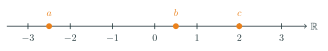
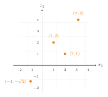
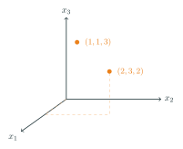
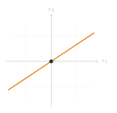
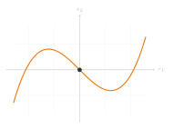
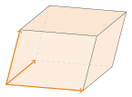
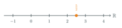
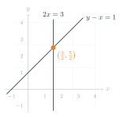
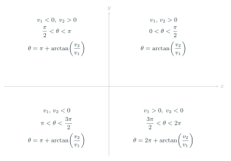

Numbering on this page runs in one sequence per chapter, so every definition, theorem, example and exercise here has a number. Where an item also appears in your lecture notes, its number there is given after the name. The two do not always agree, so when you cite something from the notes, quote the number the notes give it.
Contents
Course format
- Three lectures per week (2h, 2h, 1h)
- Tutorials every week
- Homework: written submission and online quiz, due 12 noon Wednesday
- Lecture notes and recordings on Blackboard
Dr Rachael Carey is the unit organiser for the first half of the course — watch her announcements on Blackboard.
Assessment
- 10% — quizzes, weeks 2–5 and 8–11. Highest 6 of 8 scores count.
- 90% — final exam, December, written.
Engage with the quizzes and tutorials and you will do well in the exam.
Course content: first six weeks
- $\mathbb{R}^n$
- Vectors and points in $\mathbb{R}^n$
- Matrices
- Finding solution(s) to linear equations
- Determinants
- Linear maps
Where we start



What we study

Flat objects, passing through the origin.
What we don't study

Curved objects. Beautiful, but not linear algebra.
Finding solution(s) to linear equations
If $\;2x = 5,\;$ then $x = \;?$
Determinants

A determinant is a single number attached to a square matrix. Geometrically it measures signed volume — the volume of the solid whose edges are the columns of the matrix, together with a sign.
Linear algebra is wonderful!
1. You can visualise concepts most of the time
$x = \tfrac{5}{2}$ is an equation, so this is algebra. It is also a point on $\mathbb{R}^1$, so this is geometry.

Another example: $2x = 3$ and $y - x = 1$ are two lines in $\mathbb{R}^2$, meeting at one point, $\left(\tfrac{3}{2}, \tfrac{5}{2}\right)$.

2. It has applications throughout science
- Other parts of mathematics
- Physics
- Data science
- Computer graphics
- Artificial intelligence
Computer graphics
Computer graphics needs vast numbers of linear algebra calculations, all at once. Doing them in parallel is precisely what a GPU is built for.
Artificial intelligence
Nvidia: $+109\%$ by 24 May 2023, then $+24\%$ in one day, adding $\$184$ billion. It ended 2023 up $239\%$. Training an LLM needs vast numbers of matrix calculations.
Let's learn some maths
In maths texts we have: Definition, Theorem, Proposition, Lemma, Corollary, Example, Proof, Exercise, Remark.
Definitions
A definition in mathematics is far more precise than an everyday one: it means exactly what it says — no more and no less.
- Everything that satisfies the properties is an example of the concept.
- Every possible example satisfies all of the properties.
- There is no “sometimes” and no ambiguity — an object either satisfies the definition or it does not.
Theorems and proofs
Theorems, propositions, lemmas and corollaries are all true statements, proved in the notes or as an exercise.
- Theorems and propositions are usually main results: very important results are called theorems, and interesting but perhaps not quite as important ones are called propositions.
- Lemmas are usually more minor or technical results, used to prove later ones.
- Corollaries follow fairly immediately from a previous theorem.
Standard Euclidean $n$-space
We can call the elements of $\mathbb{R}^n$ either points or vectors. So $\mathbb{R}^2$ is the set of all ordered pairs $(x_1, x_2)$ with $x_1, x_2 \in \mathbb{R}$, and we call $\mathbb{R}^2$ the Euclidean plane.
Vector notation
We write an element of $\mathbb{R}^n$ as a row, $x = (x_1, x_2, \dots, x_n)$, or as a column vector. These mean the same thing.
We can encode information in vectors
$(\text{height in cm}, \; \text{left- or right-handed}, \; \text{eye colour as RGB})$, where left-handed $= 1$ and right-handed $= 0$. A right-handed person, $180$ cm tall, with blue eyes:
More examples
Space and time:
And we can keep adding whatever we want to record:
You can assign vectors to words too!
Adding vectors, and multiplying by a scalar
Both operations are component-wise. Note we are not defining the multiplication of two vectors here.
What is $\;\begin{pmatrix} 1 \\ 3 \end{pmatrix} + \begin{pmatrix} 4 \\ 5 \\ 7 \end{pmatrix}$?
Linear combinations
For $v, w \in \mathbb{R}^n$ and $\lambda, \mu \in \mathbb{R}$, we call $\lambda v + \mu w$ a linear combination of $v$ and $w$. More generally, for $v_1, \dots, v_k \in \mathbb{R}^n$ and $\lambda_1, \dots, \lambda_k \in \mathbb{R}$,
\[ \lambda_1 v_1 + \lambda_2 v_2 + \dots + \lambda_k v_k = \sum_{i=1}^{k} \lambda_i v_i. \]What is the second component of $\;8\,(3, \pi, 6) \; - \; 3\,(2, \pi, 1)$?
The zero vector
For any $v \in \mathbb{R}^n$ we have $0v = (0,0,\dots,0)$. We write this vector as $\mathbf{0}$, so that $v + \mathbf{0} = \mathbf{0} + v = v$.
In $0v = \mathbf{0}$, the $0$ on the left is the scalar $0 \in \mathbb{R}$, and the $\mathbf{0}$ on the right is the vector $(0,0,\dots,0) \in \mathbb{R}^n$.
Negatives and subtraction
For any $v \in \mathbb{R}^n$, $\;v + (-1)v = \mathbf{0}$, so $(-1)v = -v$. We call $-v$ the negative of $v$, and we write $\;w - v := w + (-1)v$.
Addition and negatives, pictured in $\mathbb{R}^2$.
A useful piece of notation
Example 1.5. In $\mathbb{R}^2$, $e_1 = \begin{pmatrix} 1 \\ 0 \end{pmatrix}$ and $e_2 = \begin{pmatrix} 0 \\ 1 \end{pmatrix}$.
Example 1.6. In $\mathbb{R}^3$, $e_1 = \begin{pmatrix} 1 \\ 0 \\ 0 \end{pmatrix}$, $e_2 = \begin{pmatrix} 0 \\ 1 \\ 0 \end{pmatrix}$ and $e_3 = \begin{pmatrix} 0 \\ 0 \\ 1 \end{pmatrix}$.
The dot product
Input: two vectors. Output: a number.
The output can be negative.
Properties of the dot product
- $x \cdot y = y \cdot x$.
- $x \cdot (v + w) = x \cdot v + x \cdot w$ and $(x + y) \cdot v = x \cdot v + y \cdot v$.
- $(\lambda x) \cdot y = \lambda (x \cdot y)$ and $x \cdot (\lambda y) = \lambda (x \cdot y)$.
- $x \cdot x \geq 0$, and $x \cdot x = 0$ is equivalent to $x = \mathbf{0}$.
The norm
A vector of norm $1$ is a unit vector; $\hat{x} = \dfrac{1}{\|x\|} x$ is the unit vector in the direction of $x$. For $v, w \in \mathbb{R}^n$, $\|v - w\|$ is the distance between $v$ and $w$.
Orthogonal vectors
For example, if $x = (1,1)$ and $y = (1,-1)$ then $x \cdot y = 1 \cdot 1 + 1 \cdot (-1) = 0$, so $x$ and $y$ are orthogonal.
Pythagoras in $\mathbb{R}^n$
The proof is left as an exercise.
The Cauchy–Schwarz inequality
A fundamental property of the dot product is the Cauchy–Schwarz inequality, which relates the dot product of two vectors to their norms.
Proof (choosing $t$)
If $y = \mathbf{0}$ both sides are $0$, so assume $y \neq \mathbf{0}$. For every $t \in \mathbb{R}$, Theorem 1.8 (iv) gives $(x - ty) \cdot (x - ty) \geq 0$, and expanding with parts (i)–(iii), \[ 0 \;\leq\; (x - ty) \cdot (x - ty) \;=\; x \cdot x \;-\; 2t \, (x \cdot y) \;+\; t^2 \, (y \cdot y). \] Now choose $t = \dfrac{x \cdot y}{y \cdot y}$, the value of $t$ minimising the right-hand side. Substituting, \[ 0 \;\leq\; \|x\|^2 - \frac{(x \cdot y)^2}{\|y\|^2}, \] so $(x \cdot y)^2 \leq \|x\|^2 \|y\|^2$, and taking square roots gives $|x \cdot y| \leq \|x\| \, \|y\|$.□Proof (discriminant)
Again assume $y \neq \mathbf{0}$, and regard the same expression as a quadratic in $t$: \[ q(t) \;=\; \|x - ty\|^2 \;=\; \underbrace{\|y\|^2}_{A} t^2 \; \underbrace{-\, 2(x \cdot y)}_{B} \, t \;+\; \underbrace{\|x\|^2}_{C}. \] Being a squared norm, $q(t) \geq 0$ for every real $t$. For a real quadratic with $A > 0$, \[ At^2 + Bt + C \geq 0 \ \text{ for all } t \in \mathbb{R} \quad \Longleftrightarrow \quad \Delta = B^2 - 4AC \leq 0 . \] Here $A = \|y\|^2 > 0$ precisely because $y \neq \mathbf{0}$, which is what the case split is for. So $\Delta \leq 0$, that is \[ 4(x \cdot y)^2 - 4\|y\|^2\|x\|^2 \leq 0, \qquad\text{i.e.}\qquad (x \cdot y)^2 \leq \|x\|^2\|y\|^2, \] and taking square roots gives the result.□The two proofs are the same quadratic seen from two sides. The value $t = (x \cdot y)/\|y\|^2$ chosen in the first is exactly the vertex $t = -B/2A$ of the parabola in the second: one evaluates $q$ at its minimum, the other says the parabola never crosses the axis.
You can check this on the four number lines above: drag $x$ and $y$, and compare the value on the $x \cdot y$ line against the product of the $\|x\|$ and $\|y\|$ values. The dot product never escapes that bound.
The norm is the distance from the origin
So the definition has to agree with what "distance" already means on a line, in the plane and in space — and that is what forces the formula, rather than it being an arbitrary choice:
- In $\mathbb{R}^1$ the distance from $0$ to $x$ is $|x|$, so $\|x\| = |x|$.
- In $\mathbb{R}^2$, $x$ and $y$ are the two legs of a right-angled triangle whose hypotenuse runs from the origin to $(x,y)$. Pythagoras gives $\|(x,y)\|^2 = x^2 + y^2$.
- In $\mathbb{R}^3$ apply Pythagoras twice: first in the horizontal plane to the shadow of the vector, then in the vertical triangle standing on that shadow. This gives $\|(x,y,z)\|^2 = x^2 + y^2 + z^2$.
So $\|x\| = \sqrt{x \cdot x}$ is not a new idea — it is the only thing distance could mean, written in coordinates.
Properties of the norm
- $\|v\| \geq 0$ for all $v \in \mathbb{R}^n$, and $\|v\| = 0$ if and only if $v = \mathbf{0}$.
- $\|\lambda v\| = |\lambda| \, \|v\|$ for all $\lambda \in \mathbb{R}$, $v \in \mathbb{R}^n$.
- $\|v + w\| \leq \|v\| + \|w\|$ for all $v, w \in \mathbb{R}^n$ (this is known as the triangle inequality).
Proof
- By Theorem 1.8 (iv), $v \cdot v \geq 0$, so $\|v\| = \sqrt{v \cdot v}$ is a well-defined non-negative real number; and the same part gives $v \cdot v = 0 \iff v = \mathbf{0}$, so $\|v\| = 0 \iff v = \mathbf{0}$.
- A direct computation: \[ \|\lambda v\| = \sqrt{(\lambda v_1)^2 + \dots + (\lambda v_n)^2} = \sqrt{\lambda^2 \bigl(v_1^2 + \dots + v_n^2\bigr)} = \sqrt{\lambda^2} \, \sqrt{v_1^2 + \dots + v_n^2} = |\lambda| \, \|v\| , \] using $\sqrt{\lambda^2} = |\lambda|$ rather than $\lambda$. That is exactly where the modulus on the right-hand side comes from.
- Expand the squared norm and apply Cauchy–Schwarz: \[ \|v + w\|^2 = (v+w) \cdot (v+w) = v \cdot v + 2 \, v \cdot w + w \cdot w = \|v\|^2 + 2 \, v \cdot w + \|w\|^2 . \] By Theorem 1.13, $v \cdot w \leq |v \cdot w| \leq \|v\| \, \|w\|$, so \[ \|v + w\|^2 \leq \|v\|^2 + 2\|v\| \, \|w\| + \|w\|^2 = \bigl( \|v\| + \|w\| \bigr)^2 , \] and taking square roots gives $\|v + w\| \leq \|v\| + \|w\|$.□
An application: distance as similarity
This section goes beyond the lecture notes and is not examinable. It is here because it is the shortest honest answer to the question of what a norm is for.
A distance tells you how far apart two things are. If the things are pictures, that is a statement about how alike they look, and almost everything a computer does with images rests on it. The step that makes it possible is turning a picture into a vector.
Suppose the picture is $150$ pixels square. Each pixel carries a red, a green and a blue value, so the whole picture is
\[ 150 \times 150 \times 3 = 67\,500 \]numbers, which is to say a single point of $\mathbb{R}^{67500}$. Nothing has been thrown away and nothing has been invented: the picture is that vector, written differently. And once pictures are vectors, $\|x - y\|$ is a number measuring how unlike two pictures are, computed by Definition 1.9 exactly as in the plane.
This is what supervised learning starts from. You are given a pile of pictures already labelled, these are cats and those are dogs, which in vector terms is a pile of labelled points in $\mathbb{R}^{67500}$. A new picture arrives as a new point, and the simplest possible question you can ask is which labelled points it is nearest to.
The picture is drawn in two dimensions because that is what fits on a page, but nothing in the idea depends on that: the same distance, the same comparison, and the same conclusion work in $\mathbb{R}^{67500}$, where they cannot be drawn at all. That is the usual reason for setting a subject up in $\mathbb{R}^n$ rather than in the plane.
Two photographs of the same cat, one shifted a single pixel to the left, are far apart in $\mathbb{R}^{67500}$, because almost every coordinate has changed. Raw distance between pixels is a crude measure of similarity, and most of the work in the subject goes into finding a better vector to measure, rather than a better way to measure. The distance stays; what changes is what you take the distance between.
The angle between two vectors
The dot product also lets us define the angle between two vectors.
This definition makes sense precisely because of Cauchy–Schwarz. Theorem 1.13 gives $|x \cdot y| \leq \|x\| \, \|y\|$, that is
\[ -1 \;\leq\; \frac{x \cdot y}{\|x\| \, \|y\|} \;\leq\; 1, \]and every number in $[-1, 1]$ is $\cos \theta$ for exactly one $\theta \in [0, \pi]$. So the angle exists and is unique. If $x$ and $y$ are orthogonal in the sense of Definition 1.11 then $x \cdot y = 0$, so $\cos \theta = 0$ and $\theta = \pi/2$, as expected.
In $\mathbb{R}^2$ one can check that this definition agrees with the geometric way of measuring an angle. The notes leave that as an exercise.
How do we visualise the dot product?
Polar form in the Euclidean plane
A unit vector in the plane is determined by the angle $\theta$ it makes with the $x$-axis, and elementary geometry gives it as
\[ \begin{pmatrix} \cos \theta \\ \sin \theta \end{pmatrix}, \qquad \left\| \begin{pmatrix} \cos \theta \\ \sin \theta \end{pmatrix} \right\| = 1 . \]Multiplying it by a positive scalar reaches any non-zero vector of the plane, and the scalar needed is exactly the norm.
Proof
Writing $v = (v_1, v_2)$, we need $\lambda > 0$ and $\theta \in [0, 2\pi)$ with \[ \begin{pmatrix} v_1 \\ v_2 \end{pmatrix} = \lambda \, \begin{pmatrix} \cos \theta \\ \sin \theta \end{pmatrix} = \begin{pmatrix} \lambda \cos \theta \\ \lambda \sin \theta \end{pmatrix} . \] Taking norms and using Theorem 1.14 (ii), the right-hand side has norm $|\lambda| \cdot 1 = \lambda$, since $\lambda > 0$ and the column vector above is a unit vector. So $\lambda$ is forced: \[ \lambda = \|v\| . \] It remains to solve \[ \cos \theta = \frac{v_1}{\|v\|}, \qquad \sin \theta = \frac{v_2}{\|v\|} . \] These two numbers satisfy $\bigl(v_1/\|v\|\bigr)^2 + \bigl(v_2/\|v\|\bigr)^2 = 1$, so the pair lies on the unit circle, and there is exactly one $\theta \in [0, 2\pi)$ with those cosine and sine. Hence $\theta$ is forced too.□In practice one computes $\theta$ from $\arctan(v_2/v_1)$, but the quadrant of $(v_1, v_2)$ decides which value in $[0, 2\pi)$ to take, since $\arctan$ only returns values in $(-\pi/2, \pi/2)$. The converse also holds: given $\theta \in [0, 2\pi)$ and $\lambda \geq 0$ there is a unique vector $v = \lambda \begin{pmatrix} \cos \theta \\ \sin \theta \end{pmatrix}$ of that direction and length.

What would be an analogue of polar coordinates in three dimensions?
Complex numbers
The equation \[ x^2 = -1 \] has no solution among the real numbers, because a real square is never negative. So we define a new number $i$ to be a solution of it, $i^2 = -1$, and then take everything we can build from $i$ and the reals.
We write $z = x + iy$ and call $x = \operatorname{Re} z$ the real part and $y = \operatorname{Im} z$ the imaginary part of $z$. What is remarkable is that having added this one new number, every polynomial equation with real or complex coefficients has a solution in $\mathbb{C}$. This is the Fundamental Theorem of Algebra, proved by the great German mathematician Carl Friedrich Gauss in his doctoral thesis of 1799, at the age of 22: every non-constant polynomial with complex coefficients has a root in $\mathbb{C}$. He returned to it throughout his life, giving four proofs in all.
Intuition: $i$ is a quarter turn
Which number on the real line do you multiply $1$ by to get $-1$?
Only $-1$ itself. And look at what that does geometrically: it sends the point $1$ to the point $-1$, that is, it turns it through $180^\circ$ about the origin. Multiplying by $-1$ is a half turn.
So which rotation, applied twice to $1$, gives $-1$?
A quarter turn: $90^\circ$ twice is $180^\circ$. But a quarter turn takes $1$ off the real line altogether. That is exactly what $i$ is. Multiplying by $i$ is a quarter turn, and doing it twice gives $i^2 = -1$, the half turn we started with. The number that had no place on the line is simply the number that lives a quarter turn away from it.
Operations on complex numbers
The multiplication rule is not an extra assumption: it is what you get by multiplying out as usual and then substituting $i^2 = -1$,
A complex number is a pair of real numbers, so we may associate with $z = x + iy$ the vector $v(z) = (x, y) \in \mathbb{R}^2$. This identifies $\mathbb{C}$ with the plane, which we then call the complex plane. Real numbers lie on the $x$-axis and purely imaginary numbers $z = iy$ on the $y$-axis, so these are called the real and imaginary axes.
Conjugation is reflection in the real axis. It turns a product into something real:
\[ z \bar{z} = (x + iy)(x - iy) = x^2 + y^2 = \|v(z)\|^2 , \]so the norm of the vector representing $z$ can be recovered from the conjugate. In the complex setting this is called the modulus of $z$,
\[ |z| := \sqrt{\bar{z} z} = \sqrt{x^2 + y^2} . \]This is what makes division work: for $z \neq 0$,
\[ \frac{1}{z} = \frac{\bar{z}}{\bar{z} z} = \frac{\bar{z}}{|z|^2} = \frac{x}{x^2 + y^2} - i \, \frac{y}{x^2 + y^2}, \qquad\text{and so}\qquad \frac{z_1}{z_2} = \frac{\bar{z_2} z_1}{|z_2|^2} . \]As well as treating complex numbers as vectors in $\mathbb{R}^2$, we can consider vectors whose components are themselves complex.
This is Definition 1.2 again, with $\mathbb{C}$ in place of $\mathbb{R}$. We return to complex vectors later in the course, where working in $\mathbb{C}^n$ turns out to have real advantages over $\mathbb{R}^n$.
The polar form of complex numbers and Euler's formula
To see what multiplication does geometrically it helps to switch to polar coordinates. Take $z = x + iy \neq 0$, with associated point $v(z) = (x,y)$. By Theorem 1.16 we can write $v(z) = \lambda \begin{pmatrix} \cos \theta \\ \sin \theta \end{pmatrix}$, where $\lambda = \sqrt{x^2 + y^2} = |z|$ and $\theta$ is the angle the line from the origin to $(x,y)$ makes with the $x$-axis. In complex notation,
\[ z = x + iy = |z| \bigl( \cos \theta + i \sin \theta \bigr) . \]We call $\theta$ the argument (or phase) of $z$. Note that $z = 0$ is special: its argument is not defined.
There is a second route to the same thing, through the exponential. For $z \in \mathbb{C}$ the exponential is defined by the series
\[ e^z := 1 + z + \frac{1}{2} z^2 + \frac{1}{3!} z^3 + \frac{1}{4!} z^4 + \dots = \sum_{n=0}^{\infty} \frac{1}{n!} z^n , \tag{2.1} \]which makes sense for complex $z$ because we can take powers and add. (Convergence is not discussed here; the series converges for every $z \in \mathbb{C}$.) We will use that for arbitrary complex $z_1, z_2$,
\[ e^{z_1} e^{z_2} = e^{z_1 + z_2} . \tag{2.2} \]Proof (sketch)
This is really a calculus result, and a full justification needs more calculus than we have here. Like $(2.1)$, sine and cosine can be defined by power series: \[ \sin z = z - \frac{1}{3!} z^3 + \frac{1}{5!} z^5 - \dots , \qquad \cos z = 1 - \frac{1}{2} z^2 + \frac{1}{4!} z^4 - \dots \] Put $z = i\theta$ in $(2.1)$. Since $(i\theta)^2 = -\theta^2$, $(i\theta)^3 = -i\theta^3$, $(i\theta)^4 = \theta^4$, $(i\theta)^5 = i\theta^5$, and so on, the terms alternate between real and imaginary:Putting $\theta = \pi$ into Euler's formula gives $e^{i\pi} = \cos\pi + i\sin\pi = -1$, that is
\[ e^{i\pi} + 1 = 0 , \]an identity relating $e$, $i$, $\pi$, $1$ and $0$ in a single line. The series of $(2.1)$ shows it happening: with $z = i\pi$ each term is a step in the complex plane, and the running totals spiral inwards onto $-1$.
In the notation of Theorem 1.16 this says $v(e^{i\theta}) = \begin{pmatrix} \cos \theta \\ \sin \theta \end{pmatrix}$. So every $z \neq 0$ can be written in polar form
\[ z = \lambda e^{i\theta}, \]where $\lambda = |z|$ is the modulus and $\theta$ the argument. Multiplication now becomes easy: if $z_1 = \lambda_1 e^{i\theta_1}$ and $z_2 = \lambda_2 e^{i\theta_2}$ then, by $(2.2)$,
\[ z_1 z_2 = \lambda_1 \lambda_2 \, e^{i(\theta_1 + \theta_2)}, \qquad \frac{z_1}{z_2} = \frac{\lambda_1}{\lambda_2} \, e^{i(\theta_1 - \theta_2)} . \]So multiplying complex numbers multiplies the moduli and adds the arguments. In particular, if $\lambda = 1$ then multiplying by $e^{i\theta}$ is exactly rotation by $\theta$ in the complex plane.
Polar form also makes large powers easy. By $(2.2)$, $(e^{i\theta})^n = e^{in\theta}$ for $n \in \mathbb{N}$, and applying Euler's formula to both sides gives the following.
Proof
By Theorem 2.7, $\cos\theta + i\sin\theta = e^{i\theta}$, so the left-hand side is $(e^{i\theta})^n$. Repeated use of $(2.2)$ gives $(e^{i\theta})^n = e^{in\theta}$, and applying Theorem 2.7 once more to $e^{in\theta}$ gives $\cos(n\theta) + i\sin(n\theta)$.□Trigonometric identities now come for free. Taking $n = 2$ and expanding, $\cos^2\theta + 2i\sin\theta\cos\theta - \sin^2\theta = \cos(2\theta) + i\sin(2\theta)$; real and imaginary parts give
\[ \cos(2\theta) = \cos^2\theta - \sin^2\theta, \qquad \sin(2\theta) = 2 \sin\theta \cos\theta . \]Likewise $e^{i\theta} e^{-i\phi} = e^{i(\theta - \phi)}$, expanded by Euler on both sides, gives
Roots of unity
De Moivre answers a natural question at once: what are the solutions of
\[ z^n = 1 \, ? \]Taking moduli, $|z|^n = 1$, so $|z| = 1$ and every solution lies on the unit circle. Writing $z = e^{i\theta}$, the equation becomes $e^{in\theta} = 1$, which holds exactly when $n\theta$ is a whole multiple of $2\pi$. So $\theta = 2\pi k / n$, and there are precisely $n$ distinct solutions,
\[ \omega_k = e^{2\pi i k / n} = \cos\!\left(\frac{2\pi k}{n}\right) + i \sin\!\left(\frac{2\pi k}{n}\right), \qquad k = 0, 1, \dots, n-1 . \]These are the $n$th roots of unity. They all have modulus $1$ and their arguments are equally spaced by $2\pi/n$, so they sit at the vertices of a regular $n$-gon inscribed in the unit circle, with one vertex at $z = 1$. Multiplying by $\omega_1$ rotates the whole picture by one step round the circle.
Two videos, if you have an evening
Neither is required and neither is examinable. They are here because complex numbers are one of the places where the history and the pictures are worth as much as the algebra.
Where complex numbers actually came from
Not, as it happens, from $x^2 + 1 = 0$. Mathematicians were content to say that equation has no solution and move on. They came instead from the cubic. In the 1500s del Ferro, Tartaglia and Cardano found a formula for solving $x^3 + px = q$, published in Cardano's Ars Magna of 1545, and it had an awkward feature: for some cubics whose roots are all perfectly ordinary real numbers, the formula insists on passing through square roots of negative quantities on the way. The answers are real, but the route is not. Bombelli, in 1572, took the view that one might simply carry those quantities along and let them cancel at the end, which they do. That is closer to how $i$ earned its place than any appeal to $x^2 = -1$: it was useful before it was respectable. The names came later, and the picture later still, the plane we have been drawing on being the work of Wessel, Argand and Gauss around 1800.
Complex transformations, and a hole in an Escher print
This one is harder, and worth it. Escher's lithograph Print Gallery of 1956 shows a man in a gallery looking at a print of a harbour town, which contains the gallery he is standing in. The spiral never quite closes: in the middle of the picture Escher left a blank disc and signed it. In 2003 Lenstra and de Smit, at Leiden, worked out what the missing piece must be, and the tool was complex analysis. The idea connects directly to what we have been doing. Multiplying by a complex number rotates and scales at once, so repeating a rotate-and-scale means multiplying over and over; and the complex logarithm turns multiplying into adding, which straightens Escher's spiral into a flat, repeating grid where the missing piece can simply be read off. The video builds that from the beginning.
Week 2
Linear equations
The simplest linear equation has a single unknown, \[ ax = b, \] where $x$ is the unknown and $a, b \in \mathbb{R}$ are given, with $a \neq 0$. For $2x = 7$ we find $x = 7/2$. Linear means that no powers of $x$, and no more complicated expressions in $x$, are allowed: the equations \[ 3x^5 - 2x = 3 \qquad\text{and}\qquad x + \cos(x) = 1 \] are not linear.
Far more interesting is what happens with more than one unknown. The picture below carries one equation through one, two and three unknowns. Step through the examples with the buttons, or set the coefficients yourself, and watch what the solution set becomes.
So one equation in one unknown has one solution, one equation in two unknowns has a whole line of them, and one equation in three unknowns has a whole plane. Having named the pattern, we can write the general object down.
One warning before we go on. An equation on its own does not determine a solution set: we must also say how many unknowns are in play. The same equation $x = 0$ means three different things in $\mathbb{R}$, in $\mathbb{R}^2$ and in $\mathbb{R}^3$.
- In one unknown the solution set is \[ \{ x \in \mathbb{R} \;:\; x = 0 \} = \{0\}, \] a single point of $\mathbb{R}$.
- In two unknowns $y$ is unconstrained, so the solution set is \[ \{ (x,y) \in \mathbb{R}^2 \;:\; x = 0 \}, \] a line in $\mathbb{R}^2$: the $y$-axis.
- In three unknowns both $y$ and $z$ are unconstrained, so the solution set is \[ \{ (x,y,z) \in \mathbb{R}^3 \;:\; x = 0 \}, \] a plane in $\mathbb{R}^3$: the $yz$-plane.
Throughout this chapter the coefficients and the solutions are real numbers. Nothing forces that choice: replacing every $\mathbb{R}$ by $\mathbb{C}$ leaves the results of the chapter intact.
A single equation is rarely the whole story: usually several conditions have to hold at once. Asking for a solution then does not mean solving each equation on its own. It means finding one list of numbers $(x_1, x_2, \dots, x_n)$ that satisfies all of the equations at the same time.
In $\mathbb{R}^2$ each equation is a line, and a solution of the system is a point lying on every one of them. Drag the marked points below to move the lines about, and watch the verdict underneath change.
Three outcomes are possible, and the picture shows all three. The lines can meet in a single point, giving exactly one solution; they can fail to share any point at all, giving none; or they can lie on top of one another, in which case every point of that line is a solution and there are infinitely many. We will see later that for a linear system these are the only possibilities.
The same happens one dimension up. In $\mathbb{R}^3$ each equation is a plane, and a solution is a point lying on all of them. Three planes in general position meet in exactly one point.
Matrices
One often looks at the array of coefficients $a_{ij}$ defining a system as an object in its own right.
Matrices with elements in other sets are defined the same way: $M_{m,n}(\mathbb{C})$ is the set of matrices with complex elements. (The plural of matrix is matrices.)
An $m \times n$ matrix has $m$ rows and $n$ columns. Switch between them below.
The same shape of array can hold different kinds of number, and the notation records which:
The last one is square, so we use the shorthand $M_2(\mathbb{R})$ rather than $M_{2,2}(\mathbb{R})$.
Since $\mathbb{Z} \subseteq \mathbb{Q} \subseteq \mathbb{R} \subseteq \mathbb{C}$, the same holds for matrices of any fixed shape: an integer matrix is a rational one, a rational matrix is a real one, and so on. So
\[ M_{1,2}(\mathbb{Z}) \subseteq M_{1,2}(\mathbb{Q}) \subseteq M_{1,2}(\mathbb{R}) \subseteq M_{1,2}(\mathbb{C}) . \]$X \subseteq Y$ means every element of $X$ is also an element of $Y$. This allows $X = Y$. Most mathematical texts write $X \subset Y$ for exactly the same statement, so for us the two are interchangeable. This is worth saying because it is not the pattern you are used to from $\le$ and $<$, where the second really does exclude equality; $\subset$ carries no such implication unless an author says so.
When we do want to exclude equality we write $\subsetneq$, and to deny containment altogether we write $\nsubseteq$:
- $\mathbb{Z} \subseteq \mathbb{Q}$, and in fact $\mathbb{Z} \subsetneq \mathbb{Q}$, since $\tfrac{1}{2} \in \mathbb{Q}$ but $\tfrac{1}{2} \notin \mathbb{Z}$.
- $\{1, 2\} \subsetneq \{1, 2, 3\}$: contained, and the containment is strict.
- $\{1, 2\} \subseteq \{1, 2\}$ is true, but $\{1, 2\} \subsetneq \{1, 2\}$ is false: a set is a subset of itself, but not a strict one.
- $\{1, 2, 4\} \nsubseteq \{1, 2, 3\}$, because $4 \notin \{1, 2, 3\}$.
- $\varnothing \subseteq X$ for every set $X$, and $X \subseteq X$ for every set $X$.
Writing a matrix by its rows or columns
Besides $A = (a_{ij})$, it is often useful to name the rows and columns and write $A$ in terms of them. If the rows of $A$ are $r_1, r_2, \dots, r_m$ we may write
\[ A = \begin{pmatrix} r_1 \\ r_2 \\ \vdots \\ r_m \end{pmatrix} , \]and if the columns of $A$ are $c_1, c_2, \dots, c_n$ we may write
\[ A = \begin{pmatrix} c_1 & c_2 & \cdots & c_n \end{pmatrix} . \]For the matrix of Example 3.5 this reads
Matrix operations
Addition and multiplication by a scalar are the easy ones: both are done componentwise, and both need the two matrices to have exactly the same shape.
A note on these two: they come much later in your lecture notes than they do here, which is why the numbers they carry there, 3.21 and 3.22, are so far ahead of the ones on this page. The statements are unchanged.
For example,
\[ \begin{pmatrix} 1 & 4 \\ 2 & 5 \\ 3 & 6 \end{pmatrix} + \begin{pmatrix} 0 & -1 \\ 3 & 3 \\ -3 & 1 \end{pmatrix} = \begin{pmatrix} 1 & 3 \\ 5 & 8 \\ 0 & 7 \end{pmatrix} , \qquad 2 \begin{pmatrix} 1 & 4 \\ 2 & 5 \\ 3 & 6 \end{pmatrix} = \begin{pmatrix} 2 & 8 \\ 4 & 10 \\ 6 & 12 \end{pmatrix} . \]Addition has a neutral element, just as it does for numbers.
Directly from Definition 3.6, adding it changes nothing: for every $A \in M_{m,n}(\mathbb{R})$,
\[ A + 0 = 0 + A = A , \]since $a_{ij} + 0 = 0 + a_{ij} = a_{ij}$ for every entry. The zero matrix plays the role that $0$ plays for numbers.
Multiplication
Multiplication is the interesting one. Two arbitrary matrices cannot be multiplied at all: the shapes have to agree. But when they do, there is a product, and it is the following.
Note the shapes. For $BA$ to be defined at all, the number of columns of $B$ must equal the number of rows of $A$; here both are $m$. The result is $l \times n$: it has as many rows as $B$ and as many columns as $A$.
Two examples. The first uses the matrix of Example 3.5 as its right-hand factor.
The entry in row $1$, column $2$, for instance, is the first row of the left matrix dotted with the second column of the right: $1 \cdot 4 + 0 \cdot 5 + 2 \cdot 6 = 16$. A $2 \times 3$ times a $3 \times 2$ gives a $2 \times 2$. Reversing the order is also allowed here, but gives something of a different shape, a $3 \times 3$. Order matters twice over: the answer changes, and even the shape of the answer changes.
Not every pair can be multiplied at all:
In the second product the left matrix has $2$ columns and the right has $1$ row, and $2 \neq 1$.
A row and a column of matching length can be multiplied in either order, and the two answers could hardly look less alike. One way round gives a single number:
\[ \begin{pmatrix} 1 & 2 & 3 \end{pmatrix} \begin{pmatrix} 4 \\ 5 \\ 6 \end{pmatrix} = \begin{pmatrix} 1 \cdot 4 + 2 \cdot 5 + 3 \cdot 6 \end{pmatrix} = \begin{pmatrix} 32 \end{pmatrix} . \]A $1 \times 3$ times a $3 \times 1$ is $1 \times 1$, and a $1 \times 1$ matrix is naturally identified with the number in it. This is just the dot product of $(1,2,3)$ with $(4,5,6)$. Now try the other order.
The identity matrix
Among the diagonal matrices one plays a special role.
It is the neutral element for multiplication, as $0$ is for addition and $1$ is for numbers: for any $m \times n$ matrix $A$,
\[ A I_n = I_m A = A . \]Note the two different sizes: $I_n$ on the right, $I_m$ on the left. Try it.
Addition, scalar multiplication and the identity all behave much as they do for numbers. The remaining laws of matrix arithmetic are these.
- If $A, B$ are $m \times n$ and $C$ is $l \times m$, then $C(A+B) = CA + CB$.
- If $A, B$ are $m \times n$ and $C$ is $n \times l$, then $(A+B)C = AC + BC$.
- If $A$ is $m \times n$, $B$ is $n \times l$ and $C$ is $l \times k$, then $A(BC) = (AB)C$.
- If $A$ is $m \times n$, $B$ is $n \times l$ and $\lambda \in \mathbb{R}$, then $A(\lambda B) = \lambda (AB)$.
Parts (a) to (c) are Theorem 3.12 of the notes; part (d) is not stated there. The proof is a simple consequence of general properties of linear maps, which we come to later in the course.
The action of a matrix on a vector
As before, we may regard $x \in \mathbb{R}^n$ as a column matrix: an $n \times 1$ matrix with $n$ rows and one column,
\[ x = \begin{pmatrix} x_1 \\ x_2 \\ \vdots \\ x_n \end{pmatrix} \in M_{n,1}(\mathbb{R}) . \]Then an $m \times n$ matrix $A$ has $n$ columns and $x$ has $n$ rows, so the product $Ax$ is defined by the definition above, and is an $m \times 1$ matrix, that is, a vector in $\mathbb{R}^m$. Spelled out, that is the following.
Systems of linear equations in matrix form
This is what matrices were for. A system of $m$ linear equations in $n$ unknowns, as in Definition 3.3, is exactly the statement that $A$ sends $x$ to $b$: collecting the coefficients $a_{ij}$ into an $m \times n$ matrix $A$, the unknowns into $x \in \mathbb{R}^n$ and the right-hand sides into $b \in \mathbb{R}^m$, the whole system becomes the single equation
\[ Ax = b . \]Every statement about systems of equations can now be made about matrices instead. For a worked case, go back to the three planes in $\mathbb{R}^3$ and switch on show the matrix form: the three equations there become one $3 \times 3$ matrix acting on $(x, y, z)$, and turning an equation off drops a row from $A$.
A matrix as a map
The product $Ax$ can be read as a function: it takes a vector, or a point, and returns another one. The shapes say where it sends things. Take
\[ A = \begin{pmatrix} 1 & 4 \\ 2 & 5 \\ 3 & 6 \end{pmatrix} \in M_{3,2}(\mathbb{R}) . \]It has two columns, so it eats vectors with two entries, and three rows, so it returns vectors with three. It is a map
\[ A : \mathbb{R}^2 \to \mathbb{R}^3 , \qquad A \begin{pmatrix} a \\ b \end{pmatrix} = \begin{pmatrix} a + 4b \\ 2a + 5b \\ 3a + 6b \end{pmatrix} . \]Points of the plane are carried to points of space. In particular, as we saw,
\[ A \begin{pmatrix} 1 \\ 0 \end{pmatrix} = \begin{pmatrix} 1 \\ 2 \\ 3 \end{pmatrix} , \qquad A \begin{pmatrix} 0 \\ 1 \end{pmatrix} = \begin{pmatrix} 4 \\ 5 \\ 6 \end{pmatrix} , \]the two columns of $A$. Below, drag $v$ around the plane and watch $Av$ move in space.
The map $A : \mathbb{R}^n \to \mathbb{R}^m$ has an important property: it respects addition and scalar multiplication. That is, we may add two vectors and then apply the map, or apply the map to each and then add, and get the same answer.
- $A(x + y) = Ax + Ay$ for all $x, y \in \mathbb{R}^n$,
- $A(\lambda x) = \lambda Ax$ for all $x \in \mathbb{R}^n$ and $\lambda \in \mathbb{R}$.
Proof
Take the first property. Both $A(x+y)$ and $Ax + Ay$ are vectors in $\mathbb{R}^m$, so to show they are equal it is enough to show that their $i$th components agree, for each $i = 1, 2, \dots, m$. Write $z = A(x+y)$. By Definition 3.12 its $i$th component is
\[ z_i = a_{i1}(x_1 + y_1) + a_{i2}(x_2 + y_2) + \cdots + a_{in}(x_n + y_n) . \]In sigma notation, $\displaystyle z_i = \sum_{j=1}^{n} a_{ij}(x_j + y_j)$.
Multiplying out and gathering the $x$ terms together and the $y$ terms together,
\[ z_i = \bigl( a_{i1} x_1 + a_{i2} x_2 + \cdots + a_{in} x_n \bigr) + \bigl( a_{i1} y_1 + a_{i2} y_2 + \cdots + a_{in} y_n \bigr) . \]In sigma notation, $\displaystyle z_i = \sum_{j=1}^{n} a_{ij} x_j + \sum_{j=1}^{n} a_{ij} y_j$.
The first bracket is the $i$th component of $Ax$ and the second is the $i$th component of $Ay$, again by Definition 3.12. Writing the whole column out at once, this says
\[ A(x+y) = \begin{pmatrix} a_{11}(x_1 + y_1) + \cdots + a_{1n}(x_n + y_n) \\ \vdots \\ a_{m1}(x_1 + y_1) + \cdots + a_{mn}(x_n + y_n) \end{pmatrix} \] \[ = \begin{pmatrix} a_{11} x_1 + \cdots + a_{1n} x_n \\ \vdots \\ a_{m1} x_1 + \cdots + a_{mn} x_n \end{pmatrix} + \begin{pmatrix} a_{11} y_1 + \cdots + a_{1n} y_n \\ \vdots \\ a_{m1} y_1 + \cdots + a_{mn} y_n \end{pmatrix} = Ax + Ay . \]In sigma notation, $\displaystyle A(x+y) = \Bigl( \sum_{j=1}^{n} a_{ij}(x_j + y_j) \Bigr)_{i=1,\dots,m} = \Bigl( \sum_{j=1}^{n} a_{ij} x_j \Bigr)_i + \Bigl( \sum_{j=1}^{n} a_{ij} y_j \Bigr)_i = Ax + Ay$.
The second property goes the same way. Every entry of the column has a factor of $\lambda$, and pulling it out of the column is exactly scalar multiplication of a vector:
\[ A(\lambda x) = \begin{pmatrix} a_{11}\lambda x_1 + \cdots + a_{1n}\lambda x_n \\ \vdots \\ a_{m1}\lambda x_1 + \cdots + a_{mn}\lambda x_n \end{pmatrix} = \begin{pmatrix} \lambda\bigl( a_{11} x_1 + \cdots + a_{1n} x_n \bigr) \\ \vdots \\ \lambda\bigl( a_{m1} x_1 + \cdots + a_{mn} x_n \bigr) \end{pmatrix} \] \[ = \lambda \begin{pmatrix} a_{11} x_1 + \cdots + a_{1n} x_n \\ \vdots \\ a_{m1} x_1 + \cdots + a_{mn} x_n \end{pmatrix} = \lambda A x . \]In sigma notation, $\displaystyle A(\lambda x) = \Bigl( \sum_{j=1}^{n} a_{ij} \lambda x_j \Bigr)_i = \Bigl( \lambda \sum_{j=1}^{n} a_{ij} x_j \Bigr)_i = \lambda \Bigl( \sum_{j=1}^{n} a_{ij} x_j \Bigr)_i = \lambda A x$.□
So the action of a matrix is a linear map, since it respects addition and scalar multiplication. We return to linear maps in general later in the course.
Multiplying matrices composes their maps
The product was defined by a formula. That formula now pays for itself in one line.
Two proofs. The first is a one-line special case of Theorem 3.11; the second is the argument given in your lecture notes, which works with the entries directly.
Proof 1 (a special case of Theorem 3.11(c))
As we agreed when the action was defined, a vector $x \in \mathbb{R}^n$ is regarded as a column matrix, an element of $M_{n,1}(\mathbb{R})$. So multiplying a matrix by a vector is already a product of two matrices, and we may apply part (c) of Theorem 3.11 to
\[ B \in M_{l,m}(\mathbb{R}), \qquad A \in M_{m,n}(\mathbb{R}), \qquad x \in M_{n,1}(\mathbb{R}) , \]whose shapes match in exactly the way part (c) asks: $l \times m$ times $m \times n$ times $n \times 1$. Associativity then reads
\[ B(Ax) = (BA)x , \]which is the statement.□
This is not circular. Theorem 3.11 is proved from general properties of linear maps, not from this corollary, so associativity is already available here.
Proof 2 (as in the notes, entry by entry)
Write $y = Ax$, so that $y = (y_1, \dots, y_m)$ with
\[ y_k = \sum_{j=1}^{n} a_{kj} x_j , \]and write $z = By$, so that $z = (z_1, \dots, z_l)$ with
\[ z_i = \sum_{k=1}^{m} b_{ik} y_k . \]Substituting the first into the second and exchanging the order of summation,
\[ z_i = \sum_{k=1}^{m} b_{ik} \sum_{j=1}^{n} a_{kj} x_j = \sum_{j=1}^{n} \Bigl( \sum_{k=1}^{m} b_{ik} a_{kj} \Bigr) x_j = \sum_{j=1}^{n} c_{ij} x_j , \]which is the $i$th component of $(BA)x$ by Definition 3.12. This holds for every $i$, so the two vectors agree.□
Matrices and real numbers: what still holds?
Matrix algebra looks like ordinary algebra, and much of it is. But not all. For each statement below, decide whether it holds for matrices, for real numbers, or for both.
The pattern: addition, associativity and distributivity carry over unchanged. What fails is everything to do with order: products need not commute, and a product of non-zero matrices can vanish.
Square, diagonal and triangular matrices
A matrix is a square matrix if $m = n$. If $A = (a_{ij})$ is an $n \times n$ square matrix, the elements $a_{ii}$ are its diagonal elements, and the $a_{ij}$ with $i \neq j$ its off-diagonal elements. A square matrix is a diagonal matrix if all its off-diagonal elements are $0$.
Two more shapes worth naming. A square matrix $A = (a_{ij})$ is
- upper triangular if $a_{ij} = 0$ whenever $i > j$, so the zeros lie below the diagonal, for example $\begin{pmatrix} 1 & 3 & -1 \\ 0 & 2 & 1 \\ 0 & 0 & 3 \end{pmatrix}$;
- lower triangular if $a_{ij} = 0$ whenever $i < j$, so the zeros lie above the diagonal, for example $\begin{pmatrix} 1 & 0 & 0 \\ 5 & 2 & 0 \\ 2 & -7 & 3 \end{pmatrix}$.
Test yourself
Seven questions on the words just defined.
The transpose
Note the shape: an $m \times n$ matrix transposes to an $n \times m$ one. With the matrix of Example 3.5,
\[ A = \begin{pmatrix} 1 & 4 \\ 2 & 5 \\ 3 & 6 \end{pmatrix} \in M_{3,2}(\mathbb{R}) , \qquad A^t = \begin{pmatrix} 1 & 2 & 3 \\ 4 & 5 & 6 \end{pmatrix} \in M_{2,3}(\mathbb{R}) . \]The columns of $A$ have become the rows of $A^t$.
Symmetric and skew-symmetric matrices
A square matrix is symmetric if $A^t = A$, and anti-symmetric (or skew-symmetric) if $A^t = -A$. For example
\[ \begin{pmatrix} 1 & 2 & 3 \\ 2 & -1 & 0 \\ 3 & 0 & 1 \end{pmatrix} \text{ is symmetric}, \qquad \begin{pmatrix} 0 & -1 & 2 \\ 1 & 0 & 3 \\ -2 & -3 & 0 \end{pmatrix} \text{ is anti-symmetric}. \]Reflecting in the diagonal leaves the first unchanged and flips the sign of the second. Notice that the diagonal of an anti-symmetric matrix must be zero: $a_{ii} = -a_{ii}$ forces $a_{ii} = 0$.
Every square matrix splits into a symmetric part and an anti-symmetric part:
\[ A = \tfrac{1}{2}\bigl( A + A^t \bigr) + \tfrac{1}{2}\bigl( A - A^t \bigr) . \]The transpose and the dot product
One reason the transpose matters is how it interacts with the dot product.
The simplest case is worth stating on its own. A vector $v \in \mathbb{R}^n$ is an $n \times 1$ matrix: one column, $n$ rows. Its transpose $v^t$ is therefore $1 \times n$, a single row. So for $v, w \in \mathbb{R}^n$ the product $v^t w$ is $1 \times n$ times $n \times 1$, which is $1 \times 1$, and a $1 \times 1$ matrix is just a number. Writing it out,
The dot product is a matrix product in disguise: transpose the left vector and multiply. Note the order matters for the shape as well as the meaning. Turning them round gives $v w^t$, an $n \times 1$ times a $1 \times n$, which is a whole $n \times n$ matrix rather than a number.
Proof
The $i$th component of $Ax$ is $\sum_{j=1}^{n} a_{ij} x_j$, so
\[ y \cdot Ax = \sum_{i=1}^{m} \sum_{j=1}^{n} y_i a_{ij} x_j . \]On the other hand the $j$th component of $A^t y$ is $\sum_{i=1}^{m} a_{ij} y_i$, so
\[ (A^t y) \cdot x = \sum_{j=1}^{n} \sum_{i=1}^{m} x_j a_{ij} y_i . \]The order of summation does not matter in a finite double sum, so the two agree.□
Two proofs. The first works with the entries directly; the second, which is the one in your lecture notes, uses Theorem 3.17 and never looks at an entry until the last step.
Proof 1 (directly, entry by entry)
Both sides are $k \times m$ matrices, so it is enough to check that they agree in every entry. By Definition 3.16, entry $(i,j)$ of $(AB)^t$ is entry $(j,i)$ of $AB$, which by the definition of the product is
\[ \bigl( (AB)^t \bigr)_{ij} = (AB)_{ji} = \sum_{l=1}^{n} a_{jl} b_{li} . \]On the other side, using the definition of the product and then Definition 3.16 twice,
\[ \bigl( B^t A^t \bigr)_{ij} = \sum_{l=1}^{n} b_{li} a_{jl} . \]The two sums have the same terms, so the entries agree for all $i$ and $j$.□
Proof 2 (as in the notes, via Theorem 3.17)
Apply Theorem 3.17 to the matrix $AB$:
\[ \bigl( (AB)^t y \bigr) \cdot x = y \cdot (ABx) . \]Now apply Theorem 3.17 twice on the right, first to $A$ and then to $B$:
\[ y \cdot (ABx) = (A^t y) \cdot (Bx) = \bigl( B^t A^t y \bigr) \cdot x , \]and therefore
\[ \bigl( (AB)^t y \bigr) \cdot x = \bigl( B^t A^t y \bigr) \cdot x \qquad \text{for all } x, y . \]It remains to see why that forces the two matrices to be equal, and this is where the standard vectors earn their keep. For any matrix $M$, take $y = e_i$ and $x = e_j$. Then $M e_i$ is the $i$th column of $M$, proved in The general case below, and dotting with $e_j$ picks out its $j$th component:
\[ (M e_i) \cdot e_j = M_{ji} . \]So each choice of $i$ and $j$ reads off a single entry. Applying this to both sides gives $\bigl( (AB)^t \bigr)_{ji} = \bigl( B^t A^t \bigr)_{ji}$, and since $i$ and $j$ were arbitrary, every entry of the two matrices agrees.□
Note the order of the indices: with $y = e_i$ and $x = e_j$ you read off entry $(j,i)$, not $(i,j)$, because $y$ multiplies the matrix and $x$ selects the component. Taking $y = e_j$ and $x = e_i$ instead gives entry $(i,j)$ directly; either way, all entries are covered.
The set of solutions
So far we have only written systems down. Now we ask what their solutions look like, and how to get at them.
First, a name for the thing we are after.
Systems fall into two kinds according to their right-hand side.
A homogeneous system always has at least the solution $x = 0$. An inhomogeneous one need have no solution at all. But as soon as it has one, the homogeneous system determines all the rest: if $Ax_0 = b$ and $Ax = 0$, then
\[ A(x_0 + x) = Ax_0 + Ax = b + 0 = b , \]so $x_0 + x$ solves the system as well. Nothing else does.
Proof
We show that each set contains the other. If $x \in S(A,0)$, the calculation above gives $A(x_0 + x) = b$, so $\{x_0\} + S(A,0) \subseteq S(A,b)$.
Conversely, let $y \in S(A,b)$. Then
\[ A(y - x_0) = Ay - Ax_0 = b - b = 0 , \]so $y - x_0 \in S(A,0)$, and therefore $y = x_0 + (y - x_0)$ lies in $\{x_0\} + S(A,0)$. Hence $S(A,b) \subseteq \{x_0\} + S(A,0)$, and the two sets are equal.□
Showing each of two sets contains the other is the standard way to prove they are equal.
In words: the general solution of $Ax = b$ is one particular solution of it, plus the general solution of the homogeneous system $Ax = 0$. So the system has exactly one solution precisely when $S(A,0) = \{0\}$, and the set $S(A,0)$ carries all the freedom there is.
Three operations that do not change the solutions
All three are facts about real numbers before they are facts about systems. Take any two equations of the system and write them
\[ \begin{cases} A = B , \\ C = D , \end{cases} \]where $A, B, C, D, \lambda \in \mathbb{R}$ and each letter stands for one whole side. Then $A - B = 0$ and $C - D = 0$, so
\[ \lambda (A - B) = 0 , \qquad\text{that is}\qquad \lambda A = \lambda B , \]and an equation may be multiplied through by a constant. Since adding zero changes nothing,
\[ 0 = C - D = (C - D) + 0 = (C - D) + (A - B) = (A + C) - (B + D) , \]so $A + C = B + D$, and equals may be added to equals. Those two together say that a multiple of one equation may be added to another, and the order in which the equations are written plainly makes no difference. Stated for the whole system, they are the three operations below.
Write the system out in full again, as $m$ equations in $n$ unknowns:
Three things may be done to this list without changing which $x$ satisfy it:
- multiply an equation by a non-zero constant;
- add a multiple of one equation to another equation;
- exchange two of the equations.
That (i) and (iii) change nothing is clear. For (ii), suppose $x$ solves the system, and form a new system by adding $\lambda$ times equation $i$ to equation $j$. Then $x$ solves the new system too. Conversely, if $x'$ solves the new system, subtracting $\lambda$ times equation $i$ from equation $j$ returns the original system, so $x'$ solves that one as well. The two systems therefore have exactly the same solutions.
The augmented matrix is a device for bookkeeping: each column belongs to one unknown, each row to one equation, and the right-hand side travels in the last column instead of being tracked separately. Every step taken on the equations is then a step on the rows of this one array, so nothing is dropped or double-counted on the way to the solutions.
These have names. The three operations themselves are the elementary row operations of Definition 3.23. The procedure is called Gaussian elimination, or Gauss–Jordan elimination. Both forms are defined in Definition 3.25 below, and Theorem 3.26 says the reduction can always be carried out.
To see an augmented matrix being built, go back to the three planes in $\mathbb{R}^3$ and switch on show the augmented matrix: turning an equation off drops a row, and the last column is always the right-hand side.
The three operations on equations now read as three operations on the rows of that matrix.
- multiply a row by a non-zero number, $\text{row } i \to \lambda \times \text{row } i$;
- add a multiple of one row to another, $\text{row } i \to \text{row } i + \lambda \times \text{row } j$;
- exchange two rows, $\text{row } i \leftrightarrow \text{row } j$.
Proof
Applied to the augmented matrix of a system, the three elementary row operations are exactly the three operations (i), (ii) and (iii) on the equations themselves, and we have just seen that none of those changes the set of solutions. So the system read off from the new matrix has the same solutions as the system we started with.□
This is what makes the goal above reachable. Elementary row operations may be applied as often as we like and in any order, and the solution set never moves, so we are free to keep simplifying until the solutions can be read straight off.
Two forms matter in all of this, and they have names. They are the shapes we row-reduce towards, and everything below is about reaching them and reading the answer off.
- each row is either all zeros, or its leftmost non-zero number is $1$, called the leading 1 in that row, and
- if row $i$ is above row $j$, then the leading 1 of row $i$ is to the left of the leading 1 of row $j$; any zero rows are below any non-zero rows.
- in each column which contains a leading 1, all other numbers are $0$.
Leading 1s are also sometimes called pivots. In the walk-throughs further down, the first of which is Example 3.30 in the notes, row echelon form is reached at step 5, and then at steps 4, 3, 3 and 3 for the four that follow; that is the point at which each one's verdict can be read off. Reduced row echelon form comes at the last step of every example except the one with no solution, which stops at row echelon form because its final row already reads $0 = 1$.
Try it: RREF or not?
Reading the three conditions is one thing; spotting them is another. Each matrix below is either in reduced row echelon form or fails exactly one of the conditions. Decide which, as quickly as you can.
Two things are worth knowing before working through the examples: that this can always be done, and what the procedure is called.
Solving a system by row operations
Theorem 3.26 says the reduction can always be carried out, and Theorem 3.24 says the solutions never move while we carry it out. Between them we are free to keep applying row operations until the answer can be read off. The first example below is Example 3.30 in the notes, worked one operation at a time. The others are a system with no solution at all, one with a whole line of solutions, one with a whole plane of them, and one in four unknowns, so that every outcome a system can have appears in the same setting.
The walk-throughs all ended by reading the answer off the last matrix. That reading is a theorem.
- the system has no solutions if and only if the last column of $M$ contains a leading 1;
- the system has exactly one solution if and only if every column of $M$ except the last contains a leading 1;
- the system has infinitely many solutions if and only if the last column of $M$ contains no leading 1 and there are fewer than $n$ leading 1s in all. In that case, if $M$ has $k$ leading 1s, then $n - k$ of the unknowns may be chosen freely.
A matrix has many row echelon forms, but they all have their leading 1s in the same columns, so it does not matter which one you reduce to.
Each case has already appeared above. The no-solution example ended with a row reading $0 = 1$, which is a leading 1 in the last column. The one-solution example ended with a leading 1 in every column but the last. The two with infinitely many ended with fewer leading 1s than unknowns: one short gives a line, two short give a plane, and $n - k$ short gives $n - k$ unknowns to choose freely, which is why the example in four unknowns had a plane of solutions with $k = 2$.
Try it: $A$ acting on the standard vectors
Throughout these exercises, let
\[ A = \begin{pmatrix} 1 & 4 \\ 2 & 5 \\ 3 & 6 \end{pmatrix} . \]Now try the same trick on the other side. Note the shapes first: $A$ is $3 \times 2$, so it takes a $2$-vector on the right, but on the left it takes a row of length $3$.
In short, $A e_j$ is the $j$th column of $A$ and $e_i^t A$ is the $i$th row. Now put the two column answers together.
Reveal the steps one at a time.
Step 1
Split the vector into the two standard ones:
\[ \begin{pmatrix} a \\ b \end{pmatrix} = a \begin{pmatrix} 1 \\ 0 \end{pmatrix} + b \begin{pmatrix} 0 \\ 1 \end{pmatrix} . \]Step 2
Apply $A$ and use Theorem 3.13: the first property turns the sum into a sum, and the second pulls the scalars out.
\[ A \begin{pmatrix} a \\ b \end{pmatrix} = A \left( a \begin{pmatrix} 1 \\ 0 \end{pmatrix} + b \begin{pmatrix} 0 \\ 1 \end{pmatrix} \right) = a\, A \begin{pmatrix} 1 \\ 0 \end{pmatrix} + b\, A \begin{pmatrix} 0 \\ 1 \end{pmatrix} . \]Step 3
By the two questions above, $A\begin{pmatrix} 1 \\ 0 \end{pmatrix}$ is the first column of $A$ and $A\begin{pmatrix} 0 \\ 1 \end{pmatrix}$ is the second. So
\[ A \begin{pmatrix} a \\ b \end{pmatrix} = a \begin{pmatrix} 1 \\ 2 \\ 3 \end{pmatrix} + b \begin{pmatrix} 4 \\ 5 \\ 6 \end{pmatrix} . \]□The general case
Nothing above depended on the particular numbers. Write $e_i \in \mathbb{R}^n$ for the vector with a $1$ in the $i$th entry and $0$ everywhere else,
\[ e_i = \begin{pmatrix} 0 \\ \vdots \\ 0 \\ 1 \\ 0 \\ \vdots \\ 0 \end{pmatrix} \begin{matrix} \phantom{0} \\ \phantom{\vdots} \\ \phantom{0} \\ \leftarrow i \\ \phantom{0} \\ \phantom{\vdots} \\ \phantom{0} \end{matrix} \]Then the same check works for any matrix at all.
Why
By Definition 3.12 the $k$th component of $A e_i$ is
\[ a_{k1} \cdot 0 + \cdots + a_{k,i-1} \cdot 0 + a_{ki} \cdot 1 + a_{k,i+1} \cdot 0 + \cdots + a_{kn} \cdot 0 = a_{ki} , \]since every term except the $i$th is multiplied by zero. So the $k$th component of $A e_i$ is $a_{ki}$, for every $k$, and that column of entries is exactly the $i$th column of $A$.□
The same three steps, with $n$ in place of $2$.
Step 1
Split $x$ into the standard vectors:
\[ x = x_1 e_1 + x_2 e_2 + \cdots + x_n e_n . \]Step 2
Apply $A$ and use Theorem 3.13 again:
\[ A x = A \bigl( x_1 e_1 + \cdots + x_n e_n \bigr) = x_1 \, A e_1 + x_2 \, A e_2 + \cdots + x_n \, A e_n . \]Step 3
By the box above, $A e_i = c_i$ for each $i$, so
\[ A x = x_1 c_1 + x_2 c_2 + \cdots + x_n c_n . \]□$Ax$ is the linear combination of the columns of $A$ with the entries of $x$ as coefficients.
Say it out loud, then again tomorrow. Nearly everything ahead is easier once that sentence is the first thing you think when you see $Ax$: it turns a page of arithmetic into a statement about columns.
A matrix acting on a matrix, column by column
We have seen that $Ae_j$ is the $j$th column of $A$, and that $Ax$ is the linear combination of the columns of $A$ with the entries of $x$ as coefficients. There is one more thing of this kind worth knowing, and it is the most useful of the three. Suppose we have three vectors $v_1, v_2, v_3 \in \mathbb{R}^n$ and we lay them side by side as the columns of a matrix, which we write $\begin{pmatrix} v_1 & v_2 & v_3 \end{pmatrix}$. What happens if we multiply that by $A$?
Take it slowly. By the definition of the product, column $j$ of $A \begin{pmatrix} v_1 & v_2 & v_3 \end{pmatrix}$ is $A$ times column $j$ of $\begin{pmatrix} v_1 & v_2 & v_3 \end{pmatrix}$, and column $j$ of that is just $v_j$. So column $j$ of the answer is $Av_j$, and nothing else is going on.
Hint, if you would like one
Write $V = \begin{pmatrix} v_1 & v_2 & v_3 \end{pmatrix}$ and pick out its $j$th column with a standard vector: $V e_j = v_j$. Now apply that idea to the product:
\[ (AV) e_j = A (V e_j) = A v_j , \]using associativity of the product in the middle step. The left-hand side is the $j$th column of $AV$ and the right-hand side is $Av_j$, so the two matrices agree column by column, and therefore agree.□
This is block multiplication again, with $V$ cut into blocks one column wide. Once you have seen it that way, the result stops looking like a trick.
The two columns below the product are $Ab_1$ and $Ab_2$, where $b_1 = \begin{pmatrix} 1 \\ 3 \end{pmatrix}$ and $b_2 = \begin{pmatrix} 2 \\ 4 \end{pmatrix}$ are the columns of $B$. They are not a second calculation: they are the two columns of $AB$, written out on their own. That is Exercise 3.30 in numbers.
Rows, columns, and single entries
Collecting what we now have, all of it the same rule read in different directions.
- $A e_j$ is the $j$th column of $A$, a vector in $\mathbb{R}^m$;
- $e_i^t A$ is the $i$th row of $A$, a $1 \times n$ row;
- $e_i^t A e_j = a_{ij}$, the single entry in row $i$ and column $j$.
The pattern is worth saying once: multiplying on the right acts on columns, multiplying on the left acts on rows, and doing both at once leaves one number. Watch the shapes and you cannot mix them up: $A e_j$ is $m \times 1$, while $e_i^t A$ is $1 \times n$.
Solution
The row. Here $e_i \in \mathbb{R}^m$, so $e_i^t$ is a $1 \times m$ row whose $k$th entry is $1$ when $k = i$ and $0$ otherwise. Since $A$ is $m \times n$, the product $e_i^t A$ is $1 \times n$, and its $j$th entry is the row against the $j$th column of $A$:
\[ \bigl( e_i^t A \bigr)_j = \sum_{k=1}^{m} (e_i)_k \, a_{kj} = 0 \cdot a_{1j} + \cdots + 1 \cdot a_{ij} + \cdots + 0 \cdot a_{mj} = a_{ij} , \]every term but the $i$th being multiplied by zero. This holds for each $j = 1, \dots, n$, so
\[ e_i^t A = \begin{pmatrix} a_{i1} & a_{i2} & \cdots & a_{in} \end{pmatrix} , \]which is exactly the $i$th row of $A$.
The entry. Now multiply that row on the right by $e_j \in \mathbb{R}^n$. It is a $1 \times n$ times an $n \times 1$, so the answer is $1 \times 1$, a single number, and by the same argument only the $j$th term survives:
\[ \bigl( e_i^t A \bigr) e_j = \sum_{k=1}^{n} a_{ik} \, (e_j)_k = a_{ij} . \]The brackets were never needed: the product is associative, so $e_i^t A e_j$ may equally be read as $e_i^t (A e_j)$, picking the $i$th entry of the $j$th column. Either reading gives $a_{ij}$, as it must.□
Multiplying by a standard vector picks out one row. Multiplying by a cleverer matrix can do something to every row at once, which is the next thing to look at.
Elementary operation matrices
Each of the three elementary row operations can be carried out by multiplying on the left by a single matrix, obtained by doing that very operation to the identity. Those matrices have a name.
All three have a general form. Blanks below are zeros, and a box marks every entry the operation changed.
- $\text{row } i \to \lambda \times \text{row } i$, with $\lambda \neq 0$. One box, on
the diagonal, in row $i$ and column $i$:
\[ E \;=\; \begin{pmatrix} 1 & & & & \\ & \ddots & & & \\ & & \boxed{\lambda} & & \\ & & & \ddots & \\ & & & & 1 \end{pmatrix} \begin{matrix} \\ \\ \leftarrow i \\ \\ \\ \end{matrix} \]
- $\text{row } i \to \text{row } i + \lambda \times \text{row } j$. Two boxes, both in
row $i$: the $1$ it already had in column $i$, and a new $\lambda$ in column $j$:
\[ E \;=\; \begin{pmatrix} 1 & & & & & \\ & \ddots & & & & \\ & & 1 & & & \\ & & \boxed{\lambda} & \boxed{1} & & \\ & & & & \ddots & \\ & & & & & 1 \end{pmatrix} \begin{matrix} \\ \\ \\ \leftarrow i \\ \\ \\ \end{matrix} \]
with the $\lambda$ standing in column $j$ and the $1$ in column $i$.
- $\text{row } i \leftrightarrow \text{row } j$. Four boxes, at the corners of the square
cut out by rows $i, j$ and columns $i, j$: the two diagonal $1$s become $0$s and two $1$s
appear off the diagonal:
\[ E \;=\; \begin{pmatrix} 1 & & & & \\ & \boxed{0} & & \boxed{1} & \\ & & \ddots & & \\ & \boxed{1} & & \boxed{0} & \\ & & & & 1 \end{pmatrix} \begin{matrix} \\ \leftarrow i \\ \\ \leftarrow j \\ \\ \end{matrix} \]
the boxed columns being $i$ and $j$ in the same order.
Reading a row of $E$ tells you how that row of $EA$ is built: a $1$ in column $k$ takes row $k$ of $A$ as it stands, a $\lambda$ there takes $\lambda$ times it, and a blank takes none of it. Row $i$ in (ii) carries a $1$ in column $i$ and a $\lambda$ in column $j$, which says exactly that row $i$ of $EA$ is row $i$ of $A$ plus $\lambda$ times row $j$.
Reveal
Take an elementary matrix $E$, obtained by applying one particular elementary row operation to $I_m$. Then for any matrix $A \in M_{m,n}(\mathbb{R})$, multiplying on the left gives
\[ EA = \text{the matrix obtained by applying that same operation to } A . \]The operation is carried in the matrix. Build $E$ once by doing the operation to the identity, and from then on it performs that operation on anything you put to its right.
- multiply a row by a non-zero number, here
$\text{row } 2 \to \lambda \times \text{row } 2$:
\[ E = \begin{pmatrix} 1 & 0 & 0 \\ 0 & \lambda & 0 \\ 0 & 0 & 1 \end{pmatrix} , \qquad EA = \begin{pmatrix} 1 & 4 & 7 \\ 2\lambda & 5\lambda & 8\lambda \\ 3 & 6 & 9 \end{pmatrix} , \qquad\text{and at } \lambda = 3 ,\quad EA = \begin{pmatrix} 1 & 4 & 7 \\ 6 & 15 & 24 \\ 3 & 6 & 9 \end{pmatrix} \]
- add a multiple of one row to another, here
$\text{row } 3 \to \text{row } 3 + \lambda \times \text{row } 1$:
\[ E = \begin{pmatrix} 1 & 0 & 0 \\ 0 & 1 & 0 \\ \lambda & 0 & 1 \end{pmatrix} , \qquad EA = \begin{pmatrix} 1 & 4 & 7 \\ 2 & 5 & 8 \\ 3 + \lambda & 6 + 4\lambda & 9 + 7\lambda \end{pmatrix} , \qquad\text{and at } \lambda = -2 ,\quad EA = \begin{pmatrix} 1 & 4 & 7 \\ 2 & 5 & 8 \\ 1 & -2 & -5 \end{pmatrix} \]
- exchange two rows, here $\text{row } 1 \leftrightarrow \text{row } 2$:
\[ E = E_{12} = \begin{pmatrix} 0 & 1 & 0 \\ 1 & 0 & 0 \\ 0 & 0 & 1 \end{pmatrix} , \qquad EA = \begin{pmatrix} 2 & 5 & 8 \\ 1 & 4 & 7 \\ 3 & 6 & 9 \end{pmatrix} . \]
In each case $E$ is the identity with the operation already done to it, and nothing else. The entries say how the rows are mixed: row $i$ of $EA$ is $\sum_k E_{ik} \cdot (\text{row } k \text{ of } A)$. In (ii) the first column of $E$ is $(1, 0, \lambda)$, which says how much of row 1 of $A$ reaches each row of $EA$: all of it into row 1, none into row 2, and $\lambda$ times it into row 3. Multiplying on the right instead would act on columns, which is what the questions above were about.
Now some questions, with a different $A$: a matrix of plain letters, so that the answers cannot depend on a lucky choice of numbers. For the rest of this section let
\[ A = \begin{pmatrix} a & b & c \\ d & e & f \\ g & h & k \end{pmatrix} , \]Start by swapping. Let
\[ E_{12} = \begin{pmatrix} 0 & 1 & 0 \\ 1 & 0 & 0 \\ 0 & 0 & 1 \end{pmatrix} , \]the identity with its first two rows swapped.
Next, scale a row. Let
\[ E_2(\lambda) = \begin{pmatrix} 1 & 0 & 0 \\ 0 & \lambda & 0 \\ 0 & 0 & 1 \end{pmatrix} , \]the identity with $\lambda$ in place of the $1$ in row $2$. Multiplying $A$ on the left by it multiplies row $2$ of $A$ by $\lambda$ and leaves the other two rows alone:
Row $i$ of $E_2(\lambda) A$ is row $i$ of $E_2(\lambda)$ combined with the rows of $A$. Rows $1$ and $3$ of $E_2(\lambda)$ are $e_1$ and $e_3$, so they hand back rows $1$ and $3$ of $A$ unchanged, while row $2$ is $(0, \lambda, 0)$, which hands back $\lambda$ times row $2$ of $A$.
One more. Let
\[ E = \begin{pmatrix} 1 & 0 & 0 \\ \lambda & 1 & 0 \\ 0 & 0 & 1 \end{pmatrix} , \]the identity with $\lambda$ placed in row $2$, column $1$.
You can see all three of these operations in action, applied one at a time to a real system, in the interactive walk-through above: each step names the operation it applies and shows the matrix before and after it.
And what does a diagonal matrix do?
Now put a diagonal matrix beside the same $V$. Take the three columns in $\mathbb{R}^3$, so that $D$ fits on either side of $V$, and give them letters of their own, $v$, $w$ and $z$. That leaves the subscripts free to count entries down a column, which is what we want to watch. Write
Here the side matters, and this is worth pausing over, because it is the thing most people get backwards the first time. Multiplying on the left by $D$ scales the rows: row $i$ of $DV$ is $\lambda_i$ times row $i$ of $V$. Multiplying on the right by $D$ scales the columns:
If that seems arbitrary, look at where each entry has to come from. Column $j$ of $VD$ is $V$ times column $j$ of $D$, and column $j$ of $D$ is $\lambda_j e_j$. So column $j$ of $VD$ is $V(\lambda_j e_j) = \lambda_j (V e_j)$, which is $\lambda_j$ times the $j$th column of $V$. The $\lambda_j$ attaches to the $j$th column because it sits in the $j$th column of $D$.
You might revisit this when you study eigenvalues and eigenvectors.
Block matrices, and why a GPU can help
This last part is here because it explains the picture of Nvidia near the top of the page, and because it costs nothing once you have matrix multiplication.
A matrix may be cut into blocks by drawing lines between whole rows and whole columns. Write $A$ and $B$ each as four blocks,
Now the remarkable part: the blocks multiply exactly as single entries would.
Nothing about this depends on the matrices being $4 \times 4$, or on the cut falling in the middle. Take any $A \in M_{m,n}(\mathbb{R})$ and split its rows as $m = m_1 + m_2$ and its columns as $n = n_1 + n_2$, wherever you like:
so that $A_{11}$ is $m_1 \times n_1$, $A_{12}$ is $m_1 \times n_2$, $A_{21}$ is $m_2 \times n_1$ and $A_{22}$ is $m_2 \times n_2$.
It is the $2 \times 2$ rule from Definition 3.9 with numbers replaced by blocks. One thing does change: blocks are matrices, so $A_{11}B_{11}$ and $B_{11}A_{11}$ need not agree, and the order in every product above must be kept. The shared split $n_1 + n_2$ is what makes each product line up: $A_{11}$ has $n_1$ columns and $B_{11}$ has $n_1$ rows.
For the $A$ and $B$ above this gives
which is indeed the top-left corner of
Two special cases have already appeared on this page. Cutting $A$ into its columns and leaving $B$ whole is the statement that $Ae_j$ is the $j$th column; cutting into rows is the statement that $e_i^t A$ is the $i$th row. Those are block multiplication with blocks one column, or one row, wide.
Why this suits a GPU
This goes beyond the lecture notes and is not examinable.
Look at where each block of $AB$ comes from. The block $C_{11}$ needs only the top band of $A$ and the left band of $B$; $C_{22}$ needs only the bottom band and the right band. No block of the answer needs any other block of the answer. All four can therefore be computed at the same time, by four workers that never speak to one another, and the same is true if the matrix is cut into a thousand blocks instead of four. This is the sense in which matrix multiplication is parallel by nature, and it is why a processor with thousands of small cores beats one with a few fast ones on this particular job.
There is a second reason, and it is about memory rather than arithmetic. Multiplying two $n \times n$ blocks takes about $2n^3$ arithmetic operations but touches only about $3n^2$ numbers. The ratio $2n/3$ grows with $n$, so a larger tile does more arithmetic for each number fetched:
Fetching a number from a GPU's main memory costs far more than multiplying two numbers already in hand, so the winning strategy is to copy a tile of $A$ and a tile of $B$ into the small fast memory shared by a group of threads, wring all the arithmetic out of them there, and only then go back for the next tile. That is exactly what a tiled matrix-multiply kernel does, and choosing the tile size is choosing a point in the table above.
- G. H. Golub and C. F. Van Loan, Matrix Computations, 4th edition, Johns Hopkins University Press, 2013. Chapter 1 sets up block matrices and blocked algorithms, and is the standard reference for the numerical side.
- NVIDIA, CUDA C++ Programming Guide, the section Shared Memory. It works the tiled matrix multiplication above as its main example: each thread block loads one tile of $A$ and one of $B$ into shared memory, multiplies them, accumulates, and moves on.
Week 3
Inverting a matrix
We ended with a question: an elementary row operation can be undone, so the matrix that performs it ought to have a matrix that undoes it. Which matrix is that, and which matrices in general have one? That is the rest of this chapter.
Writing $A^{-1} = B$ takes something for granted: that there is only one such $B$ to name. Lemma 3.38 below is what entitles us to the notation.
The definition has a practical drawback. It asks whether some matrix $B$ exists, and there are infinitely many candidates, so it tells you nothing about how to look. The next theorem repairs that. It says the question is settled by row reduction, which is a procedure you can actually carry out: reduce $A$ and see whether you reach the identity.
- $A$ is invertible.
- There are elementary matrices $E_1, \dots, E_k$ with $E_k E_{k-1} \cdots E_1 A = I_n$.
By the Fact of life, multiplying by those elementary matrices is the same as performing the corresponding elementary row operations, so the condition says exactly that row reduction takes $A$ to $I_n$. The implication from right to left is Theorem 3.43 in the notes.
Why
This uses the two lemmas below, so it is worth coming back to once you have read them.
Suppose first that $BA = I_n$. If $Ax = 0$ then $x = I_n x = (BA)x = B(Ax) = B0 = 0$, so $x = 0$ is the only solution of $Ax = 0$. By Theorem 3.27 every column of a row echelon form of $A$ then carries a leading 1, and a square matrix in reduced row echelon form with a leading 1 in every column is $I_n$. So row reduction takes $A$ to $I_n$, and the theorem gives that $A$ is invertible. In particular $A$ has a right inverse, and by Lemma 3.38 it is $B$ itself.
Now suppose instead that $AC = I_n$. Read that equation from the other side: it says that $C$ has a left inverse, and that left inverse is $A$ itself. By what we have just proved, applied to $C$, the matrix $C$ is invertible, so $C^{-1}$ exists and
\[ A = A I_n = A\bigl(C C^{-1}\bigr) = (AC) C^{-1} = I_n C^{-1} = C^{-1} . \]Hence $CA = C C^{-1} = I_n$, so $C$ is a left inverse of $A$ as well.□
Squareness is carrying all of this. Exercise 3.41 shows what is left without it: a non-square matrix can have a left inverse, and not a unique one, while having no right inverse at all.
Three lemmas first. The proof of the theorem needs all three, and each is worth knowing on its own.
Proof
Every elementary row operation can be undone, and the operation that undoes it is an elementary row operation of the same kind:
- swapping rows $i$ and $j$ is undone by swapping them again;
- multiplying row $i$ by $\lambda \neq 0$ is undone by multiplying it by $1/\lambda$, and this is where the condition $\lambda \neq 0$ earns its keep;
- adding $\mu$ times row $j$ to row $i$ is undone by subtracting $\mu$ times row $j$ from row $i$.
Let $F$ be the elementary matrix of the undoing operation. By the Fact of life, for any matrix $A$ the product $EA$ is $A$ with the operation applied, and $F(EA)$ is that with the undoing applied, which is $A$ again. So $F(EA) = A$ for every $A$, and by associativity $(FE)A = A$ for every $A$. Taking $A = I$ gives $FE = I$. Running the same argument with the two operations the other way round gives $EF = I$. So $F$ meets the definition, $E$ is invertible with $E^{-1} = F$, and $F$ is elementary by construction.□
Here are the three, as $2 \times 2$ matrices. In each case the inverse is simply the matrix of the operation that undoes it, and you can check the claim by multiplying the pair together:
The first is its own inverse, because swapping twice gets you back where you started. The second needs $\lambda \neq 0$, which is exactly the condition the row operation came with. The third adds $\mu$ times the second row on, and then takes it off again.
Proof
Associativity does all the work:
\[ B = B I_n = B(AC) = (BA)C = I_n C = C . \]So anything undoing $A$ from the left and anything undoing it from the right are the same matrix. Uniqueness is the same computation run twice more.
Suppose $B'$ also satisfies $B'A = I_n$. Putting $B'$ where $B$ stood gives
\[ B' = B' I_n = B'(AC) = (B'A)C = I_n C = C , \]so $B' = C = B$: there was only ever one left inverse. Now suppose $C'$ also satisfies $AC' = I_n$. Putting $C'$ where $C$ stood gives
\[ B = B I_n = B(AC') = (BA)C' = I_n C' = C' , \]so $C' = B = C$, and there was only ever one right inverse either. The three matrices $B$, $C$ and anything else undoing $A$ on either side therefore all coincide, and that one matrix is $A^{-1}$.□
The word square in that lemma is not decoration. Drop it and the conclusion goes. Take
Both give $B_1 A = B_2 A = I_2$, and $B_1 \neq B_2$: the third column of each is multiplied by the third row of $A$, which is zero, so it may be anything at all. A left inverse here is not unique. What is missing is the other half of the hypothesis, and it cannot be supplied: no $C \in M_{2,3}(\mathbb{R})$ has $AC = I_3$, because the third row of $A$ is zero, so the third row of $AC$ is zero too, and $I_3$ has a $1$ there. For a square matrix the two halves always arrive together, which is what makes the lemma bite.
So the magic happens exactly when $A$ is square. That is the essence of Theorem 3.36: for a square matrix, and only for a square matrix, undoing from one side and undoing from the other are the same demand, and row reduction to the identity settles both at once.
Proof
There is at least one solution, because $x = A^{-1}b$ is one:
\[ A\bigl(A^{-1} b\bigr) = \bigl(A A^{-1}\bigr) b = I_n b = b . \]And there is at most one. Suppose $Ax = b$. Multiplying on the left by $A^{-1}$ gives $A^{-1}(Ax) = A^{-1}b$, and the left-hand side regroups as $\bigl(A^{-1}A\bigr)x = I_n x = x$. So $x = A^{-1}b$, and every solution is that one.□
The case the next proof needs is $b = 0$: if $A$ is invertible then $Ax = 0$ has only the solution $x = 0$.
Now the theorem.
Proof
Step 0. Take a deep breath.
First we prove: if elementary matrices turn $A$ into the identity, then $A$ is invertible. This is (b) implies (a).
Step 1. Suppose $E_k E_{k-1} \cdots E_1 A = I_n$, and write $B = E_k E_{k-1} \cdots E_1$. Then $BA = I_n$ at once, which is half of what the definition asks for.
Step 2. For the other half, each $E_i$ is invertible by Lemma 3.37. Multiply $E_k \cdots E_1 A = I_n$ on the left by $E_k^{-1}$, then by $E_{k-1}^{-1}$, and so on, peeling one matrix off at a time:
Now multiply on the right by $E_k E_{k-1} \cdots E_1$, which is $B$:
the innermost pair cancelling first and the rest following one at a time. So $AB = BA = I_n$, and $A$ is invertible. By Lemma 3.38 no other matrix does that job, so the name $A^{-1}$ is unambiguous and we may write $A^{-1} = E_k E_{k-1} \cdots E_1$.
Second we prove: if $A$ is invertible, then elementary matrices turn it into the identity. This is (a) implies (b).
Step 3. Suppose $A$ is invertible. By Lemma 3.39, applied with $b = 0$, the equation $Ax = 0$ has exactly one solution; and $x = 0$ is plainly a solution, so it is the only one. By Theorem 3.27, a system with exactly one solution has a leading 1 in every column of its row echelon form except the last, and for $Ax = 0$ that means all $n$ columns coming from $A$. A square matrix in reduced row echelon form with a leading 1 in every column is $I_n$: there are $n$ leading 1s in $n$ rows, so one per row, they move strictly rightwards as you go down, and every other entry of a column holding one is zero. So elementary row operations take $A$ to $I_n$, and by the Fact of life their elementary matrices do the same.□
Proof
There is nothing to find: the candidate is written down for us, and we only have to check it from both sides. Using associativity to regroup,
\[ (AB)\bigl(B^{-1} A^{-1}\bigr) = A\bigl(B B^{-1}\bigr)A^{-1} = A I A^{-1} = A A^{-1} = I , \]and the same regrouping the other way round gives
\[ \bigl(B^{-1} A^{-1}\bigr)(AB) = B^{-1}\bigl(A^{-1} A\bigr)B = B^{-1} I B = B^{-1} B = I . \]So $B^{-1}A^{-1}$ undoes $AB$ from both sides, which is what Definition 3.35 asks for, and by Lemma 3.38 it is the only matrix that does.□
The order reverses, and it has to. Undoing a composite means undoing the last thing done first: $AB$ applies $B$ and then $A$, so its inverse applies $A^{-1}$ and then $B^{-1}$.
We have already used this, before stating it. In the proof of Theorem 3.36 the two displays read $A = E_1^{-1} E_2^{-1} \cdots E_k^{-1}$ and $A^{-1} = E_k E_{k-1} \cdots E_1$. Putting those side by side says exactly that
which is Lemma 3.40 applied $k - 1$ times over: the inverse of a product is the product of the inverses, in the opposite order. Peeling the elementary matrices off one at a time, as the proof did, is that statement being built up a factor at a time.
Reducing $A$ to the identity does two things at once. It tells you $A$ is invertible, and the elementary matrices you used along the way multiply together to give $A^{-1}$. In fact you do not have to form them: apply the same sequence of operations to $I_n$ and you have $A^{-1}$ directly, which is Theorem 3.43 in the notes and the Gauss–Jordan procedure for inverting a matrix.
- Let $A \in M_{m,n}(\mathbb{R})$, let $b \in \mathbb{R}^m$, and suppose some $B \in M_{n,m}(\mathbb{R})$ has $BA = I_n$. Show that $Ax = b$ has at most one solution, and that the only candidate is $x = Bb$. Then show with \[ A = \begin{pmatrix} 1 & 0 \\ 0 & 1 \\ 0 & 0 \end{pmatrix} , \qquad B = \begin{pmatrix} 1 & 0 & 0 \\ 0 & 1 & 0 \end{pmatrix} , \qquad b = \begin{pmatrix} 1 \\ 1 \\ 1 \end{pmatrix} \] that there may be no solution at all.
- Suppose instead that some $C \in M_{n,m}(\mathbb{R})$ has $AC = I_m$. Show that $Ax = b$ has at least one solution. Then show with $A = \begin{pmatrix} 1 & 0 & 0 \\ 0 & 1 & 0 \end{pmatrix}$ that it need not be unique.
- Part (a) says a left inverse makes the solution unique whenever there is one. It is tempting to read that as invertibility and conclude that some $C$ must satisfy $AC = I_m$ after all. Show that no such $C$ exists for the $A$ of part (a), and say which step of the square-matrix story has no counterpart here.
- Now go back through the proof of Theorem 3.36 with a non-square $A$ in mind. Which steps stop making sense, and which single step of the second direction is false rather than merely ill-shaped? Give a counterexample to it.
Solution
(a) Suppose $Ax = b$. Multiplying on the left by $B$ and regrouping,
\[ Bb = B(Ax) = (BA)x = I_n x = x , \]so every solution equals $Bb$, and there is at most one. Notice what this does not say: nothing here checks that $Bb$ is a solution. For the matrices given, $BA = I_2$, and $Bb = \begin{pmatrix} 1 \\ 1 \end{pmatrix}$, but
\[ A \begin{pmatrix} 1 \\ 1 \end{pmatrix} = \begin{pmatrix} 1 \\ 1 \\ 0 \end{pmatrix} \neq \begin{pmatrix} 1 \\ 1 \\ 1 \end{pmatrix} = b , \]so $Ax = b$ has no solution. The third entry of $Ax$ is always $0$, so this system is solvable only when $b_3 = 0$.
(b) This time $x = Cb$ is a solution, because
\[ A(Cb) = (AC)b = I_m b = b . \]Uniqueness is what goes. With $A = \begin{pmatrix} 1 & 0 & 0 \\ 0 & 1 & 0 \end{pmatrix}$ take $C = \begin{pmatrix} 1 & 0 \\ 0 & 1 \\ 0 & 0 \end{pmatrix}$, so that $AC = I_2$. Now $A \begin{pmatrix} 0 \\ 0 \\ 1 \end{pmatrix} = \begin{pmatrix} 0 \\ 0 \end{pmatrix}$, so for any $t$ the vector $Cb + t\begin{pmatrix} 0 \\ 0 \\ 1 \end{pmatrix}$ is another solution, and there are infinitely many.
Parts (a) and (b) together are Lemma 3.39 taken apart. Its proof used both halves of $BA = AB = I$, and used them for different things: $BA = I$ gave uniqueness and $AB = I$ gave existence. For a square matrix Lemma 3.38 says the two halves always arrive together, so you get both conclusions at once. Drop squareness and they come apart, each half of the conclusion staying with its own half of the hypothesis.
(c) The tempting move is to take $C = B$. But $BA = I_n$ says nothing about $AB$, which for the matrices of part (a) is the $3 \times 3$ matrix
\[ AB = \begin{pmatrix} 1 & 0 & 0 \\ 0 & 1 & 0 \\ 0 & 0 & 0 \end{pmatrix} \neq I_3 . \]And no other $C$ does any better: the third row of $A$ is zero, so the third row of $AC$ is zero for every $C \in M_{2,3}(\mathbb{R})$, while $I_3$ has a $1$ there. The step with no counterpart is the one that manufactures a right inverse. Lemma 3.38 does not do it: it says a left inverse and a right inverse must agree, but only once you have both. What produces the second one, for a square matrix, is Theorem 3.36, by reducing $A$ to $I_n$; and that is precisely the argument part (d) shows breaking down.
(d) Take $A \in M_{m,n}(\mathbb{R})$ with $m \neq n$.
The first direction never starts. Elementary matrices act on rows, so for such an $A$ every $E_i$ is $m \times m$ and $E_k E_{k-1} \cdots E_1 A$ is again $m \times n$. Asking that product to be an identity already forces $m = n$, so statement (b) of the theorem cannot even be posed. Step 1 says the same thing in the other direction: it writes $BA = I_n$ with $B$ of size $m \times m$ and $A$ of size $m \times n$, and that product is $m \times n$, so the equation is correctly shaped only when $m = n$. These steps are not false; they are ill-shaped.
The second direction gets further. Step 3 runs unchanged: $Ax = 0$ having only the solution $x = 0$ still gives, by Theorem 3.27, a leading 1 in every one of the $n$ columns coming from $A$. The step that is genuinely false is the one after it, that a matrix in reduced row echelon form with a leading 1 in every column must be the identity. A counterexample is the matrix from part (a):
It is already in reduced row echelon form, both of its columns carry a leading 1, and it is not an identity matrix. It is $I_2$ with a row of zeros underneath. In general, when $m > n$ that argument delivers $I_n$ sitting on top of $m - n$ zero rows, and when $m < n$ there are not enough rows to carry $n$ leading 1s, so the hypothesis cannot be met at all. Squareness is exactly what closes the gap between a leading 1 in every column and the identity.□
Computing the inverse
Theorem 3.36 tells you whether a matrix is invertible, and its proof quietly tells you what the inverse is: the product of the elementary matrices used along the way. Forming that product would be tedious. We obtain it for nothing instead, by a procedure that is very easy to understand once you have watched it work on a single number.
What is the inverse of $5$? It is $\tfrac{1}{5}$. Now write the number down with a $1$ beside it, and multiply the whole array by $\tfrac{1}{5}$:
\[ \left(\begin{array}{c|c} 5 & 1 \end{array}\right) \ \xrightarrow{\ \times\, \frac{1}{5}\ }\ \left(\begin{array}{c|c} 1 & \tfrac{1}{5} \end{array}\right) . \]The left slot has become $1$, which is what we were trying to arrange. The right slot has become $\tfrac{1}{5}$, which is the inverse. That $1$ we put there at the start did nothing of its own: it kept a record. Whatever multiplied the left half multiplied the right half too, so at the moment the left reaches $1$, the right is holding precisely the number that got it there.
Matrices behave in the same way. Apply an elementary matrix $E$ to the array $\left(\begin{array}{c|c} A & I \end{array}\right)$, and because the product can be taken block by block,
\[ E \left(\begin{array}{c|c} A & I \end{array}\right) = \left(\begin{array}{c|c} EA & EI \end{array}\right) . \]Every operation therefore hits both halves at once. Keep going until the left half has been reduced to the identity, say $E_k E_{k-1} \cdots E_1 A = I_n$. The right half is then $E_k E_{k-1} \cdots E_1 I_n$, the very same product, which by the Fact of life is $I_n$ with those same operations applied to it. So the right-hand side has been keeping track of the matrices the whole time, and what it has been keeping track of is $A^{-1}$.
That gives a procedure, the Gauss–Jordan method for inverting a matrix. The trick is to do both jobs in one pass, by writing $A$ and $I_n$ side by side in a single $n \times 2n$ array and reducing the whole thing at once.
- Form the $n \times 2n$ array $\left(\begin{array}{c|c} A & I_n \end{array}\right)$.
- Apply elementary row operations to the whole array until the left half is in reduced row echelon form. Say the array has become $\left(\begin{array}{c|c} C & B \end{array}\right)$.
- If $C = I_n$, then $A$ is invertible and $A^{-1} = B$.
- If $C \neq I_n$, then $A$ is singular, and there is no inverse to find.
Part (d) is not a failure of the method but an answer from it. By Theorem 3.36, if row reduction cannot reach $I_n$ then no sequence of operations can, and $A$ is not invertible.
Write the array and reduce. Swapping first keeps every entry a whole number:
The left half is $I_2$, so $A$ is invertible and the right half is the inverse:
\[ A^{-1} = \begin{pmatrix} 1 & -1 \\ -1 & 2 \end{pmatrix} . \]It costs nothing to check, and you should: $A A^{-1} = A^{-1} A = I_2$.
The top-left entry is $0$, so the first operation has to be a swap:
The left half is $I_3$, so
\[ A^{-1} = \frac{1}{2}\begin{pmatrix} -1 & 1 & 1 \\ 1 & -1 & 1 \\ 1 & 1 & -1 \end{pmatrix} . \]The last two operations were done together because they act on different rows and neither uses the other's result. Doing them one at a time gives the same answer.
One operation is enough to settle it:
Stop there and answer two questions before reading on.
Answer
Yes. Go through Definition 3.25 one condition at a time. The one zero row is at the bottom. The leading entry of the non-zero row is a $1$. There is only one leading 1, so nothing has to be to the right of anything. And the column holding it, the first, is $\begin{pmatrix} 1 \\ 0 \end{pmatrix}$, zero everywhere else.
The $2$ in the top right is the part that makes people hesitate, and it is allowed. The rule about zeros applies to the columns that carry a leading 1, and the second column carries none.□
Answer
That $A$ is singular, and that we stop. The left half has reached reduced row echelon form and it is not $I_2$, so we are in part (d) of the method: there is no inverse to find. By Theorem 3.36 this settles it for good, since no other sequence of row operations could reach $I_2$ either.
Theorem 3.27 says the same thing in terms of solutions. The second column carries no leading 1, so $Ax = 0$ has infinitely many solutions; $\begin{pmatrix} 2 \\ -1 \end{pmatrix}$ is one of them. An invertible matrix cannot allow that, because Lemma 3.39 would make the solution unique.
One thing not to do: the right half now reads $\begin{pmatrix} 1 & 0 \\ -2 & 1 \end{pmatrix}$, and it means nothing. You only read an inverse off the right half when the left half has become the identity.
None of this should be a surprise. The second row of $A$ is twice the first, so a row operation was always going to turn one of them into zeros.
Determinants
The determinant is a function. It takes one square matrix and returns one real number,
\[ \det : M_n(\mathbb{R}) \longrightarrow \mathbb{R} , \]so $\det A$ is a single number carrying something about the whole of $A$. The question worth asking straight away is what that number measures.
Here is the answer, and it is geometric. An $n \times n$ matrix is $n$ rows, and each row is a vector of $\mathbb{R}^n$; equally it is $n$ columns, each also a vector of $\mathbb{R}^n$. Either way we have $n$ vectors in $\mathbb{R}^n$, and $n$ such vectors span a parallelepiped: the solid of all sums $t_1 a_1 + \cdots + t_n a_n$ with every $t_i$ between $0$ and $1$. In two dimensions that is a parallelogram, in three a slanted box. The absolute value $|\det A|$ is the volume of that solid.
Rows or columns? It makes no difference. We shall prove later that
\[ \det A = \det A^t , \]and transposing is exactly what turns the rows of $A$ into the columns, so the two readings give the same number. Having said that, we have to pick one to write the definitions with, and we shall take the rows.
The definition itself does not start from volume. It starts from three properties that the volume plainly has, and it turns out that those three properties pin down exactly one function. Here they are for $2 \times 2$ matrices, where the solid is a parallelogram and its volume is an area.
- Multilinearity. It is linear in each argument separately: for all $\lambda \in \mathbb{R}$ and all $a_1, a_2, b_1, b_2 \in \mathbb{R}^2$, \[ \begin{aligned} d_2(a_1 + b_1,\, a_2) &= d_2(a_1, a_2) + d_2(b_1, a_2) , \\ d_2(\lambda a_1,\, a_2) &= \lambda\, d_2(a_1, a_2) , \end{aligned} \] and in the same way in the second argument, \[ \begin{aligned} d_2(a_1,\, a_2 + b_2) &= d_2(a_1, a_2) + d_2(a_1, b_2) , \\ d_2(a_1,\, \lambda a_2) &= \lambda\, d_2(a_1, a_2) . \end{aligned} \]
- Alternating. It changes sign when the two arguments are exchanged: \[ d_2(a_2, a_1) = -\,d_2(a_1, a_2) \qquad \text{for all } a_1, a_2 \in \mathbb{R}^2 . \]
- Normalisation. $d_2(e_1, e_2) = 1$.
The notes state these conditions on the columns rather than the rows, and note in a footnote that either choice gives the same function. That remark is the theorem $\det A = \det A^t$ again, seen before it is proved.
Each condition says something you would want of an area. Multilinearity says that stretching one row by $\lambda$ stretches the figure by $\lambda$ in that direction. Normalisation fixes the unit: the square on $e_1$ and $e_2$ has area $1$, so the function is measuring in those units and not some multiple of them. The alternating condition is the one that looks least like area, and it is the reason the answer carries a sign: it records which way round the two rows sit, and swapping them reverses that. The picture below is the place to meet it.
Two things are worth trying in it. Put the two rows on top of one another, or more generally make one a multiple of the other, and the parallelogram collapses to a segment of zero area: the determinant is $0$ exactly when the two rows lie on a single line through the origin. And move one row across the other and watch the sign change as it passes, going through $0$ on the way. A determinant of zero is not a small determinant; it is a flat one.
The determinant of an $n \times n$ matrix
Nothing in the three conditions is special to two rows. Written for $n$ rows they read as follows, and this is the definition the rest of the chapter rests on.
- Multilinearity. It is linear in each argument separately: for every $i$, all $\lambda \in \mathbb{R}$ and all $a_i, b_i \in \mathbb{R}^n$, with the other $n - 1$ arguments held fixed, \[ \begin{aligned} d_n(\dots, a_i + b_i, \dots) &= d_n(\dots, a_i, \dots) + d_n(\dots, b_i, \dots) , \\ d_n(\dots, \lambda a_i, \dots) &= \lambda\, d_n(\dots, a_i, \dots) . \end{aligned} \]
- Alternating. It changes sign whenever two arguments are exchanged: for $i \neq j$, \[ d_n(\dots, a_j, \dots, a_i, \dots) = -\,d_n(\dots, a_i, \dots, a_j, \dots) . \]
- Normalisation. $d_n(e_1, e_2, \dots, e_n) = 1$.
As in Definition 4.1, the notes state these conditions on the columns. The theorem $\det A = \det A^t$ at the end of the chapter shows that the two choices give the same function.
The notes follow the definition with a picture, and here it is for $n = 3$. Three rows span a slanted box, a parallelepiped, and $d_3(a_1, a_2, a_3)$ is its volume with a sign.
There is only one determinant
A definition can ask for more than anything delivers. Definition 4.2 asks for a function with three properties, and two questions follow at once: is there such a function at all, and could there be more than one? Both get the best possible answer.
Proof (ideas)
We will see the proof in two ways.
- Through row reduction. The three properties alone fix the value of an $n$-determinant function $d$ on every elementary matrix, and on every square matrix in reduced row echelon form. Any square matrix is a product of elementary matrices and one matrix in reduced row echelon form, and $d(EB) = d(E)\, d(B)$ when $E$ is elementary, so $d$ is fixed on every matrix: there is at most one $n$-determinant function.
- By expanding. Using the three properties, any $n$-determinant function can be expanded, row by row, into a formula in the entries of the matrix alone, and the formula comes out the same whatever the function: again there is at most one. Read the other way, the formula defines a function with the three properties, so there is one.
Both are written out in full after Lemma 4.8, as Proof 1 and Proof 2.
So the three properties determine the function completely, and we can give it a name. For $A \in M_n(\mathbb{R})$ with rows $a_1, \dots, a_n$ we write
\[ \det A := d_n(a_1, a_2, \dots, a_n) , \]and call this number the determinant of $A$. The proof of Theorem 4.3 comes later in the chapter, once four lemmas about row operations are in place. First, here is the theorem at work for a single $2 \times 2$ matrix.
Nothing in those six steps used the particular numbers. Run them again on $A = \begin{pmatrix} a_{11} & a_{12} \\ a_{21} & a_{22} \end{pmatrix}$, whose rows are $a_1 = a_{11} e_1 + a_{12} e_2$ and $a_2 = a_{21} e_1 + a_{22} e_2$, and they give
\[ \begin{aligned} d_2(a_1, a_2) &= a_{11} a_{21}\, d_2(e_1, e_1) + a_{11} a_{22}\, d_2(e_1, e_2) + a_{12} a_{21}\, d_2(e_2, e_1) + a_{12} a_{22}\, d_2(e_2, e_2) \\ &= a_{11} a_{22} - a_{12} a_{21} . \end{aligned} \]So any 2-determinant function must be $a_{11} a_{22} - a_{12} a_{21}$, and there is at most one. Conversely this formula does have all three properties: it is linear in each row, it changes sign when the two rows are exchanged, and it gives $1$ at the identity. So there is exactly one, and for $n = 2$ that is Theorem 4.3 in full. The same idea, run with $n$ rows, is Proof 2 of the theorem further down.
Row operations and the determinant
The proof of Theorem 4.3 runs on four facts about what row operations do to a determinant function. Each follows from the three properties alone, so each holds for every function with those properties. That is exactly what the proof needs, since it has to work before we know that there is only one such function. In the four lemmas $d$ is any $n$-determinant function, and for $A \in M_n(\mathbb{R})$ we write $d(A)$ for its value on the rows of $A$.
Proof
Say row $i$ is zero. Since $0 = 0 \cdot 0$, multilinearity in row $i$ gives $d(\dots, 0, \dots) = d(\dots, 0 \cdot 0, \dots) = 0 \cdot d(\dots, 0, \dots) = 0$.□
- if $\text{row } i \to \lambda \times \text{row } i$ with $\lambda \neq 0$, then $d(A') = \lambda\, d(A)$;
- if $\text{row } i \to \text{row } i + \lambda \times \text{row } j$ with $i \neq j$, then $d(A') = d(A)$;
- if $\text{row } i \leftrightarrow \text{row } j$ with $i \neq j$, then $d(A') = -d(A)$.
Proof
- This is multilinearity in row $i$.
- First, a matrix with two equal rows has $d = 0$: exchanging those two rows leaves the matrix as it was, but by the alternating property it changes the sign, so $d = -d$ and $d = 0$. Now multilinearity in row $i$ gives \[ d(\dots, a_i + \lambda a_j, \dots, a_j, \dots) = d(\dots, a_i, \dots, a_j, \dots) + \lambda\, d(\dots, a_j, \dots, a_j, \dots) , \] and in the last term rows $i$ and $j$ are both $a_j$, so it is $0$.
- This is the alternating property.□
Proof
By the Fact of life, $EB$ is $B$ with the row operation of $E$ applied to it. By Lemma 4.6 that operation multiplies $d$ by a number $c$ which depends only on the kind of operation: $c = \lambda$, $1$ or $-1$. So $d(EB) = c\, d(B)$ for every $B$. Taking $B = I_n$ gives $d(E) = d(E I_n) = c\, d(I_n) = c$, by normalisation, and therefore $d(EB) = d(E)\, d(B)$.□
Try a few $2 \times 2$ cases before reading the general statement.
- $E = \begin{pmatrix} 1 & 0 \\ 0 & 5 \end{pmatrix}$
- $E = \begin{pmatrix} -3 & 0 \\ 0 & 1 \end{pmatrix}$
- $E = \begin{pmatrix} 1 & 4 \\ 0 & 1 \end{pmatrix}$
- $E = \begin{pmatrix} 1 & 0 \\ -2 & 1 \end{pmatrix}$
- $E = \begin{pmatrix} 0 & 1 \\ 1 & 0 \end{pmatrix}$
Answer
Use the formula found after Example 4.4, $d(A) = a_{11} a_{22} - a_{12} a_{21}$, which every 2-determinant function $d$ obeys.
- $E$ multiplies row 2 by $5$, and $d(E) = 1 \cdot 5 - 0 \cdot 0 = 5$.
- $E$ multiplies row 1 by $-3$, and $d(E) = (-3) \cdot 1 - 0 \cdot 0 = -3$.
- $E$ adds $4$ times row 2 to row 1, and $d(E) = 1 \cdot 1 - 4 \cdot 0 = 1$.
- $E$ adds $-2$ times row 1 to row 2, and $d(E) = 1 \cdot 1 - 0 \cdot (-2) = 1$.
- $E$ exchanges the two rows, and $d(E) = 0 \cdot 0 - 1 \cdot 1 = -1$.
So $d(E)$ depends only on the kind of operation: it is the factor $\lambda$ when a row is multiplied by $\lambda$, $1$ when a multiple of one row is added to another, and $-1$ when two rows are exchanged. Lemma 4.8 says the same for elementary matrices of every size.
- if $E$ multiplies a row by $\lambda \neq 0$, then $d(E) = \lambda$;
- if $E$ adds a multiple of one row to another, then $d(E) = 1$;
- if $E$ exchanges two rows, then $d(E) = -1$.
Proof
The proof of Lemma 4.7 showed that $d(E) = c$, the factor by which the operation of $E$ multiplies $d$ in Lemma 4.6, and that factor is $\lambda$, $1$ or $-1$ whatever $d$ is.□
- Lemma 4.5. A zero row is an arrow of length $0$. The parallelogram, or the box, collapses onto a line or a plane and has no area or volume left. Type a row of zeros into the matrix of the three-dimensional picture, or drag a tip onto the origin in the plane, and the readout says $0$.
- Lemma 4.6. Multiplying a row by $\lambda$ stretches the solid by $\lambda$ along that row, which is the button a₁ → 2a₁; a negative $\lambda$ also turns it inside out, so the sign changes as well. Adding a multiple of another row slides the tip of the row parallel to the other one, which is a₁ → a₁ + a₂: the solid is sheared, its base and its height are unchanged, and so is its volume. Exchanging two rows, Swap a₁ and a₂, leaves the solid exactly where it is and turns over only the sign.
- Lemma 4.7. Multiplying by $E$ on the left performs the operation, and the operation changes every volume by the same factor, whatever box you start from: press a₁ → 2a₁ from different starting rows and the readout doubles every time.
- Lemma 4.8. That factor is what the operation does to the unit cube, since $E = E I_n$. Press Unit cube and then one operation: a₁ → 2a₁ gives $2$, a₁ → a₁ + a₂ gives $1$, and Swap a₁ and a₂ gives $-1$.
With the four lemmas in hand, here is the proof of Theorem 4.3, twice. The first uses row reduction and the lemmas just proved; the second is the argument given in the notes.
Proof 1 (non-examinable, by row reduction)
Let $d$ be any $n$-determinant function and let $A \in M_n(\mathbb{R})$. We show that the three properties leave no freedom in the value $d(A)$.
By Theorem 3.26, a finite sequence of elementary row operations brings $A$ to a matrix $R$ in reduced row echelon form, and by the Fact of life each operation is a multiplication on the left by an elementary matrix. So $F_k \cdots F_2 F_1 A = R$ for some elementary matrices $F_1, \dots, F_k$. Each $F_i$ is invertible, with an elementary inverse (Lemma 3.37), so
\[ A = E_1 E_2 \cdots E_k R , \qquad \text{where } E_i = F_i^{-1} \text{ is elementary} . \]Lemma 4.7, applied $k$ times, peels the elementary matrices off one at a time:
\[ d(A) = d(E_1)\, d(E_2 \cdots E_k R) = \cdots = d(E_1)\, d(E_2) \cdots d(E_k)\, d(R) . \]By Lemma 4.8 each $d(E_i)$ is $\lambda$, $1$ or $-1$ according to the kind of operation, the same for every $d$. And $R$ is either the identity or has a zero row. Indeed, if each of its $n$ rows has a leading 1, those leading 1s stand in $n$ different columns, each to the right of the one above, so they are exactly the diagonal entries; every other entry in their columns is $0$, and $R = I_n$. So $d(R) = 1$ by normalisation, or $d(R) = 0$ by Lemma 4.5.
Every factor in the product is therefore fixed by the three properties alone, so any two $n$-determinant functions agree on every matrix, and there is at most one. This argument does not show that there is one at all; for that, see the Leibniz formula in the second proof.□
Proof 2 (non-examinable, the argument in the notes)
The idea is simple. Use multilinearity and the alternating property until every term is a number times the determinant of the identity matrix, which is $1$, or of a matrix with two equal rows, which is $0$.
This is the computation of Example 4.4 with $n$ rows. Write each row in terms of the standard vectors, $a_i = a_{i1} e_1 + \cdots + a_{in} e_n$, and expand $d(a_1, \dots, a_n)$ by multilinearity in every row. That gives a sum of $n^n$ terms,
\[ d(a_1, \dots, a_n) = \sum_{j_1 = 1}^{n} \cdots \sum_{j_n = 1}^{n} a_{1 j_1} a_{2 j_2} \cdots a_{n j_n}\, d(e_{j_1}, e_{j_2}, \dots, e_{j_n}) . \]A term in which some $e_j$ appears twice is $0$, since a repeated row gives $0$ (step 4 of Example 4.4). That leaves at most $n!$ terms, one for each way of putting $e_1, \dots, e_n$ in order. Exchanging two vectors at a time brings each of those back to $d(e_1, \dots, e_n) = 1$, with a factor $-1$ for every exchange, so every term, and hence the sum, is fixed by the three properties. That proves uniqueness.
For existence the notes turn the formula round and make it a definition, the Leibniz formula,
\[ d_n(a_1, \dots, a_n) := \sum_{\sigma} \operatorname{sign}(\sigma)\, a_{1 \sigma(1)} a_{2 \sigma(2)} \cdots a_{n \sigma(n)} , \]summed over all rearrangements $\sigma$ of $\{1, \dots, n\}$, where $\operatorname{sign}(\sigma) = (-1)^k$ for any way of reaching $\sigma$ by $k$ exchanges. That this sign does not depend on the way chosen, and that the formula has the three properties, needs a little group theory and is beyond this course.□
The same decomposition gives the most useful property of the determinant almost for free.
Proof 1
As in Proof 1 of Theorem 4.3, write $F_r \cdots F_1 A = R$ with $R$ in reduced row echelon form, so that $A = E_1 \cdots E_r R$ with $E_i = F_i^{-1}$ elementary, and $R$ is either $I_n$ or has a zero row. There are two cases.
First case, $R = I_n$. This is the case of an invertible $A$. Such an $A$ is invertible by Theorem 3.36; and conversely, if $A$ is invertible then so is $R = F_r \cdots F_1 A$, by Lemma 3.40, whereas a matrix with a zero row is not, since $RC$ has a zero row for every $C$. Here $A = E_1 \cdots E_r$, and Lemma 4.7 used $r$ times gives
\[ \det A = \det(E_1) \cdots \det(E_r) , \qquad \det(AB) = \det(E_1 \cdots E_r B) = \det(E_1) \cdots \det(E_r) \det B , \]so $\det(AB) = \det(A) \det(B)$.
Second case, $R$ has a zero row. Then $\det R = 0$ by Lemma 4.5, so $\det A = \det(E_1) \cdots \det(E_r) \det R = 0$ and $\det(A) \det(B) = 0$. On the other side,
\[ \det(AB) = \det\bigl(E_1 \cdots E_r (RB)\bigr) = \det(E_1) \cdots \det(E_r) \det(RB) , \]and $RB$ has a zero row as well, because each row of $RB$ is the corresponding row of $R$ times $B$, and $0 \cdot B = 0$. So $\det(RB) = 0$ by Lemma 4.5, and $\det(AB) = 0$ too.□
Proof 2 (the argument in the notes)
Proof 2 of Theorem 4.3 used normalisation only in its last step, to set $d(e_1, \dots, e_n) = 1$. Stop just before it, and the same expansion shows more: a function $f$ of $n$ rows that is multilinear and alternating, but need not be normalised, satisfies
\[ f(a_1, \dots, a_n) = f(e_1, \dots, e_n)\, \det A , \]where $A$ is the matrix with rows $a_1, \dots, a_n$. This is Theorem 4.8 in the notes.
Now fix $B$, and look at $\det(AB)$ as a function of the rows $a_1, \dots, a_n$ of $A$. The rows of $AB$ are $a_1 B, \dots, a_n B$, so
\[ f(a_1, \dots, a_n) := \det(AB) = d_n(a_1 B, \dots, a_n B) . \]This $f$ is multilinear, because $a_i \mapsto a_i B$ is linear, and alternating, because exchanging $a_i$ and $a_j$ exchanges $a_i B$ and $a_j B$. So $\det(AB) = C \det A$, where $C = f(e_1, \dots, e_n)$ is the value at $A = I_n$, namely $\det(I_n B) = \det B$. Hence $\det(AB) = \det(A) \det(B)$.□
The notes run the same argument on the columns $b_1, \dots, b_n$ of $B$: the columns of $AB$ are $A b_1, \dots, A b_n$, and the constant comes out as $\det(AI) = \det A$.
Understanding the Leibniz formula
Proof 2 of Theorem 4.3 ended with the Leibniz formula. Here it is built by hand, first for a general $2 \times 2$ matrix and then for a general $3 \times 3$ one, by multilinearity alone, one row at a time. Once every row has been split, each term is a number times the determinant of a matrix whose rows are standard vectors. Either two of those rows are equal, and the determinant is $0$; or the rows are $e_1, \dots, e_n$ in some order. A matrix of the second kind is a permutation matrix. Exchanging its rows brings it to $I_n$, so by the alternating property and normalisation its determinant is $1$ or $-1$, according as the number of exchanges is even or odd.
A $2 \times 2$ matrix. Write the rows as $a_1 = a_{11} e_1 + a_{12} e_2$ and $a_2 = a_{21} e_1 + a_{22} e_2$.
Step 1, the first row. Multilinearity in the first row splits it into its two parts:
\[ \begin{vmatrix} a_{11} & a_{12} \\ a_{21} & a_{22} \end{vmatrix} = a_{11} \begin{vmatrix} 1 & 0 \\ a_{21} & a_{22} \end{vmatrix} + a_{12} \begin{vmatrix} 0 & 1 \\ a_{21} & a_{22} \end{vmatrix} . \]Step 2, the second row, split in the same way in each of the two terms:
\[ \begin{aligned} \begin{vmatrix} a_{11} & a_{12} \\ a_{21} & a_{22} \end{vmatrix} &= a_{11} a_{21} \begin{vmatrix} 1 & 0 \\ 1 & 0 \end{vmatrix} + a_{11} a_{22} \begin{vmatrix} 1 & 0 \\ 0 & 1 \end{vmatrix} \\ &\quad {} + a_{12} a_{21} \begin{vmatrix} 0 & 1 \\ 1 & 0 \end{vmatrix} + a_{12} a_{22} \begin{vmatrix} 0 & 1 \\ 0 & 1 \end{vmatrix} . \end{aligned} \]Step 3, what is left. The first and the last matrix have two equal rows, so they give $0$. The other two are the two permutation matrices of size $2$: $I_2$, with determinant $1$, and $I_2$ with its rows exchanged, with determinant $-1$. So
\[ \begin{aligned} \det A &= a_{11} a_{22} \cdot 1 + a_{12} a_{21} \cdot (-1) \\ &= a_{11} a_{22} - a_{12} a_{21} . \end{aligned} \]Each term that survives takes one entry from each row, no two from the same column, and its sign is the determinant of the permutation matrix that records which columns were taken.
A $3 \times 3$ matrix. The same three steps, now with $a_i = a_{i1} e_1 + a_{i2} e_2 + a_{i3} e_3$ for $i = 1, 2, 3$.
Step 1, the first row, gives three terms:
\[ \begin{aligned} \det A &= a_{11} \begin{vmatrix} 1 & 0 & 0 \\ a_{21} & a_{22} & a_{23} \\ a_{31} & a_{32} & a_{33} \end{vmatrix} \\ &\quad {} + a_{12} \begin{vmatrix} 0 & 1 & 0 \\ a_{21} & a_{22} & a_{23} \\ a_{31} & a_{32} & a_{33} \end{vmatrix} \\ &\quad {} + a_{13} \begin{vmatrix} 0 & 0 & 1 \\ a_{21} & a_{22} & a_{23} \\ a_{31} & a_{32} & a_{33} \end{vmatrix} . \end{aligned} \]Step 2, the second row. Each of the three terms splits into three more, nine in all. The first, for instance, gives
\[ \begin{aligned} a_{11} \begin{vmatrix} 1 & 0 & 0 \\ a_{21} & a_{22} & a_{23} \\ a_{31} & a_{32} & a_{33} \end{vmatrix} &= a_{11} a_{21} \begin{vmatrix} 1 & 0 & 0 \\ 1 & 0 & 0 \\ a_{31} & a_{32} & a_{33} \end{vmatrix} \\ &\quad {} + a_{11} a_{22} \begin{vmatrix} 1 & 0 & 0 \\ 0 & 1 & 0 \\ a_{31} & a_{32} & a_{33} \end{vmatrix} \\ &\quad {} + a_{11} a_{23} \begin{vmatrix} 1 & 0 & 0 \\ 0 & 0 & 1 \\ a_{31} & a_{32} & a_{33} \end{vmatrix} , \end{aligned} \]and its first term is $0$ already, since its first two rows are equal, whatever the third. In the same way, of the nine terms the three whose first two rows are the same standard vector vanish, and six are left.
Step 3, the third row. Each of the six splits into three once more, and of each three only one survives: the one whose third row is the standard vector the first two rows have not used. That leaves six terms, one for each permutation matrix of size $3$:
\[ \begin{aligned} \det A &= a_{11} a_{22} a_{33} \begin{vmatrix} 1 & 0 & 0 \\ 0 & 1 & 0 \\ 0 & 0 & 1 \end{vmatrix} \\ &\quad {} + a_{11} a_{23} a_{32} \begin{vmatrix} 1 & 0 & 0 \\ 0 & 0 & 1 \\ 0 & 1 & 0 \end{vmatrix} \\ &\quad {} + a_{12} a_{21} a_{33} \begin{vmatrix} 0 & 1 & 0 \\ 1 & 0 & 0 \\ 0 & 0 & 1 \end{vmatrix} \\ &\quad {} + a_{12} a_{23} a_{31} \begin{vmatrix} 0 & 1 & 0 \\ 0 & 0 & 1 \\ 1 & 0 & 0 \end{vmatrix} \\ &\quad {} + a_{13} a_{21} a_{32} \begin{vmatrix} 0 & 0 & 1 \\ 1 & 0 & 0 \\ 0 & 1 & 0 \end{vmatrix} \\ &\quad {} + a_{13} a_{22} a_{31} \begin{vmatrix} 0 & 0 & 1 \\ 0 & 1 & 0 \\ 1 & 0 & 0 \end{vmatrix} . \end{aligned} \]Now count the exchanges of rows that bring each permutation matrix to $I_3$: none for the first; one for the second, the third and the last; two for the fourth and the fifth. So their determinants are $1, -1, -1, 1, 1, -1$, and
\[ \begin{aligned} \det A &= a_{11} a_{22} a_{33} - a_{11} a_{23} a_{32} \\ &\quad {} - a_{12} a_{21} a_{33} + a_{12} a_{23} a_{31} \\ &\quad {} + a_{13} a_{21} a_{32} - a_{13} a_{22} a_{31} , \end{aligned} \]which is formula (4.4) in the notes, with its terms in a different order.
That $\pm 1$ has a name. For a rearrangement $\sigma$ of $\{1, \dots, n\}$, the sign of $\sigma$ is
\[ \operatorname{sign}(\sigma) := (-1)^{k} , \]where $k$ is the number of exchanges of rows that bring the permutation matrix of $\sigma$ to $I_n$. What the count above shows is that the determinant of a permutation matrix is the sign of the permutation its rows record. Nothing but the alternating condition is at work: each exchange of two rows multiplies the determinant by $-1$, and after $k$ of them the matrix is $I_n$, whose determinant is $1$. Running that backwards, the determinant we started with was $(-1)^k$.
There is one thing to be careful of in that definition. The number $k$ is not determined by $\sigma$: having arrived at $I_n$ you may exchange two rows and exchange them straight back, which adds $2$ to the count, so there are routes of every length. What has to be true for the definition to mean anything is that all of them have a $k$ of the same parity. A permutation is then called even or odd accordingly, and its sign is $+1$ or $-1$.
It is tempting to read that off the determinant: every route computes $\det P_\sigma$, which is one number, so every route must give the same parity. As an argument here it goes in a circle, and it is worth seeing why. The page gets the existence of a determinant function from the Leibniz formula in Proof 2 of Theorem 4.3, and that formula cannot even be written down until $\operatorname{sign}(\sigma)$ is known to be well defined. So the independence of $k$ has to be proved first and by other means, which is the point that proof flagged as needing a little group theory. Granted it, the determinant does give the statement back, and that is a good way to remember which permutations are even and which are odd.
Any $n$. For an $n \times n$ matrix the same steps split $\det A$ into $n^n$ terms, one for each way of choosing a column in every row. A choice that uses some column twice gives two equal rows, and its term is $0$. A choice that uses every column once is a rearrangement $\sigma$ of $\{1, \dots, n\}$, and its term is $a_{1\sigma(1)} a_{2\sigma(2)} \cdots a_{n\sigma(n)}$ times the determinant of the permutation matrix with rows $e_{\sigma(1)}, \dots, e_{\sigma(n)}$, which is $\operatorname{sign}(\sigma) = \pm 1$. So
\[ \det A = \sum_{\sigma} \operatorname{sign}(\sigma)\, a_{1\sigma(1)} a_{2\sigma(2)} \cdots a_{n\sigma(n)} , \]the Leibniz formula of Proof 2 of Theorem 4.3. It has $n!$ terms: $2$ for $n = 2$, $6$ for $n = 3$, and already $24$ for $n = 4$, which is why the next subsection looks for a better way to compute.
Week 4
Computing determinants
Recall how the three elementary row operations change the determinant (Lemma 4.6), and how they change the volume of the box spanned by the rows:
| Row operation | How it changes the determinant | How it changes the volume |
|---|---|---|
| multiplying one row by $\lambda \neq 0$ | multiplied by $\lambda$ | multiplied by $|\lambda|$ |
| swapping two rows | multiplied by $-1$ | unchanged |
| adding a multiple of one row to another | unchanged | unchanged |
With these three facts you can show that the volume of the box spanned by the rows of $A$ is $|\det A|$: row reduce $A$, and follow both columns of the table at once.
The three properties pin the determinant down, but they are not a practical way to calculate it: Example 4.4 took six steps for a $2 \times 2$ matrix. The method used in practice turns one $n \times n$ determinant into $n$ determinants of size $n - 1$. For $A \in M_n(\mathbb{R})$ write $\hat{A}_{ij}$ for the $(n-1) \times (n-1)$ matrix obtained from $A$ by deleting row $i$ and column $j$. Its determinant $\det \hat{A}_{ij}$ is called the minor of the entry $a_{ij}$, and $(-1)^{i+j} \det \hat{A}_{ij}$ its signed minor (Definition 4.14 in the notes).
The signs $(-1)^{i+j}$ follow a chessboard, with $+$ in the top left corner, $\left( \begin{smallmatrix} + & - & + \\ - & + & - \\ + & - & + \end{smallmatrix} \right)$. The notes come back to the proof later; here we use the result.
In the picture below you choose the row or the column, and the first step of the expansion is written out for you. It opens on the matrix of Example 4.18 in the notes.
Where the chessboard sign comes from
The Laplace expansion of Theorem 4.11 carries a factor $(-1)^{i+j}$ in front of every minor, and so far it has simply been part of the statement. It has a reason, and the reason is two steps: one lemma about a matrix with a $1$ in the corner, and a count of how far an entry has to travel to get to that corner.
Proof
Read the left-hand side as a function of $A$. Write $f(a_1, \dots, a_n) = \det B$, where $a_1, \dots, a_n$ are the rows of $A$; the rows of $B$ are then $e_1$ and the vectors $(0 \mid a_i)$. We check the three conditions of Definition 4.2 for $f$.
- Multilinear. Row $i+1$ of $B$ is $(0 \mid a_i)$, which depends linearly on $a_i$, and $\det$ is linear in each row of $B$. So $f$ is linear in each $a_i$.
- Alternating. Exchanging $a_i$ and $a_j$ exchanges rows $i+1$ and $j+1$ of $B$, which changes the sign of $\det B$. So $f$ changes sign too.
- Normalised. If $A = I_n$ then $B = I_{n+1}$, so $f(e_1, \dots, e_n) = \det I_{n+1} = 1$.
So $f$ is an $n$-determinant function, and by Theorem 4.3 there is only one of those. Hence $f = \det$, which says $\det B = \det A$.□
This is the uniqueness theorem doing the work that a direct computation would find tedious. Checking three properties is easier than expanding a determinant.
Now take a matrix whose entry in position $(i, j)$ is $1$, with the rest of row $i$ and the rest of column $j$ all zero. Lemma 4.12 applies to it the moment that $1$ sits in the top left corner, so the question is what it costs to put it there. Move it up one row at a time and then left one column at a time: that is $i - 1$ exchanges of neighbouring rows and $j - 1$ of neighbouring columns, and each exchange turns the sign of the determinant over. So
\[ \det A = (-1)^{(i-1) + (j-1)} \det \hat{A}_{ij} = (-1)^{i+j} \det \hat{A}_{ij} , \]since $(-1)^{-2} = 1$. That is the chessboard sign, and the picture below is the count.
Two consequences follow at once, and the second is less obvious than it looks.
- Let $A \in M_n(\mathbb{R})$ be invertible. Show that \[ \det(A^{-1}) = \frac{1}{\det A} . \] In particular $\det A \neq 0$ for an invertible $A$, and the two determinants are reciprocals.
- Is it true that $\det(\operatorname{adj} A) = 1$?
Solution
(a) By definition $A A^{-1} = I_n$. Take determinants of both sides and apply Theorem 4.9 on the left:
\[ \det(A) \det(A^{-1}) = \det(I_n) = 1 . \]Two real numbers whose product is $1$ are both non-zero, so $\det A \neq 0$ and we may divide by it:
\[ \det(A^{-1}) = \frac{1}{\det A} . \]Notice what the argument gives for free. We did not have to assume $\det A \neq 0$; it came out, because a product equal to $1$ cannot have a zero factor. So an invertible matrix has non-zero determinant, which is one half of Exercise 4.14 further down.
(b) No, not in general. The adjugate is defined after Definition 4.17 below, and the identity $A \operatorname{adj} A = (\det A) I_n$ of Theorem 4.18 settles the question. Taking determinants of it,
\[ \det(A) \det(\operatorname{adj} A) = \det\bigl((\det A) I_n\bigr) = (\det A)^n , \]the last step because multiplying every one of the $n$ rows by $\det A$ multiplies the determinant by $\det A$ each time. So when $\det A \neq 0$,
\[ \det(\operatorname{adj} A) = (\det A)^{n-1} , \]which is $1$ only when $(\det A)^{n-1} = 1$. For a concrete failure take $A = \operatorname{diag}(2, 1, 1)$, with $\det A = 2$ and $\operatorname{adj} A = \operatorname{diag}(1, 2, 2)$, so $\det(\operatorname{adj} A) = 4 = 2^{2}$, not $1$. The answer is $1$ exactly when $\det A = 1$, or when $\det A = -1$ and $n$ is odd.□
The $2 \times 2$ case is the one that misleads: there $n - 1 = 1$, so $\det(\operatorname{adj} A) = \det A$, and if you only ever try $2 \times 2$ matrices with determinant $1$ the formula looks like it says $1$.
The determinant of the transpose
At the start of the chapter we chose to write the definitions with rows, and promised that columns would have done just as well. Here is that promise kept. It is also what lets Theorem 4.11 expand by a column as freely as by a row.
Proof (sketch)
First for an elementary matrix: $\det E^t = \det E$. Multiplying a row of $I_n$ by $\lambda$, or exchanging two of its rows, gives a symmetric matrix, so then $E^t = E$. Adding $\lambda$ times row $j$ to row $i$ puts $\lambda$ in position $(i, j)$ of $I_n$; transposing moves it to position $(j, i)$, which gives the elementary matrix that adds $\lambda$ times row $i$ to row $j$, and both have determinant $1$ by Lemma 4.8. So in every case $E^t$ is again elementary, with the same determinant as $E$.
Then in general. Write $A = E_1 \cdots E_k R$ as in Proof 1 of Theorem 4.3, with $E_1, \dots, E_k$ elementary and $R$ in reduced row echelon form. Transposing reverses the order of a product (Theorem 3.18), so $A^t = R^t E_k^t \cdots E_1^t$, and by Theorem 4.9 and the first step,
\[ \det A^t = \det(R^t) \det(E_k) \cdots \det(E_1) , \qquad \det A = \det(E_1) \cdots \det(E_k) \det R . \]If $R = I_n$ then $R^t = I_n$, and the two agree. Otherwise $R$ has a zero row, so $\det R = 0$; and $R^t$ has a zero column, column $j$ say, so $R^t e_j = 0$. Then $R^t x = 0$ has the two solutions $x = 0$ and $x = e_j$, so $R^t$ is not invertible, by Lemma 3.39. By Theorem 3.36 it cannot be reduced to $I_n$, so its own reduced row echelon form has a zero row, and $\det R^t = 0$ by the argument in Proof 1 of Theorem 4.3. Both sides are $0$.□
So everything this chapter has said about rows holds for columns as well: a zero column gives determinant $0$, exchanging two columns changes the sign, and adding a multiple of one column to another changes nothing. That is the form in which the notes state these facts.
Three ways of saying the same thing
The determinant was introduced as a volume. The next exercise is where it becomes a test: one number that decides whether a matrix can be undone, and whether a system has an answer.
- $A$ is invertible.
- $\det A \neq 0$.
- For every $b \in \mathbb{R}^n$, the equation $Ax = b$ has exactly one solution.
Solution
Everything rests on one decomposition, the same one used to prove Theorem 4.9. Row reduce $A$ to its reduced row echelon form $R$, say $F_r \cdots F_1 A = R$, and set $E_i = F_i^{-1}$, which is elementary by Lemma 3.37. Then
\[ A = E_1 \cdots E_r R , \]and Lemma 4.7, used $r$ times, gives
\[ \det A = \det(E_1) \cdots \det(E_r) \det R . \]By Lemma 4.8 no $\det(E_i)$ is zero: a scaling contributes its $\lambda \neq 0$, an exchange contributes $-1$, an addition contributes $1$. So $\det A$ and $\det R$ vanish together. And $R$ is square and in reduced row echelon form, so it is either $I_n$ or it has a zero row; there is no third possibility, since $n$ leading 1s in $n$ rows leave no room for anything else.
(a) implies (b). Let $A$ be invertible, so $A A^{-1} = I_n$. By Theorem 4.9,
\[ \det(A) \det(A^{-1}) = \det(I_n) = 1 , \]the last step by normalisation. A product of two real numbers equal to $1$ has neither factor zero, so $\det A \neq 0$.
(b) implies (a). We prove the contrapositive. Suppose $A$ is not invertible. Then $R \neq I_n$ by Theorem 3.36, so $R$ has a zero row, so $\det R = 0$ by Lemma 4.5, and therefore $\det A = 0$ by the displayed product. Hence $\det A \neq 0$ forces $A$ to be invertible.
(a) implies (c). This is Lemma 3.39: if $A$ is invertible then $Ax = b$ has exactly one solution, namely $x = A^{-1}b$. Existence and uniqueness both come from the two halves of $A A^{-1} = A^{-1} A = I_n$.
(c) implies (a). Suppose every $Ax = b$ has exactly one solution. We need only the case $b = 0$. There the solution is unique, and $x = 0$ is a solution, so it is the only one. By Theorem 3.27 a system with exactly one solution has a leading 1 in every column of its row echelon form except the last, which here means all $n$ columns coming from $A$; a square matrix in reduced row echelon form with a leading 1 in every column is $I_n$. So $R = I_n$, and $A$ is invertible by Theorem 3.36.□
Four implications, not three. With (a) and (b) equivalent and (a) and (c) equivalent, the remaining arrows come free: (b) implies (c) by going through (a), and (c) implies (b) the same way. A list such as (a)$\Rightarrow$(b), (b)$\Rightarrow$(a), (b)$\Rightarrow$(c), (a)$\Rightarrow$(c) looks longer but proves less, because nothing in it ever returns from (c); one arrow out of (c) is what closes the argument.
The determinant of a triangular matrix
Let us understand why the determinant of an upper or lower triangular matrix is the product of its diagonal entries. Start with the upper triangular matrix
\[ A = \begin{pmatrix} 1 & 2 & 3 \\ 0 & 4 & 5 \\ 0 & 0 & 6 \end{pmatrix} . \]Row 1 already has a $1$ on the diagonal, with zeros below it. By multilinearity we can factor $4$ out of row 2, which leaves a $1$ on the diagonal there:
\[ \det A = 4 \det \begin{pmatrix} 1 & 2 & 3 \\ 0 & 1 & \tfrac{5}{4} \\ 0 & 0 & 6 \end{pmatrix} . \]Now use that $1$ to make the other entries of its column zero. Only the $2$ in row 1 is in the way, and $R_1 \to R_1 - 2R_2$ clears it. Remember that adding a multiple of one row to another row does not change the determinant (Lemma 4.6):
\[ \det A = 4 \det \begin{pmatrix} 1 & 0 & \tfrac{1}{2} \\ 0 & 1 & \tfrac{5}{4} \\ 0 & 0 & 6 \end{pmatrix} . \]Similarly for the last row: factor $6$ out of it, and use the $1$ it leaves to clear its column, by $R_1 \to R_1 - \tfrac{1}{2} R_3$ and $R_2 \to R_2 - \tfrac{5}{4} R_3$:
\[ \begin{aligned} \det A &= 4 \cdot 6 \det \begin{pmatrix} 1 & 0 & \tfrac{1}{2} \\ 0 & 1 & \tfrac{5}{4} \\ 0 & 0 & 1 \end{pmatrix} \\ &= 4 \cdot 6 \det \begin{pmatrix} 1 & 0 & 0 \\ 0 & 1 & 0 \\ 0 & 0 & 1 \end{pmatrix} = 24 , \end{aligned} \]since $\det I_3 = 1$. So $\det A = 1 \cdot 4 \cdot 6$, the product of the entries on the diagonal, and the entries $2$, $3$ and $5$ above it play no part. This is always so.
Proof
Do what the example did, but from the last row up. If $a_{nn} \neq 0$, factor it out of row $n$ by multilinearity, and use the $1$ it leaves to clear the rest of column $n$, which by Lemma 4.6 does not change the determinant. Row $n - 1$ is now zero apart from $a_{n-1,n-1}$, so repeat. If every $a_{jj} \neq 0$, this ends at $I_n$, and
\[ \det A = a_{11} \cdots a_{nn} \det I_n = a_{11} \cdots a_{nn} . \]If not, stop at the first $a_{jj} = 0$ met on the way up: row $j$ is then a zero row, so $\det A = 0$ by Lemma 4.5, and the product is $0$ too.□
A lower triangular matrix is the transpose of an upper triangular one, so Theorem 4.13 gives the same formula for it.
The determinant is not additive
- Is it true that $\det(A + B) = \det A + \det B$ for all $A, B \in M_n(\mathbb{R})$? Either prove it or find two matrices for which it fails.
- How would you see the failure in terms of area, rather than by computing?
Solution
(a) It is false. Take
\[ A = \begin{pmatrix} 1 & 0 \\ 0 & 0 \end{pmatrix} , \qquad B = \begin{pmatrix} 0 & 0 \\ 0 & 1 \end{pmatrix} , \qquad A + B = \begin{pmatrix} 1 & 0 \\ 0 & 1 \end{pmatrix} . \]Then $\det A = 0$ and $\det B = 0$, but $\det(A + B) = \det I_2 = 1$. Two flat parallelograms have added to a square of area $1$.
(b) The determinant is linear in each row separately, which is not the same as being linear in the matrix. Expand $\det(A+B)$ one row at a time, writing $a_i$ and $b_i$ for the rows:
The first and last terms are $\det A$ and $\det B$. The other two are the cross terms, and additivity would need them to cancel, which in general they do not: for the matrices above they are $\det(e_1, e_2) + \det(0, 0) = 1$, and that $1$ is exactly the discrepancy. In $n$ dimensions the same expansion gives $2^n$ terms, of which only two are the ones additivity asks for.
Geometrically, the parallelogram spanned by $a_1 + b_1$ and $a_2 + b_2$ is not built from the parallelogram on $a_1, a_2$ and the one on $b_1, b_2$. Stretching one row does scale the area, and that is multilinearity; adding two whole matrices moves both rows at once, and the figure that results is a different figure, not the two old ones side by side.□
The adjugate, and Cramer's rule
This last section is non-examinable, as it is in the notes. It is here because it answers a natural question: the determinant decides whether a matrix can be inverted, so can it also say what the inverse is? It can, by a formula, and the same idea then solves $Ax = b$ outright.
Recall from the Laplace expansion that $\hat{A}_{ij}$ is the matrix left when row $i$ and column $j$ are deleted, and that $A_{ij} := (-1)^{i+j} \det \hat{A}_{ij}$ is the signed minor. Collect all $n^2$ of them into one matrix and transpose it.
So: replace every entry by its signed minor, then transpose. The transpose is easy to forget and is what makes the next theorem come out right.
Everything rests on one identity, which is the Laplace expansion read twice over. The explicit formula for an inverse then drops straight out of it, so the two are gathered into a single theorem. Both parts are left to you, as is Cramer's rule just after it. There is a hint for the first part and one for Cramer's rule; the second part has neither, and is the better for it once you have the first. Written proofs will be added here in a couple of weeks, so there is time to try them.
- $A \operatorname{adj} A = (\det A)\, I_n$.
- If $\det A \neq 0$, then \[ A^{-1} = \frac{1}{\det A} \operatorname{adj} A . \]
Hint for (a), if you would like one
Fix $i$ and $k$ and look at the entry in row $i$, column $k$ of the product. Since $(\operatorname{adj} A)_{jk} = A_{kj}$, that entry is
\[ \bigl(A \operatorname{adj} A\bigr)_{ik} = \sum_{j=1}^{n} a_{ij} A_{kj} , \]so there are two cases to settle. When $k = i$, compare the sum with Theorem 4.11. When $k \neq i$, the sum is again a Laplace expansion along row $k$, but of a different matrix: which one, and why is its determinant $0$?
The same identity solves a system outright. This is Cramer's rule.
Exercise. Prove it.
Hint, if you would like one
Write $x = A^{-1}b$ using Theorem 4.18(b) and read off $x_j$ as a sum. Then expand $\det A_j$ along its $j$th column, and notice that deleting column $j$ removes every entry that was replaced, so the signed minors appearing are the ones belonging to $A$ itself.
The cross product
One more thing the determinant gives us, and it is the last of this chapter. Expanding a $3 \times 3$ determinant along its first row produces, alongside the entries of that row, three signed minors built from the other two. Reading those three minors as the components of a vector turns the expansion into a dot product, and that vector is what we are about to name. Write the three rows as $x$, $y$ and $z$.
Each component is a $2 \times 2$ determinant of the matrix $\begin{pmatrix} x \\ y \end{pmatrix}$ with one column struck out, and written this way no minus signs are needed: the column pairs run $(2,3)$, then $(3,1)$, then $(1,2)$, cycling. Take them in the order $(2,3)$, $(1,3)$, $(1,2)$ instead and the middle one needs a minus, which is the chessboard sign $(-1)^{1+j}$ of the Laplace expansion again.
Unlike the dot product, which makes sense in every $\mathbb{R}^n$, this is defined for $\mathbb{R}^3$ alone.
There is a third way of writing it, and it is the one most people carry around. Give the standard vectors of $\mathbb{R}^3$ their traditional names,
\[ i = \begin{pmatrix} 1 \\ 0 \\ 0 \end{pmatrix} , \qquad j = \begin{pmatrix} 0 \\ 1 \\ 0 \end{pmatrix} , \qquad k = \begin{pmatrix} 0 \\ 0 \\ 1 \end{pmatrix} , \]so that $i = e_1$, $j = e_2$ and $k = e_3$. Then
\[ x \times y = \det \begin{pmatrix} i & j & k \\ x_1 & x_2 & x_3 \\ y_1 & y_2 & y_3 \end{pmatrix} , \]meaning: expand along the first row, exactly as in the Laplace expansion, and collect the result. That gives
\[ x \times y = (x_2 y_3 - x_3 y_2)\, i \;-\; (x_1 y_3 - x_3 y_1)\, j \;+\; (x_1 y_2 - x_2 y_1)\, k , \]which is Definition 4.20 again, the minus in the middle being the chessboard sign $(-1)^{1+2}$. Example 4.21 reads $-19 i - 13 j + 4 k$ in this notation.
Strictly this is a mnemonic rather than a determinant. The top row holds vectors and the other two hold numbers, so the array is not a matrix in $M_3(\mathbb{R})$ and $\det$ has not been defined for it. What is meant is only the expansion written out above. It is worth keeping because it is almost impossible to misremember: the signs and the pairs of indices look after themselves.
The expansion we started from now reads
\[ \det \begin{pmatrix} x_1 & x_2 & x_3 \\ y_1 & y_2 & y_3 \\ z_1 & z_2 & z_3 \end{pmatrix} = z \cdot (x \times y) , \tag{4.8} \]which is formula (4.8) in the notes. Almost everything below follows from it together with what this chapter has already proved about determinants.
- Antisymmetry. $y \times x = -\,x \times y$, and $x \times x = 0$.
- Bilinearity. $(\alpha x + \beta y) \times z = \alpha (x \times z) + \beta (y \times z)$.
- $x \cdot (x \times y) = y \cdot (x \times y) = 0$.
- $\|x \times y\|^2 = \|x\|^2 \|y\|^2 - (x \cdot y)^2$.
- $x \times (y \times z) = (x \cdot z)\, y - (x \cdot y)\, z$.
Exercise. Prove it, as the notes leave it.
Hint, if you would like one
The first three fall out of $(4.8)$ with no computation at all. For (i), exchanging two rows of a matrix changes the sign of its determinant, and a matrix with two equal rows has determinant $0$. For (ii), the determinant is linear in each row separately. For (iii), take $z = x$ in $(4.8)$: the matrix then has two equal rows, so $x \cdot (x \times y) = 0$, and likewise with $z = y$. The last two are direct computations, and (iv) is the one worth doing in full.
Part (iii) is the one to hold on to: $x \times y$ is perpendicular to both $x$ and $y$, so it points along the normal to the plane they span. Part (iv) fixes how long it is. Writing $\theta$ for the angle between $x$ and $y$, and using $(x \cdot y)^2 = \|x\|^2 \|y\|^2 \cos^2 \theta$, part (iv) becomes
\[ \|x \times y\|^2 = \|x\|^2 \|y\|^2 \sin^2 \theta , \tag{4.9} \]so $\|x \times y\| = \|x\| \|y\| |\sin \theta|$. Perpendicular to the plane, with that length: the only thing still undecided is which of the two directions along the normal it takes.
The right hand rule. That last choice is what the right hand rule settles, and it is worth getting straight. Let $n$ be the unit vector perpendicular to both $x$ and $y$ chosen like this: point the thumb of your right hand along $x$ and your index finger along $y$; your middle finger then points along $n$. The rule is not a convention about the formula, it is a reading of it, and the quickest way to check you have it the right way round is on the standard vectors:
\[ e_1 \times e_2 = e_3 , \qquad e_2 \times e_1 = -\,e_3 . \]Thumb along $e_1$, index along $e_2$, middle finger up: that is $e_3$. Swap the two and your middle finger points down, which is the antisymmetry of part (i) in your hand. The same rule gives $e_2 \times e_3 = e_1$ and $e_3 \times e_1 = e_2$, so the three standard vectors cycle.
Physicists often take this as the definition of the cross product, and read Definition 4.20 off it. The notes omit the proof, and so do we.
Two consequences are worth naming. From part (v), the cross product is not associative: in general $(x \times y) \times z \neq x \times (y \times z)$. What replaces associativity is the Jacobi identity,
\[ x \times (y \times z) + y \times (z \times x) + z \times (x \times y) = 0 , \]which part (v) gives after a short computation.
And the three products of this course now have three geometric readings, which is a good place to stop:
- $x \cdot x$ is the square of the length of $x$;
- $\|x \times y\|$ is the area of the parallelogram spanned by $x$ and $y$;
- $x \cdot (y \times z)$ is the signed volume of the parallelepiped spanned by $x$, $y$ and $z$, which is where this chapter began.
Revision: questions from past exam papers
These four are taken from a past MATH10015 paper, with the numbers changed a little. Work them before opening anything. Each one has a hint, which is only the definition or formula you need, and then a full solution.
- For each of $A$ and $B$, state whether it is in row echelon form, in reduced row echelon form, or neither.
- For each of the products $AB$ and $BA$, state whether it is defined, and give the size of any product that is.
Hint, if you would like one
Definition 3.25. A matrix is in row echelon form if every row of zeros is at the bottom, and the leading 1 of each non-zero row stands strictly to the right of the leading 1 of the row above. It is in reduced row echelon form if in addition every other entry in a column containing a leading 1 is $0$.
For (ii): $PQ$ is defined when the number of columns of $P$ equals the number of rows of $Q$, and then $P$ of size $m \times n$ and $Q$ of size $n \times p$ give $PQ$ of size $m \times p$.
Solution
(i) $A$ is in reduced row echelon form. Its zero row is at the bottom, its leading 1s are in columns $1$ and $2$ so each is strictly right of the one above, and both of those columns are otherwise zero. The entries $-2$ and $3$ sit in column $3$, which has no leading 1, so they do not spoil anything.
$B$ is in row echelon form but not reduced. Its leading 1s are in columns $1$ and $3$, and $3$ is strictly to the right of $1$, so it is in row echelon form. It is not reduced: column $3$ contains a leading 1, and it also contains the entry $-1$ in row $1$, which would have to be $0$.
(ii) $A$ is $3 \times 3$ and $B$ is $2 \times 3$.
- $AB$ is not defined: $A$ has $3$ columns and $B$ has $2$ rows.
- $BA$ is defined: $B$ has $3$ columns and $A$ has $3$ rows. It is of size $2 \times 3$.□
Hint, if you would like one
Here is the picture. The dashed line is the line through $y$, and the foot of the perpendicular from the tip of $x$ marks off the projection along it.
Definition 1.15. For non-zero $x, y \in \mathbb{R}^n$ the angle $\theta$ between them is defined by
\[ \cos \theta = \frac{x \cdot y}{\|x\| \, \|y\|} , \qquad \theta \in [0, \pi] . \]Read the right-angled triangle in the picture: the projection is the side adjacent to $\theta$ in a triangle whose hypotenuse is $x$, so its length is $\|x\| \cos \theta$. Now put the formula above into that, and see what $\|y\| = 1$ does to it.
Solution
First, the length of $y$.
\[ \|y\| = \sqrt{\left(\tfrac35\right)^2 + \left(\tfrac45\right)^2} = \sqrt{\tfrac{9}{25} + \tfrac{16}{25}} = \sqrt{\tfrac{25}{25}} = 1 , \]so $y$ is a unit vector, as claimed.
The dot product and the length of $x$.
\[ x \cdot y = 4 \cdot \tfrac35 + 2 \cdot \tfrac45 = \tfrac{12}{5} + \tfrac{8}{5} = \tfrac{20}{5} = 4 , \qquad \|x\| = \sqrt{4^2 + 2^2} = \sqrt{20} = 2\sqrt{5} . \]The angle. By Definition 1.15,
\[ \cos \theta = \frac{x \cdot y}{\|x\| \, \|y\|} = \frac{4}{2\sqrt{5} \cdot 1} = \frac{2}{\sqrt{5}} . \]The projection. From the right-angled triangle in the picture, the projection is the side adjacent to $\theta$ and $x$ is the hypotenuse, so its length is
\[ \|x\| \cos \theta = 2\sqrt{5} \cdot \frac{2}{\sqrt{5}} = 4 . \]The short way. Putting the formula for $\cos \theta$ straight into $\|x\| \cos \theta$, the $\|x\|$ cancels and
\[ \|x\| \cos \theta = \|x\| \cdot \frac{x \cdot y}{\|x\| \, \|y\|} = \frac{x \cdot y}{\|y\|} = x \cdot y = 4 , \]the last step because $\|y\| = 1$. That is the whole reason for asking you to check the length of $y$ first: against a unit vector the projection is simply the dot product, with nothing to divide by.
A check. The foot of the perpendicular is at $(x \cdot y)\,y = 4y$, that is $\left(\tfrac{12}{5}, \tfrac{16}{5}\right)$, and what is left over is
\[ x - 4y = \begin{pmatrix} 4 - \tfrac{12}{5} \\ 2 - \tfrac{16}{5} \end{pmatrix} = \begin{pmatrix} \tfrac85 \\ -\tfrac65 \end{pmatrix} , \qquad (x - 4y) \cdot y = \tfrac85 \cdot \tfrac35 - \tfrac65 \cdot \tfrac45 = \tfrac{24}{25} - \tfrac{24}{25} = 0 , \]so the leftover really is perpendicular to $y$, and Pythagoras closes the loop: $4^2 + \left|\left|\,x - 4y\,\right|\right|^2 = 16 + \left(\tfrac{64}{25} + \tfrac{36}{25}\right) = 16 + 4 = 20 = \|x\|^2$.□
- Find $\det A$.
- Find $A^{-1}$.
- What is $\det(A^{-1})$?
Hint, if you would like one
For (i), the Laplace expansion of Theorem 4.11 along the first row:
\[ \det A = \sum_{j=1}^{n} (-1)^{1+j} a_{1j} \det \hat{A}_{1j} , \]where $\hat{A}_{1j}$ is $A$ with row $1$ and column $j$ deleted.
For (ii), Gauss–Jordan: row reduce the block matrix $\left(\begin{array}{c|c} A & I_3 \end{array}\right)$ until the left half is $I_3$, and the right half is then $A^{-1}$.
For (iii), you have already done the work: see Exercise 4.10, and do not compute anything.
Solution
(i) Expanding along the first row,
\[ \det A = 1 \begin{vmatrix} -1 & 1 \\ -1 & -1 \end{vmatrix} - 1 \begin{vmatrix} 1 & 1 \\ 1 & -1 \end{vmatrix} + 1 \begin{vmatrix} 1 & -1 \\ 1 & -1 \end{vmatrix} , \] \[ \det A = 1\bigl(1 - (-1)\bigr) - 1\bigl(-1 - 1\bigr) + 1\bigl(-1 - (-1)\bigr) = 2 + 2 + 0 = 4 . \](ii) Row reduce $\left(\begin{array}{c|c} A & I_3 \end{array}\right)$. One route:
\[ \left(\begin{array}{ccc|ccc} 1 & 1 & 1 & 1 & 0 & 0 \\ 1 & -1 & 1 & 0 & 1 & 0 \\ 1 & -1 & -1 & 0 & 0 & 1 \end{array}\right) \;\longrightarrow\; \left(\begin{array}{ccc|ccc} 1 & 1 & 1 & 1 & 0 & 0 \\ 0 & -2 & 0 & -1 & 1 & 0 \\ 0 & -2 & -2 & -1 & 0 & 1 \end{array}\right) , \]by $R_2 \to R_2 - R_1$ and $R_3 \to R_3 - R_1$. Then $R_2 \to -\tfrac12 R_2$, then $R_3 \to R_3 + 2R_2$, then $R_3 \to -\tfrac12 R_3$:
\[ \longrightarrow\; \left(\begin{array}{ccc|ccc} 1 & 1 & 1 & 1 & 0 & 0 \\ 0 & 1 & 0 & \tfrac12 & -\tfrac12 & 0 \\ 0 & 0 & 1 & 0 & \tfrac12 & -\tfrac12 \end{array}\right) . \]Finally $R_1 \to R_1 - R_3$ and then $R_1 \to R_1 - R_2$ clear the top row:
\[ \longrightarrow\; \left(\begin{array}{ccc|ccc} 1 & 0 & 0 & \tfrac12 & 0 & \tfrac12 \\ 0 & 1 & 0 & \tfrac12 & -\tfrac12 & 0 \\ 0 & 0 & 1 & 0 & \tfrac12 & -\tfrac12 \end{array}\right) , \qquad \text{so} \qquad A^{-1} = \frac{1}{2}\begin{pmatrix} 1 & 0 & 1 \\ 1 & -1 & 0 \\ 0 & 1 & -1 \end{pmatrix} . \]It is worth the few seconds to check $A A^{-1} = I_3$.
(iii) By Exercise 4.10 there is nothing to compute:
\[ \det(A^{-1}) = \frac{1}{\det A} = \frac{1}{4} . \]You could instead take the determinant of the matrix found in (ii), but that is the same arithmetic done twice.□
- Suppose $x_1 = \begin{pmatrix} 2 \\ -1 \\ 0 \end{pmatrix}$ and $x_2 = \begin{pmatrix} 4 \\ 3 \\ -2 \end{pmatrix}$ are both solutions. How many solutions does the system have altogether?
- Show that $S(A, b) = \{ x \in \mathbb{R}^3 : Ax = b \}$ is a linear subspace of $\mathbb{R}^3$ if and only if $b = \mathbf{0}$.
- With $x_1$ and $x_2$ as in (i), construct a third solution. Note that $b$ need not be $\mathbf{0}$.
- Let $B \in M_n(\mathbb{R})$ with $S(B, \mathbf{0}) = \{\mathbf{0}\}$, and let $k \geq 2$ be a whole number. Show that $S(B^k, \mathbf{0}) = \{\mathbf{0}\}$.
Hint, if you would like one
For (i), Theorem 3.27: a linear system has no solutions, exactly one, or infinitely many, and nothing else is possible.
For (ii), a subset $U \subseteq \mathbb{R}^n$ is a linear subspace if $\mathbf{0} \in U$, and if $u + v \in U$ and $\lambda u \in U$ for all $u, v \in U$ and all $\lambda \in \mathbb{R}$. Test those three in turn.
For (iii), what is $A(x_1 - x_2)$?
For (iv), Exercise 4.14 turns $S(B, \mathbf{0}) = \{\mathbf{0}\}$ into a statement about $\det B$, and Theorem 4.9 says what $\det(B^k)$ is.
Solution
Parts (ii) and (iv) reach a little beyond this chapter. You can revisit this after you study vector spaces and subspaces.
(i) By Theorem 3.27 a linear system has $0$, $1$ or infinitely many solutions. We are given two distinct solutions, so it is not $0$ and not $1$. The system has infinitely many solutions.
(ii) If $b \neq \mathbf{0}$ then $A\mathbf{0} = \mathbf{0} \neq b$, so $\mathbf{0} \notin S(A, b)$ and $S(A, b)$ is not a subspace.
If $b = \mathbf{0}$, then $A \mathbf{0} = \mathbf{0}$, so $\mathbf{0} \in S(A, \mathbf{0})$. And for $x, y \in S(A, \mathbf{0})$ and $\lambda \in \mathbb{R}$,
\[ A(x + y) = Ax + Ay = \mathbf{0} + \mathbf{0} = \mathbf{0} , \qquad A(\lambda x) = \lambda A x = \lambda \mathbf{0} = \mathbf{0} , \]so $x + y$ and $\lambda x$ are in $S(A, \mathbf{0})$ as well. All three conditions hold, so $S(A, \mathbf{0})$ is a subspace.
(iii) Put
\[ x_0 = x_1 - x_2 = \begin{pmatrix} 2 \\ -1 \\ 0 \end{pmatrix} - \begin{pmatrix} 4 \\ 3 \\ -2 \end{pmatrix} = \begin{pmatrix} -2 \\ -4 \\ 2 \end{pmatrix} \neq \mathbf{0} . \]Then $A x_0 = A x_1 - A x_2 = b - b = \mathbf{0}$, so adding $x_0$ to any solution gives another one. For instance
\[ x_1 + x_0 = \begin{pmatrix} 0 \\ -5 \\ 2 \end{pmatrix} , \qquad A(x_1 + x_0) = b + \mathbf{0} = b . \]Any $x_1 + t x_0$ with $t \in \mathbb{R}$ works, which is where the infinitely many solutions of part (i) come from.
(iv) If $S(B, \mathbf{0}) = \{\mathbf{0}\}$ then $Bx = \mathbf{0}$ has only the zero solution, so $B$ is invertible and $\det B \neq 0$ by Exercise 4.14. By Theorem 4.9 applied $k - 1$ times,
\[ \det(B^k) = (\det B)^k \neq 0 , \]since a product of non-zero real numbers is non-zero. So $B^k$ is invertible, again by Exercise 4.14, and $B^k x = \mathbf{0}$ has only the zero solution. Hence $S(B^k, \mathbf{0}) = \{\mathbf{0}\}$.□
One more, not from a past paper: a fact from Chapter 3, proved again with what this chapter adds.
Hint, if you would like one
Multiply $AB$ by $B^{-1} A^{-1}$, on each side. For a second proof that $AB$ is invertible, use that a square matrix $C$ is invertible if and only if $\det C \neq 0$, which is Exercise 4.14.
Solution
We can prove that $AB$ is invertible in two ways: by finding its inverse, and by using that for a square matrix $C$,
\[ \det C \neq 0 \iff C \text{ is invertible} , \]which is Exercise 4.14.
By finding the inverse. Using associativity to regroup,
\[ \begin{aligned} (AB)\bigl(B^{-1} A^{-1}\bigr) &= A\bigl(B B^{-1}\bigr)A^{-1} \\ &= A I_n A^{-1} = A A^{-1} = I_n , \end{aligned} \]and the same regrouping the other way round gives
\[ \begin{aligned} \bigl(B^{-1} A^{-1}\bigr)(AB) &= B^{-1}\bigl(A^{-1} A\bigr)B \\ &= B^{-1} I_n B = B^{-1} B = I_n . \end{aligned} \]So $B^{-1} A^{-1}$ undoes $AB$ from both sides. Hence $AB$ is invertible, and by Lemma 3.38 its inverse is $B^{-1} A^{-1}$ and no other matrix. This is Lemma 3.40.
By determinants. Since $A$ and $B$ are invertible, $\det A \neq 0$ and $\det B \neq 0$, so by Theorem 4.9
\[ \det(AB) = \det(A) \det(B) \neq 0 , \]and $AB$ is invertible. This route shows that $AB$ is invertible, but not what its inverse is: for $(AB)^{-1} = B^{-1} A^{-1}$ we still need the computation above.□
Vector spaces, subspaces, and spans
Until now every scalar has been a real number. Yet all that the rules for vectors ever asked of the real numbers was how they add and multiply, so any number system that adds and multiplies the same way can supply the scalars instead. Such a system is a field: fields are where scalars come from.
A field has two operations, and each of them makes a group, in the following sense.
- Closure. $a \ast b \in G.$
- Associativity. $a \ast (b \ast c) = (a \ast b) \ast c.$
- Identity. There is an $e \in G$ with $e \ast a = a \ast e = a$ for every $a \in G.$
- Inverses. Every $a \in G$ has an $a^{-1} \in G$ with $a \ast a^{-1} = a^{-1} \ast a = e.$
The notes do not define groups; they are met in Introduction to Pure Mathematics. For example, $\mathbb{Z}$ with $+$ is a commutative group, with $e = 0$ and the inverse of $a$ being $-a$; $\mathbb{N} \cup \{0\}$ with $+$ is not, since $1$ has no inverse in it.
A field is a set with two operations, addition and multiplication. Each makes a commutative group, addition on the whole set and multiplication on the set without $0$, and the two operations interact through the distributivity property.
- Addition. $(\mathbb{K}, +)$ is a commutative group: $\lambda + \mu \in \mathbb{K}$; $\lambda + (\mu + \nu) = (\lambda + \mu) + \nu$; there is a $0$ with $0 + \lambda = \lambda$; every $\lambda$ has a $-\lambda$ with $\lambda + (-\lambda) = 0$; and $\lambda + \mu = \mu + \lambda.$
- Multiplication. $(\mathbb{K} \setminus \{0\}, \cdot)$ is a commutative group: $\lambda \mu \in \mathbb{K} \setminus \{0\}$ for $\lambda, \mu \neq 0$; $\lambda (\mu \nu) = (\lambda \mu) \nu$; there is a $1 \neq 0$ with $1 \cdot \lambda = \lambda$; every $\mu \neq 0$ has a $\mu^{-1}$ with $\mu \mu^{-1} = 1$; and $\lambda \mu = \mu \lambda.$
- Distributivity. $\lambda (\mu + \nu) = \lambda \mu + \lambda \nu.$ This is how the two operations interact.
The notes list the same properties in a different order, and build closure into the operations themselves, as maps $\mathbb{K} \times \mathbb{K} \to \mathbb{K}$; that a product of non-zero elements is non-zero then follows from the other properties. We write $\lambda \mu$ for $\lambda \cdot \mu$.
Answer
$\mathbb{Q}$, $\mathbb{R}$ and $\mathbb{C}$ have every property, so they are fields. $\mathbb{N} \cup \{0\}$ has no additive inverses, as $1$ has no $-1$ in it, and $\mathbb{Z}$ has no multiplicative inverses, as $2$ has no $\tfrac{1}{2}$ in it, so neither is a field (Example 5.2 in the notes). Nor is $\mathbb{Q}^c = \mathbb{R} \setminus \mathbb{Q}$, the irrational numbers: it is not closed under $+$ or $\cdot$, since $\sqrt{2} + (-\sqrt{2}) = 0$ and $\sqrt{2} \cdot \sqrt{2} = 2$ are rational, and it contains neither $0$ nor $1$. It does contain every negative and every reciprocal of its elements: if $\lambda$ is irrational, so are $-\lambda$ and $1 / \lambda$.
Fields are where the scalars come from; $V$ is where the vectors come from.
- $V$ is non-empty;
- $V$ is closed under addition: if $v, w \in V$ then $v + w \in V$;
- $V$ is closed under scalar multiplication: if $\lambda \in \mathbb{K}$ and $v \in V$ then $\lambda v \in V$;
- $u + v = v + u$;
- $(u + v) + w = u + (v + w)$;
- there is an element $\mathbf{0} \in V$ with $v + \mathbf{0} = v$;
- every $v \in V$ has a $w \in V$ with $v + w = \mathbf{0}$;
- $\lambda (u + v) = \lambda u + \lambda v$;
- $(\lambda + \mu) v = \lambda v + \mu v$;
- $\lambda (\mu v) = (\lambda \mu) v$;
- $1 v = v$;
- $0 v = \mathbf{0}$.
Properties (ii) and (iii) are what make the two operations operations on $V$ at all; they are listed because they are the first things to check. Property (i) then follows from (vi), which hands us a $\mathbf{0} \in V$, and property (xii) follows from the others, but both are worth having in the list. Properties (iv) to (vii) say that $V$ with $+$ has the properties of a commutative group, just as $\mathbb{K}$ does in Definition 5.1.
The main results we proved for $\mathbb{R}^n$ and for matrices with entries in $\mathbb{R}$ hold just as well for $\mathbb{C}^n$ with scalars in $\mathbb{C}$, and for $\mathbb{Q}^n$ with scalars in $\mathbb{Q}$, because their proofs used nothing about real numbers beyond the properties of a field. So we can solve systems of linear equations, find determinants, and find inverses of matrices over $\mathbb{C}$ or $\mathbb{Q}$ in the same way as over $\mathbb{R}$. This is the remark that comes just before Example 5.8 in the notes.
Write $(A \mid I)$ and row reduce, exactly as over $\mathbb{R}$, now with complex scalars:
In the first step $2 - i \cdot i = 2 + 1 = 3$, and in the last $1 - i \cdot \left(-\tfrac{i}{3}\right) = 1 - \tfrac{1}{3} = \tfrac{2}{3}$. The left half is $I_2$, so
\[ A^{-1} = \frac{1}{3} \begin{pmatrix} 2 & -i \\ -i & 1 \end{pmatrix} , \]and multiplying out, $A A^{-1} = I_2$.
Row reduce the augmented matrix to reduced row echelon form:
In the last step $-1 - 3i$ is $-1 - i \cdot 3$, and $1 - i$ is $0 - i(1 + i)$. This is reduced row echelon form. To read the solutions off, keep the unknowns carrying a leading 1 on the left-hand side and take every other unknown across to the right. The leading 1s are in the $x$ and $y$ columns, so $x$ and $y$ stay and $z$ crosses over: $x = 1 - i + (1 + 3i) z$ and $y = 1 + i - 3z$. Now $z$ may be chosen freely in $\mathbb{C}$, and writing the solutions as a set gives
\[ \{(1 - i + (1 + 3i) z,\; 1 + i - 3z,\; z) \;:\; z \in \mathbb{C}\} . \]Since $\mathbb{C}$ and $\mathbb{Q}$ are fields, any matrix $A$ over $\mathbb{K} = \mathbb{C}$ or $\mathbb{Q}$ is a product of elementary matrices over $\mathbb{K}$ and its reduced row echelon form, as over $\mathbb{R}$ (Proof 1 of Theorem 4.3): \[ A = E_1 E_2 \cdots E_k \operatorname{RREF}(A) . \] Note that this needs the inverse of every $\lambda \in \mathbb{K} \setminus \{0\}$ to be in $\mathbb{K}$ too: multiplying a row by $\lambda^{-1}$ turns a leading entry $\lambda$ into $1$, and undoes $R_i \to \lambda R_i$.
Definition 5.2 is all we may assume about a vector space, so even facts that look obvious in $\mathbb{R}^n$ have to be proved from it. Here are four that we will use all the time.
- the zero vector $\mathbf{0} \in V$ is unique;
- for each $v \in V$, the inverse $-v \in V$ is unique;
- $0 v = \mathbf{0}$ for every $v \in V$: multiplying a vector by the scalar $0$ gives the zero vector;
- $(-1) v = -v$ for every $v \in V$: multiplying a vector by the scalar $-1$ gives its inverse.
Here $-1$ is the additive inverse of $1$ in $\mathbb{K}$, which every field has.
Proof
The properties (iv) to (xii) cited are those of Definition 5.2. The notes leave part (iv) as an exercise: try it before reading the last item.
- Suppose $z \in V$ is also a zero vector, so $v + z = v$ for every $v \in V$. Then $z = z + \mathbf{0} = \mathbf{0} + z = \mathbf{0}$, using first that $\mathbf{0}$ is a zero vector, then property (iv), then that $z$ is one.
- Suppose $v + w = \mathbf{0}$ and $v + u = \mathbf{0}$. Then, by properties (vi), (v) and (iv), \[ \begin{aligned} u &= u + \mathbf{0} = u + (v + w) \\ &= (u + v) + w = (v + u) + w \\ &= \mathbf{0} + w = w . \end{aligned} \]
- By properties (xi) and (ix), $v = 1 v = (1 + 0) v = 1 v + 0 v = v + 0 v$. Adding $-v$ to both sides, and regrouping by properties (iv) and (v), gives $\mathbf{0} = \mathbf{0} + 0 v = 0 v$. This is property (xii), which the note under Definition 5.2 says follows from the others: here it is proved from them.
- By property (xi), property (ix) and part (iii), \[ \begin{aligned} v + (-1) v &= 1 v + (-1) v \\ &= (1 + (-1)) v = 0 v = \mathbf{0} . \end{aligned} \] So $(-1) v$ is an inverse of $v$, and by part (ii) it is the inverse, $-v$.□
Subspaces
Given a vector space, the natural next question is which of its subsets are vector spaces in their own right, with the same addition and the same scalar multiplication.
Checking all twelve properties of Definition 5.2 for a subset would be slow. Three checks are enough.
- $\mathbf{0} \in W$: the zero vector lies in $W$;
- $v + w \in W$ for all $v, w \in W$: $W$ is closed under addition;
- $\lambda v \in W$ for all $\lambda \in \mathbb{K}$ and $v \in W$: $W$ is closed under multiplication by scalars.
The notes state (i) as $W \neq \emptyset$, that is, $W$ is not empty. Given (iii), the two say the same thing, and the proof shows why.
Proof
Why (i) may be either version. If $\mathbf{0} \in W$ then $W$ is not empty. Conversely, if $W$ is not empty, take any $w \in W$: by (iii) with $\lambda = 0$, and Theorem 5.6 (iii), $\mathbf{0} = 0 w \in W$. So once (iii) holds, $\mathbf{0} \in W$ and $W \neq \emptyset$ are equivalent. Of the two, $\mathbf{0} \in W$ is usually the quicker to check, and when it fails we know at once that $W$ is not a subspace.
If $W$ is a subspace, (i) to (iii) hold. $W$ is a vector space with the operations of $V$, so adding two vectors of $W$, or multiplying one by a scalar, gives a vector of $W$: these are (ii) and (iii). And $W$ has a zero vector, so it is not empty, which by the paragraph above gives (i).
If (i) to (iii) hold, $W$ is a subspace. By (ii) and (iii), the addition and scalar multiplication of $V$ take vectors of $W$ to vectors of $W$, so they are operations on $W$. Properties (iv), (v) and (viii) to (xii) of Definition 5.2 hold for all vectors of $V$, so in particular for those of $W$. Property (vi) holds because $\mathbf{0} \in W$, by (i). Property (vii) holds because the inverse of $w \in W$ is $-w = (-1) w$, by Theorem 5.6 (iv), and this lies in $W$ by (iii). So $W$ is a vector space over $\mathbb{K}$ with the operations of $V$.□
- $W = \{(x, 0) : x \in \mathbb{R}\}$, the $x$-axis, is a subspace.
- $W = \{(x, 2x + 1) : x \in \mathbb{R}\}$, the line $y = 2x + 1$, is not a subspace.
- $W = \{(x, \sin x) : x \in \mathbb{R}\}$, the graph of $\sin$, is not a subspace.
- Any line through the origin, $W = \{\lambda v : \lambda \in \mathbb{R}\}$ for a fixed $v \neq \mathbf{0}$, is a subspace.
Proof
Each part uses the subspace test, Theorem 5.8.
- $\mathbf{0} = (0, 0) \in W$, taking $x = 0$. If $(x, 0), (y, 0) \in W$ then $(x, 0) + (y, 0) = (x + y, 0) \in W$. If $(x, 0) \in W$ and $\lambda \in \mathbb{R}$ then $\lambda (x, 0) = (\lambda x, 0) \in W$. All three conditions hold, so $W$ is a subspace (Example 5.17 in the notes).
- $\mathbf{0} = (0, 0) \notin W$, because $2 \cdot 0 + 1 = 1 \neq 0$: the line misses the origin, so condition (i) fails. The other two fail as well: $(0, 1)$ and $(1, 3)$ lie in $W$, but their sum $(1, 4)$ does not, since $2 \cdot 1 + 1 = 3 \neq 4$; and $2 (0, 1) = (0, 2)$ does not lie in $W$ either.
- Here $\mathbf{0} = (0, \sin 0) \in W$, so condition (i) holds and we must look further. $(\tfrac{\pi}{2}, 1) \in W$, but $2 (\tfrac{\pi}{2}, 1) = (\pi, 2) \notin W$, since $\sin \pi = 0 \neq 2$. So condition (iii) fails, and so does (ii), as $(\tfrac{\pi}{2}, 1) + (\tfrac{\pi}{2}, 1) = (\pi, 2)$. Containing $\mathbf{0}$ is not enough to be a subspace.
- $\mathbf{0} = 0 v \in W$. If $\lambda_1 v, \lambda_2 v \in W$ then $\lambda_1 v + \lambda_2 v = (\lambda_1 + \lambda_2) v \in W$. If $\lambda_1 v \in W$ and $\lambda \in \mathbb{R}$ then $\lambda (\lambda_1 v) = (\lambda \lambda_1) v \in W$. So $W$ is a subspace (Example 5.14 in the notes), and every line through the origin is of this form, with $v$ any non-zero point on it.□
- $W = \{(0, 0, 0)\}$ is a subspace.
- $W = \{(x, y, z) : x + y = 1\}$ is not a subspace.
- $W = \{(x, y, z) : x + y = 0\}$ is a subspace.
- $W = \{(x, y, z) : x^2 - y^2 = 1\}$ is not a subspace.
Proof
Again by the subspace test, Theorem 5.8.
- $\mathbf{0} \in W$, and $\mathbf{0} + \mathbf{0} = \mathbf{0} \in W$ and $\lambda \mathbf{0} = \mathbf{0} \in W$. So $W$ is a subspace. The same argument shows that $\{\mathbf{0}\}$ is a subspace of every vector space (Example 5.11 in the notes).
- $\mathbf{0} \notin W$, because $0 + 0 \neq 1$. So $W$ is not a subspace. It is a plane that misses the origin, and it is not closed under addition either: $(1, 0, 0)$ and $(0, 1, 0)$ lie in $W$, but their sum $(1, 1, 0)$ does not, since $1 + 1 \neq 1$.
- $\mathbf{0} \in W$, since $0 + 0 = 0$. If $x_1 + y_1 = 0$ and $x_2 + y_2 = 0$ then $(x_1 + x_2) + (y_1 + y_2) = 0$, so $W$ is closed under addition; and $x + y = 0$ gives $\lambda x + \lambda y = \lambda (x + y) = 0$, so it is closed under multiplication by scalars. So $W$ is a subspace, a plane through the origin. Theorem 5.11 below gives this at once, since $W$ is the set of solutions of the single equation $x + y = 0$.
- $\mathbf{0} \notin W$, because $0^2 - 0^2 = 0 \neq 1$. So $W$ is not a subspace. It is not closed under multiplication by scalars either: $(1, 0, 0) \in W$, but $2 (1, 0, 0) = (2, 0, 0)$ is not, since $2^2 - 0^2 = 4 \neq 1$. In fact, for $w = (x, y, z) \in W$ we have $(\lambda x)^2 - (\lambda y)^2 = \lambda^2 (x^2 - y^2) = \lambda^2$, so $\lambda w \in W$ only for $\lambda = \pm 1$. Nor is it closed under addition: $(1, 0, 0) + (1, 0, 0) = (2, 0, 0)$. For each $z$, the points of $W$ at height $z$ form the hyperbola $x^2 - y^2 = 1$, so $W$ is a surface in two halves, one with $x > 0$ and one with $x < 0$.□
The notes state this over $\mathbb{R}$. Nothing in the argument uses anything about $\mathbb{R}$ beyond the field axioms, so it holds over any field, and that is what lets the same question be asked over $\mathbb{C}$ further down.
We call $S(A,0)$ the kernel of $A$. In words: the homogeneous system $Ax = \mathbf{0}$ always has the solution $x = \mathbf{0}$, the sum of two solutions is a solution, and a multiple of a solution is a solution.
Proof
We check the three conditions of the subspace test, Theorem 5.8.
- $A \mathbf{0} = \mathbf{0}$, so $\mathbf{0} \in S(A,0)$.
- If $x, y \in S(A,0)$ then $A(x + y) = Ax + Ay = \mathbf{0} + \mathbf{0} = \mathbf{0}$, so $x + y \in S(A,0)$.
- If $x \in S(A,0)$ and $\lambda \in \mathbb{R}$ then $A(\lambda x) = \lambda (Ax) = \lambda \mathbf{0} = \mathbf{0}$, so $\lambda x \in S(A,0)$.□
The same holds over any field: for $A \in M_{m,n}(\mathbb{K})$, $S(A,0)$ is a $\mathbb{K}$-linear subspace of $\mathbb{K}^n$.
The span of a set of vectors
This is Chapter 5 material, brought forward because the picture is worth meeting alongside the definition.
Given some vectors in $\mathbb{R}^n$, their span is everything you can build from them using only the two operations you have: adding, and scaling.
- A linear combination of $x_1, \dots, x_k$ is an expression \[ \lambda_1 x_1 + \lambda_2 x_2 + \cdots + \lambda_k x_k , \qquad \lambda_1, \lambda_2, \dots, \lambda_k \in \mathbb{K} , \] and $\lambda_1, \dots, \lambda_k$ are its coefficients.
- The span of $x_1, \dots, x_k$ is the set of all of them, \[ \operatorname{span}_{\mathbb{K}}\{x_1, x_2, \dots, x_k\} := \{\, \lambda_1 x_1 + \lambda_2 x_2 + \cdots + \lambda_k x_k \;:\; \lambda_1, \lambda_2, \dots, \lambda_k \in \mathbb{K} \,\} . \] When $\mathbb{K} = \mathbb{R}$ we call this an $\mathbb{R}$-span, and when $\mathbb{K} = \mathbb{C}$ a $\mathbb{C}$-span.
- If $\operatorname{span}\{v_1, v_2, \dots, v_k\} = W$, then $\{v_1, v_2, \dots, v_k\}$ is a spanning set for $W$, and we say that $v_1, v_2, \dots, v_k$ span $W$.
Part (b) is Definition 5.19 in the notes, and part (c) is Definition 5.25 in the notes; (a) is the wording the notes use in the paragraph between the two. Where the field is clear from the context the subscript is dropped and we write just $\operatorname{span}$. Everywhere on this page $V$ is $\mathbb{R}^n$ and $\mathbb{K}$ is $\mathbb{R}$.
Nothing in (c) asks a spanning set to be efficient. It may be larger than it needs to be, which is what the picture below shows when a vector already in the span is added and the shaded region does not move.
Solution
Row reduce the augmented matrix $\left(\begin{array}{cc|c} A & \mathbf{0} \end{array}\right)$:
\[ \left(\begin{array}{cc|c} 1 & 2 & 0 \\ 3 & 4 & 0 \\ 5 & 6 & 0 \end{array}\right) \;\longrightarrow\; \left(\begin{array}{cc|c} 1 & 2 & 0 \\ 0 & -2 & 0 \\ 0 & -4 & 0 \end{array}\right) \;\longrightarrow\; \left(\begin{array}{cc|c} 1 & 2 & 0 \\ 0 & 1 & 0 \\ 0 & -4 & 0 \end{array}\right) \] \[ \longrightarrow\; \left(\begin{array}{cc|c} 1 & 2 & 0 \\ 0 & 1 & 0 \\ 0 & 0 & 0 \end{array}\right) \;\longrightarrow\; \left(\begin{array}{cc|c} 1 & 0 & 0 \\ 0 & 1 & 0 \\ 0 & 0 & 0 \end{array}\right) , \]by $R_2 \to R_2 - 3R_1$ and $R_3 \to R_3 - 5R_1$, then $R_2 \to -\tfrac12 R_2$, then $R_3 \to R_3 + 4R_2$, then $R_1 \to R_1 - 2R_2$.
Both columns carry a leading 1, so there is no free unknown: the equations read $x_1 = 0$ and $x_2 = 0$, and
\[ S(A, \mathbf{0}) = \{ \mathbf{0} \} . \]So $\{\mathbf{0}\}$ is a spanning set for $S(A, \mathbf{0})$: every multiple of $\mathbf{0}$ is $\mathbf{0}$ again, so
\[ \operatorname{span}\{\mathbf{0}\} = \{\mathbf{0}\} = S(A, \mathbf{0}) ,\]which is what Definition 5.12(c) asks for.□
Solution
We have to show that every element of $\mathbb{R}^2$ is a linear combination of these two. Take $\begin{pmatrix} a \\ b \end{pmatrix} \in \mathbb{R}^2$. We need $\lambda_1, \lambda_2 \in \mathbb{R}$ with
\[ \begin{pmatrix} a \\ b \end{pmatrix} = \lambda_1 \begin{pmatrix} 1 \\ 1 \end{pmatrix} + \lambda_2 \begin{pmatrix} 2 \\ 3 \end{pmatrix} , \]equivalently, we need the system
\[ \begin{aligned} \lambda_1 + 2\lambda_2 &= a , \\ \lambda_1 + 3\lambda_2 &= b \end{aligned} \]to have a solution, whatever $a$ and $b$ are.
Method 1: row reduce. The augmented matrix is
\[ \left(\begin{array}{cc|c} 1 & 2 & a \\ 1 & 3 & b \end{array}\right) \;\longrightarrow\; \left(\begin{array}{cc|c} 1 & 2 & a \\ 0 & 1 & b - a \end{array}\right) \;\longrightarrow\; \left(\begin{array}{cc|c} 1 & 0 & 3a - 2b \\ 0 & 1 & b - a \end{array}\right) , \]by $R_2 \to R_2 - R_1$ and then $R_1 \to R_1 - 2R_2$. Every column on the left carries a leading 1 and the last column carries none, so by Theorem 3.27 there is a solution, and exactly one:
\[ \lambda_1 = 3a - 2b , \qquad \lambda_2 = b - a . \]Since $a$ and $b$ were arbitrary, every vector of $\mathbb{R}^2$ is reached.
Method 2: the determinant. Put the two vectors in as the columns of
\[ A = \begin{pmatrix} 1 & 2 \\ 1 & 3 \end{pmatrix} , \qquad \det A = 1 \cdot 3 - 2 \cdot 1 = 1 \neq 0 , \]so $A$ is invertible by Exercise 4.14. Writing $x = \begin{pmatrix} \lambda_1 \\ \lambda_2 \end{pmatrix}$, the system above is $Ax = \begin{pmatrix} a \\ b \end{pmatrix}$, and multiplying by $A^{-1}$ gives
\[ x = A^{-1} \begin{pmatrix} a \\ b \end{pmatrix} , \]which is a solution for every right-hand side. So the two vectors span $\mathbb{R}^2$.□
It has to be $Ax = \begin{pmatrix} a \\ b \end{pmatrix}$ here and not $Ax = \mathbf{0}$. Spanning asks that every right-hand side be reachable; $Ax = \mathbf{0}$ having only $x = \mathbf{0}$ is the statement that the kernel is trivial, which is a different thing. For a square matrix the two happen to stand or fall together, both being equivalent to $\det A \neq 0$ by Exercise 4.14.
Solution
Take the first two and put them in as the columns of
\[ A = \begin{pmatrix} 1 & 2 \\ 0 & 2 \end{pmatrix} , \qquad \det A = 1 \cdot 2 - 2 \cdot 0 = 2 \neq 0 , \]so $A$ is invertible by Exercise 4.14 and, exactly as in Method 2 of Example 5.15, $Ax = \begin{pmatrix} a \\ b \end{pmatrix}$ has a solution for every $\begin{pmatrix} a \\ b \end{pmatrix}$. So those two alone already span $\mathbb{R}^2$.
The three vectors therefore certainly span $\mathbb{R}^2$: their span contains the span of the first two, which is all of $\mathbb{R}^2$, and it cannot be larger, since every linear combination of vectors of $\mathbb{R}^2$ is again in $\mathbb{R}^2$. Hence
\[ \mathbb{R}^2 \;\subseteq\; \operatorname{span}_{\mathbb{R}} \left\{ \begin{pmatrix} 1 \\ 0 \end{pmatrix} , \begin{pmatrix} 2 \\ 2 \end{pmatrix} , \begin{pmatrix} 3 \\ 2 \end{pmatrix} \right\} \;\subseteq\; \mathbb{R}^2 . \]The third vector is spare, and indeed $\begin{pmatrix} 3 \\ 2 \end{pmatrix} = \begin{pmatrix} 1 \\ 0 \end{pmatrix} + \begin{pmatrix} 2 \\ 2 \end{pmatrix}$, so it was already in the span of the other two.□
Solution
As in Example 5.15, $\begin{pmatrix} a \\ b \end{pmatrix}$ is in the span exactly when the system
\[ \begin{aligned} \lambda_1 + 2\lambda_2 &= a , \\ \lambda_1 + 2\lambda_2 &= b \end{aligned} \]has a solution. Row reducing,
\[ \left(\begin{array}{cc|c} 1 & 2 & a \\ 1 & 2 & b \end{array}\right) \;\longrightarrow\; \left(\begin{array}{cc|c} 1 & 2 & a \\ 0 & 0 & b - a \end{array}\right) \]by $R_2 \to R_2 - R_1$. When $b \neq a$ the last row says $0 = b - a \neq 0$, so there is no solution. For instance $\begin{pmatrix} 1 \\ 0 \end{pmatrix}$ is not a linear combination of the two vectors, so they do not span $\mathbb{R}^2$.
The picture explains why. Since $\begin{pmatrix} 2 \\ 2 \end{pmatrix} = 2 \begin{pmatrix} 1 \\ 1 \end{pmatrix}$, both vectors lie on the line $y = x$, and so does every linear combination of them:
\[ \lambda_1 \begin{pmatrix} 1 \\ 1 \end{pmatrix} + \lambda_2 \begin{pmatrix} 2 \\ 2 \end{pmatrix} = (\lambda_1 + 2\lambda_2) \begin{pmatrix} 1 \\ 1 \end{pmatrix} , \]so their span is only that line.□
Solution
In augmented form,
\[ \left(\begin{array}{ccc|c} 1 & 2 & 3 & 0 \end{array}\right) , \]which is already in reduced row echelon form: its one leading 1 sits in the first column, and there is nothing above or below it to clear. The corresponding equation is
\[ \begin{pmatrix} 1 & 2 & 3 \end{pmatrix} \begin{pmatrix} x \\ y \\ z \end{pmatrix} = 0 , \qquad \text{that is} \qquad x + 2y + 3z = 0 . \]Keep $x$, the unknown carrying the leading 1, on the left and move the rest across:
\[ x = -2y - 3z , \]with $y$ and $z$ free to be anything in $\mathbb{C}$. So
\[ \begin{aligned} \operatorname{Ker} A &= \{ (x, y, z) \in \mathbb{C}^3 \;:\; x = -2y - 3z \} \\ &= \{ (-2y - 3z,\; y,\; z) \;:\; y, z \in \mathbb{C} \} \\ &= \{ y\,(-2, 1, 0) + z\,(-3, 0, 1) \;:\; y, z \in \mathbb{C} \} \\ &= \operatorname{span}_{\mathbb{C}}\{ (-2, 1, 0),\, (-3, 0, 1) \} . \end{aligned} \]Writing those as column vectors,
\[ \operatorname{Ker} A = \operatorname{span}_{\mathbb{C}} \left\{ \begin{pmatrix} -2 \\ 1 \\ 0 \end{pmatrix} , \begin{pmatrix} -3 \\ 0 \\ 1 \end{pmatrix} \right\} . \]Both do satisfy the equation, since $-2 + 2 = 0$ and $-3 + 3 = 0$, and neither is a multiple of the other, so nothing here is wasted.□
Week 5
Solution 1
Multiply out, and separate the part with $x$ from the part with $y$:
\[ \begin{aligned} A \begin{pmatrix} x \\ y \end{pmatrix} &= \begin{pmatrix} x + 2y \\ 3x + 4y \\ 5x + 6y \end{pmatrix} = \begin{pmatrix} x \\ 3x \\ 5x \end{pmatrix} + \begin{pmatrix} 2y \\ 4y \\ 6y \end{pmatrix} \\ &= x \begin{pmatrix} 1 \\ 3 \\ 5 \end{pmatrix} + y \begin{pmatrix} 2 \\ 4 \\ 6 \end{pmatrix} . \end{aligned} \]As $x$ and $y$ run through $\mathbb{R}$, these are exactly the linear combinations of the two vectors, so
\[ W = \operatorname{span}\left\{ \begin{pmatrix} 1 \\ 3 \\ 5 \end{pmatrix} , \begin{pmatrix} 2 \\ 4 \\ 6 \end{pmatrix} \right\} , \]and these two vectors are a spanning set for $W$.□
Solution 2
Write $\begin{pmatrix} x \\ y \end{pmatrix} = x \begin{pmatrix} 1 \\ 0 \end{pmatrix} + y \begin{pmatrix} 0 \\ 1 \end{pmatrix}$, and use that multiplying by $A$ respects addition and multiplication by scalars (Theorem 3.13):
\[ \begin{aligned} A \begin{pmatrix} x \\ y \end{pmatrix} &= A \left( x \begin{pmatrix} 1 \\ 0 \end{pmatrix} + y \begin{pmatrix} 0 \\ 1 \end{pmatrix} \right) \\ &= x \, A \begin{pmatrix} 1 \\ 0 \end{pmatrix} + y \, A \begin{pmatrix} 0 \\ 1 \end{pmatrix} \\ &= x \begin{pmatrix} 1 \\ 3 \\ 5 \end{pmatrix} + y \begin{pmatrix} 2 \\ 4 \\ 6 \end{pmatrix} , \end{aligned} \]since $A \begin{pmatrix} 1 \\ 0 \end{pmatrix} = c_1$ is the first column of $A$ and $A \begin{pmatrix} 0 \\ 1 \end{pmatrix} = c_2$ the second. So $W$ is the span of the columns of $A$:
\[ W = \operatorname{span}\{ c_1, c_2 \} . \]This is Exercise 3.29 for this $A$: $Ax$ is always a linear combination of the columns of $A$.□
Proof
Write $S = \operatorname{span}\{x_1, x_2, \dots, x_k\}$. We check the three conditions of the subspace test, Theorem 5.8.
- $\mathbf{0} = 0 x_1 + 0 x_2 + \cdots + 0 x_k$, so $\mathbf{0} \in S$.
- Let $v, w \in S$, say $v = \lambda_1 x_1 + \cdots + \lambda_k x_k$ and $w = \mu_1 x_1 + \cdots + \mu_k x_k$ with $\lambda_i, \mu_i \in \mathbb{K}$. Then \[ \begin{aligned} v + w &= (\lambda_1 + \mu_1) x_1 + \cdots \\ &\quad + (\lambda_k + \mu_k) x_k \in S . \end{aligned} \]
- Let $v \in S$ be as above, and $\lambda \in \mathbb{K}$. Then \[ \lambda v = (\lambda \lambda_1) x_1 + \cdots + (\lambda \lambda_k) x_k \in S , \] so $S$ is a subspace.□
Sums and intersections of subspaces
Given two subspaces of the same vector space, we can combine them to make a new subspace.
- $U \cap V = \{ w \in W : w \in U$ and $w \in V \}$, the intersection, is a subspace of $W$;
- $U + V := \{ u + v : u \in U$ and $v \in V \}$, the sum, is a subspace of $W$.
The notes leave the proof as an exercise, so try it before opening it.
Proof
We check the three conditions of the subspace test, Theorem 5.8, using that $U$ and $V$ satisfy them.
- $\mathbf{0} \in U$ and $\mathbf{0} \in V$, so $\mathbf{0} \in U \cap V$. If $w, w' \in U \cap V$, then $w + w' \in U$, as $w, w' \in U$, and $w + w' \in V$, as $w, w' \in V$; so $w + w' \in U \cap V$. In the same way $\lambda w \in U$ and $\lambda w \in V$, so $\lambda w \in U \cap V$.
- $\mathbf{0} = \mathbf{0} + \mathbf{0} \in U + V$. Two elements of $U + V$ are $u + v$ and $u' + v'$ with $u, u' \in U$ and $v, v' \in V$, and by the associativity and commutativity of addition, \[ (u + v) + (u' + v') = (u + u') + (v + v') \in U + V , \] since $u + u' \in U$ and $v + v' \in V$. Finally $\lambda (u + v) = \lambda u + \lambda v \in U + V$, since $\lambda u \in U$ and $\lambda v \in V$.□
The union $U \cup V = \{ w \in W : w \in U \text{ or } w \in V \}$ is, in general, not a subspace. In $\mathbb{R}^2$, let $L_1$ and $L_2$ be two different lines through the origin, and take $u \neq \mathbf{0}$ on $L_1$ and $v \neq \mathbf{0}$ on $L_2$. Both lie in $L_1 \cup L_2$, but $u + v$ does not. Two different lines through the origin meet only at $\mathbf{0}$. If $u + v$ were on $L_1$, then $v = (u + v) - u$ would be on $L_1$ as well as on $L_2$, so $v = \mathbf{0}$, which it is not; in the same way, $u + v$ is not on $L_2$. So $L_1 \cup L_2$ is not closed under addition. The picture below shows this. When the two lines are the same, the union is just that line, which is a subspace.
Another useful notion is the direct sum, which asks more than the sum of Theorem 5.21.
- $V = V_1 + V_2$, and
- $V_1 \cap V_2 = \{\mathbf{0}\}$.
In the picture above, while the two lines are different, $L_1 \cap L_2 = \{\mathbf{0}\}$ and $L_1 + L_2 = \mathbb{R}^2$, so $\mathbb{R}^2 = L_1 \oplus L_2$. With $L_1$ the $x$-axis and $L_2$ the $y$-axis this is Example 5.30 in the notes. When they are the same, $L_1 + L_2 = L_1$, but $L_1 \cap L_2 = L_1 \neq \{\mathbf{0}\}$, so that sum is not direct.
If $V$ is the sum of $V_1$ and $V_2$, every element of $V$ is an element of $V_1$ plus an element of $V_2$. If the sum is direct, this can be done in only one way.
Proof
Existence. $W = V_1 + V_2$, so by the definition of the sum there are $v_1 \in V_1$ and $v_2 \in V_2$ with $w = v_1 + v_2$.
Uniqueness. Suppose also $w = v_1' + v_2'$ with $v_1' \in V_1$ and $v_2' \in V_2$. Subtracting one expression for $w$ from the other, \[ \mathbf{0} = (v_1 + v_2) - (v_1' + v_2') = (v_1 - v_1') - (v_2' - v_2) , \] so $v_1 - v_1' = v_2' - v_2$. The left-hand side lies in $V_1$ and the right-hand side in $V_2$, so this one vector lies in $V_1 \cap V_2 = \{\mathbf{0}\}$. Hence $v_1 - v_1' = \mathbf{0}$ and $v_2' - v_2 = \mathbf{0}$, that is, $v_1' = v_1$ and $v_2' = v_2$.□
We understood elementary row operations as multiplication by elementary matrices from the left (the Fact of life, Theorem 3.41 in the notes). How can we understand elementary column operations as multiplication by matrices?
- What matrices?
- Multiplication from the right or from the left?
- Are the solutions of the corresponding equations preserved?
Hint, if you would like one
Can you use $(AB)^t = B^t A^t$, Theorem 3.18, to answer the first and the second? For the third, use an example to show that the answer is no!
Linear independence, bases and dimension
We have met dimension informally, thinking about objects in two or three dimensions. We now begin to make it precise for subspaces, by asking how a subspace can be built from linear combinations of as few vectors as possible. Throughout this chapter $\mathbb{K}$ is a field.
Linear dependence and independence
One way to describe a vector space $V$ is to choose vectors $v_1, v_2, \dots, v_k \in V$ that span it, $V = \operatorname{span}\{v_1, v_2, \dots, v_k\}$. To do this efficiently we want as few vectors as possible. If one of them is a linear combination of the others it is redundant, and this leads to the following definition.
- The vectors $v_1, v_2, \dots, v_k$ are linearly dependent if there are $\lambda_1, \lambda_2, \dots, \lambda_k \in \mathbb{K}$, not all $0$, such that \[ \lambda_1 v_1 + \lambda_2 v_2 + \cdots + \lambda_k v_k = \mathbf{0} . \]
- The vectors $v_1, v_2, \dots, v_k$ are linearly independent if they are not linearly dependent, that is, if \[ \lambda_1 v_1 + \lambda_2 v_2 + \cdots + \lambda_k v_k = \mathbf{0} \] implies $\lambda_1 = \lambda_2 = \cdots = \lambda_k = 0$. The only way to get $\mathbf{0}$ as a linear combination of them is to take every coefficient $0$.
Part (a) is Definition 6.1 in the notes, and part (b) is Definition 6.4 in the notes. To stress the field we say linearly dependent or independent over $\mathbb{K}$, or $\mathbb{K}$-linearly dependent or independent, because the choice of field can change the answer.
Proof
If $v = \mathbf{0}$, then $1 v = \mathbf{0}$ and the coefficient $1$ is not $0$, so $v$ is linearly dependent. Conversely, suppose $\lambda v = \mathbf{0}$ with $\lambda \neq 0$. Since $\mathbf{0} = 0 v$ by Theorem 5.6 (iii),
\[ \begin{aligned} v &= \lambda^{-1} (\lambda v) = \lambda^{-1} \mathbf{0} = \lambda^{-1} (0 v) \\ &= (\lambda^{-1} \cdot 0)\, v = 0 v = \mathbf{0} , \end{aligned} \]so $v$ is the zero vector.□
Proof
If $v_1 = \lambda v_2$, then $1 v_1 - \lambda v_2 = \mathbf{0}$, and the coefficient $1$ is not $0$; in the same way if $v_2 = \lambda v_1$. Conversely, suppose $\lambda_1 v_1 + \lambda_2 v_2 = \mathbf{0}$ with $\lambda_1, \lambda_2$ not both $0$. If $\lambda_1 \neq 0$, then $v_1 = -\tfrac{\lambda_2}{\lambda_1} v_2$. If $\lambda_1 = 0$, then $\lambda_2 \neq 0$ and $\lambda_2 v_2 = \mathbf{0}$, so $v_2 = \mathbf{0} = 0 v_1$, by Example 6.2 and Theorem 5.6 (iii). Either way one is a multiple of the other.□
Solution
They are linearly dependent over $\mathbb{C}$, since
\[ i \begin{pmatrix} 1 \\ 0 \end{pmatrix} - \begin{pmatrix} i \\ 0 \end{pmatrix} = \begin{pmatrix} 0 \\ 0 \end{pmatrix} , \]but linearly independent over $\mathbb{R}$. There the coefficients must be real: if $\lambda_1, \lambda_2 \in \mathbb{R}$ and
\[ \begin{aligned} \lambda_1 \begin{pmatrix} 1 \\ 0 \end{pmatrix} + \lambda_2 \begin{pmatrix} i \\ 0 \end{pmatrix} &= \begin{pmatrix} \lambda_1 + i \lambda_2 \\ 0 \end{pmatrix} \\ &= \begin{pmatrix} 0 \\ 0 \end{pmatrix} , \end{aligned} \]then $\lambda_1 + i \lambda_2 = 0$, and comparing real and imaginary parts gives $\lambda_1 = \lambda_2 = 0$.□
In each of the next four examples, $A$ is the matrix whose columns are the given vectors, each column in the colour of its vector, and the augmented matrix $(A \mid \mathbf{0})$ is already in reduced row echelon form.
The vector equation is $A x = \mathbf{0}$, with $x = (\lambda_1, \lambda_2)$, and $(A \mid \mathbf{0})$ is
\[ \left(\begin{array}{cc|c} \textcolor{#2a6fb5}{1} & \textcolor{#eb811b}{0} & 0 \\ \textcolor{#2a6fb5}{0} & \textcolor{#eb811b}{1} & 0 \\ \textcolor{#2a6fb5}{0} & \textcolor{#eb811b}{0} & 0 \end{array}\right) . \]$2$ leading 1s, $2$ unknowns: the solution is unique, so the set is linearly independent.
Also note that, by Theorem 3.13,
\[ \begin{aligned} A \begin{pmatrix} \lambda_1 \\ \lambda_2 \end{pmatrix} &= A \left( \lambda_1 \begin{pmatrix} 1 \\ 0 \end{pmatrix} + \lambda_2 \begin{pmatrix} 0 \\ 1 \end{pmatrix} \right) \\ &= \lambda_1 \, A \begin{pmatrix} 1 \\ 0 \end{pmatrix} + \lambda_2 \, A \begin{pmatrix} 0 \\ 1 \end{pmatrix} \\ &= \lambda_1 \textcolor{#2a6fb5}{\begin{pmatrix} 1 \\ 0 \\ 0 \end{pmatrix}} + \lambda_2 \textcolor{#eb811b}{\begin{pmatrix} 0 \\ 1 \\ 0 \end{pmatrix}} , \end{aligned} \]$\lambda_1$ times the first column of $A$ plus $\lambda_2$ times the second. That is why the vector equation is $A x = \mathbf{0}$. Check by hand that
the first and second columns of $A$.
The vector equation is $A x = \mathbf{0}$, with $x = (\lambda_1, \lambda_2, \lambda_3)$, and $(A \mid \mathbf{0})$ is
\[ \left(\begin{array}{ccc|c} \textcolor{#2a6fb5}{1} & \textcolor{#eb811b}{0} & \textcolor{#1a7f37}{0} & 0 \\ \textcolor{#2a6fb5}{0} & \textcolor{#eb811b}{1} & \textcolor{#1a7f37}{0} & 0 \\ \textcolor{#2a6fb5}{0} & \textcolor{#eb811b}{0} & \textcolor{#1a7f37}{1} & 0 \end{array}\right) . \]$3$ leading 1s, $3$ unknowns: the solution is unique, so the set is linearly independent.
Also note that, by Theorem 3.13,
\[ \begin{aligned} & A \begin{pmatrix} \lambda_1 \\ \lambda_2 \\ \lambda_3 \end{pmatrix} \\ & = A \left( \lambda_1 \begin{pmatrix} 1 \\ 0 \\ 0 \end{pmatrix} + \lambda_2 \begin{pmatrix} 0 \\ 1 \\ 0 \end{pmatrix} + \lambda_3 \begin{pmatrix} 0 \\ 0 \\ 1 \end{pmatrix} \right) \\ & = \lambda_1 \, A \begin{pmatrix} 1 \\ 0 \\ 0 \end{pmatrix} + \lambda_2 \, A \begin{pmatrix} 0 \\ 1 \\ 0 \end{pmatrix} + \lambda_3 \, A \begin{pmatrix} 0 \\ 0 \\ 1 \end{pmatrix} \\ & = \lambda_1 \textcolor{#2a6fb5}{\begin{pmatrix} 1 \\ 0 \\ 0 \end{pmatrix}} + \lambda_2 \textcolor{#eb811b}{\begin{pmatrix} 0 \\ 1 \\ 0 \end{pmatrix}} + \lambda_3 \textcolor{#1a7f37}{\begin{pmatrix} 0 \\ 0 \\ 1 \end{pmatrix}} , \end{aligned} \]$\lambda_1$ times the first column of $A$, plus $\lambda_2$ times the second, plus $\lambda_3$ times the third. That is why the vector equation is $A x = \mathbf{0}$. Check by hand that
the first, second and third columns of $A$.
The vector equation is $A x = \mathbf{0}$, with $x = (\lambda_1, \lambda_2)$, and $(A \mid \mathbf{0})$ is
\[ \left(\begin{array}{cc|c} \textcolor{#2a6fb5}{1} & \textcolor{#eb811b}{2} & 0 \\ \textcolor{#2a6fb5}{0} & \textcolor{#eb811b}{0} & 0 \\ \textcolor{#2a6fb5}{0} & \textcolor{#eb811b}{0} & 0 \end{array}\right) . \]$1$ leading 1, $2$ unknowns: $\lambda_2$ is free, so the solution is not unique, and the set is linearly dependent.
Also note that, by Theorem 3.13,
\[ \begin{aligned} A \begin{pmatrix} \lambda_1 \\ \lambda_2 \end{pmatrix} &= A \left( \lambda_1 \begin{pmatrix} 1 \\ 0 \end{pmatrix} + \lambda_2 \begin{pmatrix} 0 \\ 1 \end{pmatrix} \right) \\ &= \lambda_1 \, A \begin{pmatrix} 1 \\ 0 \end{pmatrix} + \lambda_2 \, A \begin{pmatrix} 0 \\ 1 \end{pmatrix} \\ &= \lambda_1 \textcolor{#2a6fb5}{\begin{pmatrix} 1 \\ 0 \\ 0 \end{pmatrix}} + \lambda_2 \textcolor{#eb811b}{\begin{pmatrix} 2 \\ 0 \\ 0 \end{pmatrix}} , \end{aligned} \]$\lambda_1$ times the first column of $A$ plus $\lambda_2$ times the second. That is why the vector equation is $A x = \mathbf{0}$. Check by hand that
the first and second columns of $A$.
The vector equation is $A x = \mathbf{0}$, with $x = (\lambda_1, \lambda_2, \lambda_3, \lambda_4)$, and $(A \mid \mathbf{0})$ is
\[ \left(\begin{array}{cccc|c} \textcolor{#2a6fb5}{1} & \textcolor{#eb811b}{0} & \textcolor{#1a7f37}{0} & \textcolor{#7a3fa0}{2} & 0 \\ \textcolor{#2a6fb5}{0} & \textcolor{#eb811b}{1} & \textcolor{#1a7f37}{0} & \textcolor{#7a3fa0}{0} & 0 \\ \textcolor{#2a6fb5}{0} & \textcolor{#eb811b}{0} & \textcolor{#1a7f37}{1} & \textcolor{#7a3fa0}{3} & 0 \end{array}\right) . \]$3$ leading 1s, $4$ unknowns: $\lambda_4$ is free, so the solution is not unique, and the set is linearly dependent.
Also note that, by Theorem 3.13,
\[ \begin{aligned} & A \begin{pmatrix} \lambda_1 \\ \lambda_2 \\ \lambda_3 \\ \lambda_4 \end{pmatrix} \\ & = A \left( \lambda_1 \begin{pmatrix} 1 \\ 0 \\ 0 \\ 0 \end{pmatrix} + \cdots + \lambda_4 \begin{pmatrix} 0 \\ 0 \\ 0 \\ 1 \end{pmatrix} \right) \\ & = \lambda_1 \, A \begin{pmatrix} 1 \\ 0 \\ 0 \\ 0 \end{pmatrix} + \cdots + \lambda_4 \, A \begin{pmatrix} 0 \\ 0 \\ 0 \\ 1 \end{pmatrix} \\ & = \lambda_1 \textcolor{#2a6fb5}{\begin{pmatrix} 1 \\ 0 \\ 0 \end{pmatrix}} + \lambda_2 \textcolor{#eb811b}{\begin{pmatrix} 0 \\ 1 \\ 0 \end{pmatrix}} \\ & \quad {} + \lambda_3 \textcolor{#1a7f37}{\begin{pmatrix} 0 \\ 0 \\ 1 \end{pmatrix}} + \lambda_4 \textcolor{#7a3fa0}{\begin{pmatrix} 2 \\ 0 \\ 3 \end{pmatrix}} , \end{aligned} \]$\lambda_1$ times the first column of $A$, plus $\lambda_2$ times the second, and so on. That is why the vector equation is $A x = \mathbf{0}$. Check by hand that
the first, second, third and fourth columns of $A$.
Remember that each unknown with a leading 1 can be written in terms of the others, which are free. For the solution to be unique, there must be no free unknowns.
Proof
For $x = (\lambda_1, \lambda_2, \dots, \lambda_k)$, Exercise 3.29 gives
\[ A x = \lambda_1 v_1 + \lambda_2 v_2 + \cdots + \lambda_k v_k . \]So $Ax = \mathbf{0}$ has a solution $x \neq \mathbf{0}$ exactly when some linear combination of $v_1, \dots, v_k$ with coefficients not all $0$ is $\mathbf{0}$, that is, exactly when the vectors are linearly dependent. Since $x = \mathbf{0}$ is always a solution, $S(A, \mathbf{0}) = \{\mathbf{0}\}$ exactly when they are linearly independent.□
Proof
We prove the first form; the second is its contrapositive. Each $v_i$ is in $\mathbb{K}^n$, so the matrix with columns $v_1, \dots, v_k$ is
\[ A = \bigl( v_1 \mid v_2 \mid \cdots \mid v_k \bigr)_{n \times k} . \]Now let $k > n$, and consider the equation $A x = \mathbf{0}$, that is,
\[ \lambda_1 v_1 + \lambda_2 v_2 + \cdots + \lambda_k v_k = \mathbf{0} . \]It has $k$ unknowns, $\lambda_1, \dots, \lambda_k$. In a row echelon form of $(A \mid \mathbf{0})$ each leading 1 sits in a row of its own, and there are $n$ rows, so there are at most $n$ leading 1s. Since $k > n$, there are more unknowns than unknowns with a leading 1, so at least one unknown is free. The last column of $(A \mid \mathbf{0})$ is zero, so it has no leading 1, and by Theorem 3.27 (iii) the equation has infinitely many solutions. So $S(A, \mathbf{0}) \neq \{\mathbf{0}\}$, and $v_1, \dots, v_k$ are linearly dependent by Theorem 6.10.□
- $\det A \neq 0$.
- $A$ is invertible.
- The equation $A x = \mathbf{0}$ has a unique solution, $x = \mathbf{0}$.
- The columns of $A$ are linearly independent over $\mathbb{K}$.
- The rows of $A$ are linearly independent over $\mathbb{K}$.
Exercise 4.14 showed that (a) and (b) are equivalent, and that they hold exactly when $A x = b$ has exactly one solution for every $b$; its solution needs only $b = \mathbf{0}$, which is (c). Theorem 6.12 in the notes lists (a), (b), (d) and (e). Here, as in the notes, $\mathbb{K}$ is $\mathbb{R}$ or $\mathbb{C}$. Chapters 3 and 4 worked with real matrices, and their proofs go through unchanged for complex ones.
Proof
We go round the loop (a) $\Rightarrow$ (d) $\Rightarrow$ (c) $\Rightarrow$ (b) $\Rightarrow$ (a), the notes' loop with (c) added, and then show that (d) and (e) are equivalent.
(a) implies (d). We prove the contrapositive. Suppose the columns $a_1, \dots, a_n$ of $A$ are linearly dependent, so that $\lambda_1 a_1 + \cdots + \lambda_n a_n = \mathbf{0}$ with some $\lambda_i \neq 0$. These columns are the rows of $A^t$. In $A^t$, add $\lambda_j / \lambda_i$ times row $j$ to row $i$, for every $j \neq i$. Row $i$ becomes
\[ \begin{aligned} a_i + \sum_{j \neq i} \frac{\lambda_j}{\lambda_i} a_j &= \frac{1}{\lambda_i} \sum_{j=1}^{n} \lambda_j a_j \\ &= \mathbf{0} . \end{aligned} \]By Lemma 4.6 (ii) these operations do not change the determinant, and the matrix they give has a zero row, so $\det A^t = 0$ by Lemma 4.5. Hence $\det A = \det A^t = 0$, by Theorem 4.13.
(d) implies (c). If the columns of $A$ are linearly independent, then $S(A, \mathbf{0}) = \{\mathbf{0}\}$ by Theorem 6.10: the system $A x = \mathbf{0}$ has exactly one solution, $x = \mathbf{0}$.
(c) implies (b). If $A x = \mathbf{0}$ has exactly one solution, then by Theorem 3.27 (ii) every column of a row echelon form of $(A \mid \mathbf{0})$ except the last has a leading 1. So the reduced row echelon form of $A$ is a square matrix with a leading 1 in every column, which is $I_n$. Row reduction takes $A$ to $I_n$, and $A$ is invertible by Theorem 3.36.
(b) implies (a). This is Exercise 4.10 (a): taking determinants of $A A^{-1} = I_n$, Theorem 4.9 gives $\det(A) \det(A^{-1}) = 1$, so $\det A \neq 0$.
(d) and (e) are equivalent. The rows of $A$ are the columns of $A^t$. By the loop, applied to $A$ and to $A^t$, (d) holds exactly when $\det A \neq 0$, and (e) holds exactly when $\det A^t \neq 0$. These are the same condition, since $\det A^t = \det A$ by Theorem 4.13.□
Bases
We have built spaces from sets of vectors by taking their span, and linear independence now gives us a way to avoid any redundancy in our choice of vectors in a spanning set. First, a connection between linear dependence and spans.
In other words, $S$ is linearly dependent exactly when one of its vectors is a linear combination of the others, that is, lies in the span of the others: removing it does not change the span. The dependence picture above shows it: there, a vector already in the span of those before it makes the vectors dependent, and adding it leaves the shaded span as it was.
Proof
If $\operatorname{span} S = \operatorname{span}(S \setminus \{v\})$, then $v \in \operatorname{span}(S \setminus \{v\})$, meaning that $v$ is a linear combination $v = \gamma_1 w_1 + \cdots + \gamma_m w_m$ of some $w_1, \dots, w_m \in S \setminus \{v\}$. Then
\[ \gamma_1 w_1 + \cdots + \gamma_m w_m - v = \mathbf{0} \]is a linear combination of vectors of $S$ equal to $\mathbf{0}$ in which the coefficient of $v$ is $-1 \neq 0$, and so $S$ is linearly dependent.
Now assume $S$ is linearly dependent: $\lambda_1 v_1 + \cdots + \lambda_k v_k = \mathbf{0}$ for some distinct $v_1, \dots, v_k \in S$ with some $\lambda_j \neq 0$. Dividing by $\lambda_j$ and moving the other terms across, the element $v = v_j \in S$ can be written as a linear combination
\[ v = \sum_{i \neq j} \mu_i v_i , \qquad \mu_i = -\frac{\lambda_i}{\lambda_j} , \]of the $v_i \in S \setminus \{v\}$. Every linear combination of elements of $S \setminus \{v\}$ is also a linear combination of elements of $S$, so $\operatorname{span}(S \setminus \{v\}) \subseteq \operatorname{span} S$. Now assume $y \in \operatorname{span} S$. Then $y$ can be written as a linear combination of elements of $S$. If $v$ is not contained in this linear combination, then $y \in \operatorname{span}(S \setminus \{v\})$. If $v$ is contained in it, then, with $w_1, \dots, w_m \in S \setminus \{v\}$,
\[ \begin{aligned} y &= \alpha v + \beta_1 w_1 + \cdots + \beta_m w_m \\ &= \alpha \sum_{i \neq j} \mu_i v_i + \beta_1 w_1 + \cdots + \beta_m w_m \\ &= \sum_{i \neq j} (\alpha \mu_i) v_i + \beta_1 w_1 + \cdots + \beta_m w_m , \end{aligned} \]and both sums in the last line lie in $\operatorname{span}(S \setminus \{v\})$. Hence $y \in \operatorname{span}(S \setminus \{v\})$, and $\operatorname{span} S = \operatorname{span}(S \setminus \{v\})$.□
If a collection of vectors spans a subspace and is linearly independent, it deserves a special name.
- $\operatorname{span}_{\mathbb{K}}\{v_1, v_2, \dots, v_k\} = V$, and
- the vectors $v_1, v_2, \dots, v_k$ are linearly independent over $\mathbb{K}$.
So a basis of $V$ is a set of vectors in $V$ that spans the whole of $V$ with nothing to spare: since it is linearly independent, Lemma 6.15 says that removing any one of its vectors makes the span smaller. In the picture above, the vectors are a basis of their span exactly when every one of them turns red.
Answer
True. Let $W$ be a subspace, and let $\{v_1, \dots, v_k\}$ be a spanning set for $W$, so that $\operatorname{span}\{v_1, \dots, v_k\} = W$ (Definition 5.12 (c)). Each $v_i$ is the linear combination of $v_1, \dots, v_k$ with coefficient $1$ for $v_i$ and $0$ for the others, so $v_i \in \operatorname{span}\{v_1, \dots, v_k\} = W$. Hence $\{v_1, \dots, v_k\} \subseteq W$.□
It is a basis, which is Example 6.15 in the notes: every $v = (x_1, x_2, \dots, x_n) \in \mathbb{R}^n$ is $x_1 e_1 + x_2 e_2 + \cdots + x_n e_n$, so the $e_i$ span $\mathbb{R}^n$; and the matrix with columns $e_1, \dots, e_n$ is $I_n$, so they are linearly independent by Theorem 6.10.
Solution
Over $\mathbb{C}$, yes, by the same argument as for $\mathbb{R}^n$: every $v = (z_1, \dots, z_n) \in \mathbb{C}^n$ is $z_1 e_1 + \cdots + z_n e_n$ with every $z_i \in \mathbb{C}$, and the matrix with columns $e_1, \dots, e_n$ is $I_n$. So we may call it the standard basis for $\mathbb{C}^n$ over $\mathbb{C}$ too. For $\mathbb{C}^2$ over $\mathbb{C}$ it is the two vectors $e_1 = (1, 0)$ and $e_2 = (0, 1)$.
Over $\mathbb{R}$, no: it is not a spanning set, since no $\mathbb{R}$-linear combination of $e_1, \dots, e_n$ gives $(i, 0, \dots, 0)$, for example. A basis for $\mathbb{C}^n$ over $\mathbb{R}$ is $e_1, \dots, e_n, i e_1, \dots, i e_n$. For $\mathbb{C}^2$ over $\mathbb{R}$ it is the four vectors $e_1 = (1, 0)$, $e_2 = (0, 1)$, $i e_1 = (i, 0)$ and $i e_2 = (0, i)$: every $(a_1 + i b_1, a_2 + i b_2)$ with $a_1, a_2, b_1, b_2 \in \mathbb{R}$ is $a_1 e_1 + a_2 e_2 + b_1 (i e_1) + b_2 (i e_2)$.□
This is the natural choice: the span of the empty set is $\{\mathbf{0}\}$, since with nothing to combine $\mathbf{0}$ is all we can make, and with no vectors there is no linear dependence among them.
The definition of a basis means that every vector can be written as a linear combination of the basis vectors in exactly one way.
Proof
Since $v_1, \dots, v_k$ span $V$, for every $v \in V$ there are scalars $\lambda_1, \dots, \lambda_k \in \mathbb{K}$ with
\[ v = \lambda_1 v_1 + \lambda_2 v_2 + \cdots + \lambda_k v_k . \]We have to show that these scalars are unique. So suppose that there are others, $\mu_1, \dots, \mu_k$, with
\[ v = \mu_1 v_1 + \mu_2 v_2 + \cdots + \mu_k v_k . \]Subtracting the first from the second gives
\[ \begin{aligned} \mathbf{0} &= (\mu_1 - \lambda_1) v_1 + (\mu_2 - \lambda_2) v_2 \\ &\quad + \cdots + (\mu_k - \lambda_k) v_k , \end{aligned} \]and since $v_1, \dots, v_k$ are linearly independent, $\mu_1 - \lambda_1 = \mu_2 - \lambda_2 = \cdots = \mu_k - \lambda_k = 0$, that is, $\mu_i = \lambda_i$ for every $i$.□
Solution
No. A basis of $V$ is a set of vectors in $V$ (Definition 6.16), but $e_1 = (1, 0, 0)$ is not in $V$: a vector $(x, 2x, z)$ with $x = 1$ has second component $2$, not $0$. Nor is $e_2 = (0, 1, 0)$, whose first component $0$ would need a second component $0$. This is Example 6.17 at work: a spanning set for $V$ lies inside $V$, and $e_1$ and $e_2$ do not. Indeed $e_1, e_2, e_3$ span all of $\mathbb{R}^3$, which is more than $V$.
A basis of $V$ is $\{(1, 2, 0), (0, 0, 1)\}$. Every vector of $V$ is a combination of the two, $(x, 2x, z) = x (1, 2, 0) + z (0, 0, 1)$ for all $x$ and $z$, and the two are linearly independent, since neither is a multiple of the other (Example 6.3).□
Solution
The solution set is $S(A, \mathbf{0})$ for $A = \begin{pmatrix} 1 & 2 & -1 \\ 2 & 1 & 1 \end{pmatrix}$, which is a subspace of $\mathbb{R}^3$ by Theorem 5.11, so it makes sense to ask for a basis. Row reduce $(A \mid \mathbf{0})$:
\[ \begin{aligned} & \left(\begin{array}{ccc|c} 1 & 2 & -1 & 0 \\ 2 & 1 & 1 & 0 \end{array}\right) \\ \longrightarrow\; & \left(\begin{array}{ccc|c} 1 & 2 & -1 & 0 \\ 0 & -3 & 3 & 0 \end{array}\right) \\ \longrightarrow\; & \left(\begin{array}{ccc|c} 1 & 0 & 1 & 0 \\ 0 & 1 & -1 & 0 \end{array}\right) , \end{aligned} \]by $R_2 \to R_2 - 2R_1$, then $R_2 \to -\tfrac13 R_2$ and $R_1 \to R_1 - 2R_2$. So $z$ is free, and $x = -z$, $y = z$: the solutions are
\[ \begin{pmatrix} x \\ y \\ z \end{pmatrix} = z \begin{pmatrix} -1 \\ 1 \\ 1 \end{pmatrix} , \qquad z \in \mathbb{R} . \]So the solution set is $\operatorname{span}\{(-1, 1, 1)\}$, and $\{(-1, 1, 1)\}$ is a basis of it: it spans, and a single non-zero vector is linearly independent (Example 6.2).□
Given a basis $v_1, \dots, v_k$ of $V$, it is not always straightforward to write a vector $v$ in terms of it, that is, to find the numbers $\lambda_1, \dots, \lambda_k \in \mathbb{K}$. In general this leads to a system of linear equations for $\lambda_1, \dots, \lambda_k$.
Solution 1
We have to find $\lambda_1, \lambda_2, \lambda_3$ with $\lambda_1 v_1 + \lambda_2 v_2 + \lambda_3 v_3 = w$. Written out, this is a system of three linear equations in three unknowns, with augmented matrix
\[ \left(\begin{array}{c|c} A & w \end{array}\right) = \left(\begin{array}{ccc|c} 1 & -1 & 0 & x \\ 2 & 2 & 0 & y \\ 3 & 1 & 1 & z \end{array}\right) . \]By $R_2 \to R_2 - 2R_1$, $R_3 \to R_3 - 3R_1$, $R_3 \to R_3 - R_2$ and $R_2 \to \tfrac14 R_2$ we reach the row echelon form
\[ \left(\begin{array}{ccc|c} 1 & -1 & 0 & x \\ 0 & 1 & 0 & \tfrac{y}{4} - \tfrac{x}{2} \\ 0 & 0 & 1 & z - y - x \end{array}\right) . \]Every column of $A$ has a leading 1, so with $w = \mathbf{0}$ the only solution is $\lambda_1 = \lambda_2 = \lambda_3 = 0$, and the vectors are linearly independent. For any $w$, back-substitution gives
so they also span $\mathbb{R}^3$. Therefore they form a basis, and
\[ \begin{aligned} w &= \Bigl( \frac{y}{4} + \frac{x}{2} \Bigr) v_1 + \Bigl( \frac{y}{4} - \frac{x}{2} \Bigr) v_2 \\ &\quad + (z - y - x) v_3 . \end{aligned} \]It is worth checking this for one $w$, say $w = (2, 4, 1)$.□
Solution 2, using the next lemma
By Lemma 6.26, three vectors in $\mathbb{R}^3$ form a basis exactly when the determinant of the matrix with them as columns is not $0$. Expanding by column 3 (Theorem 4.11), only the entry $1$ in the corner is not zero, so
\[ \begin{aligned} & \det(v_1 \mid v_2 \mid v_3) \\ &= \begin{vmatrix} 1 & -1 & 0 \\ 2 & 2 & 0 \\ 3 & 1 & 1 \end{vmatrix} \\ &= (-1)^{3+3} \cdot 1 \cdot \begin{vmatrix} 1 & -1 \\ 2 & 2 \end{vmatrix} \\ &= 2 + 2 = 4 \neq 0 . \end{aligned} \]So $v_1, v_2, v_3$ form a basis of $\mathbb{R}^3$. This settles the first question in one line; writing $w$ in terms of the basis still takes the row reduction of Solution 1, or $A^{-1}$.□
By Theorem 6.14, (a) implies (d): the columns $v_1, v_2, v_3$ are linearly independent. And (a) implies (b): $A$ is invertible, so for every $w \in \mathbb{R}^3$ the equation $\lambda_1 v_1 + \lambda_2 v_2 + \lambda_3 v_3 = w$, which is $A \lambda = w$ by Exercise 3.29, has the solution $\lambda = A^{-1} w$ (Lemma 3.39). So $v_1, v_2, v_3$ also span $\mathbb{R}^3$, and they form a basis. Had the determinant been $0$, the vectors would have been linearly dependent, by Theorem 6.14 again, and not a basis.
Proof
See Example 6.25 for the argument with three vectors in $\mathbb{R}^3$; it works the same way for any $n$ vectors in $\mathbb{K}^n$. Let $A = (v_1 \mid v_2 \mid \cdots \mid v_n)$. If $\det A \neq 0$, then by Theorem 6.14 the vectors are linearly independent and $A$ is invertible, so every $w \in \mathbb{K}^n$ is $A \lambda$ for $\lambda = A^{-1} w$: a linear combination of $v_1, \dots, v_n$. So they span $\mathbb{K}^n$, and form a basis. Conversely, if they form a basis, they are linearly independent, and $\det A \neq 0$ by Theorem 6.14.□
We now want to show that the vector spaces we have been exploring have a basis. To do this we first introduce some terminology.
So $\mathbb{R}^n$ over $\mathbb{R}$, $\mathbb{C}^n$ over $\mathbb{R}$ and $\mathbb{C}^n$ over $\mathbb{C}$ are all finite-dimensional: Definition 6.18 and Exercise 6.19 give finite spanning sets.
We start by showing that a linearly independent set cannot contain more vectors than a basis of the same space.
This generalises Corollary 6.11 from $\mathbb{K}^n$ to any vector space with a finite basis. In $\mathbb{K}^n$, with $B$ the standard basis $e_1, \dots, e_n$ (Definition 6.18 and Exercise 6.19), it says that a linearly independent set has at most $n$ elements, which is Corollary 6.11.
Proof
We argue by contradiction: suppose that $S$ has more vectors than $B$. Let $B = \{v_1, \dots, v_n\}$, and choose distinct $w_1, \dots, w_{n+1} \in S$. One at a time, we replace the vectors $v_i$ of the basis by the vectors $w_i$ until $w_{n+1}$ is a linear combination of $w_1, \dots, w_n$.
Since $B$ spans $V$, $w_1 = \lambda_1 v_1 + \cdots + \lambda_n v_n$ for some $\lambda_i \in \mathbb{K}$. Not all $\lambda_i$ are $0$, since $w_1 \neq \mathbf{0}$: a linearly independent set does not contain $\mathbf{0}$. Reordering the $v_i$, we may assume $\lambda_1 \neq 0$, and then
\[ v_1 = \frac{1}{\lambda_1} \bigl( w_1 - \lambda_2 v_2 - \cdots - \lambda_n v_n \bigr) \]is a linear combination of $B^{(1)} := \{w_1, v_2, \dots, v_n\}$. So $B^{(1)}$ spans $V$. This is the first exchange.
Since $B^{(1)}$ spans $V$, next $w_2 = \lambda_1' w_1 + \lambda_2' v_2 + \cdots + \lambda_n' v_n$. If $\lambda_2', \dots, \lambda_n'$ were all $0$, then $w_2$ would be a multiple of $w_1$, contradicting that $S$ is linearly independent. So, reordering $v_2, \dots, v_n$, we may assume $\lambda_2' \neq 0$, and as before $B^{(2)} := \{w_1, w_2, v_3, \dots, v_n\}$ spans $V$.
Continuing in this way, after $n$ exchanges $B^{(n)} = \{w_1, \dots, w_n\}$ spans $V$. Hence $w_{n+1} \in \operatorname{span} B^{(n)}$ is a linear combination of $w_1, \dots, w_n$, so $w_1, \dots, w_{n+1}$ are linearly dependent, contradicting that $S$ is linearly independent.□
Because the proof exchanges the vectors of a basis for vectors of $S$ one at a time, the result is sometimes called the Steinitz–Mac Lane exchange lemma.
Solution
Write $w = \alpha v_1 + \beta v_2$ with $\alpha, \beta \in \mathbb{R}$. Every vector of $\operatorname{span}\{w\}$ is $\lambda w = (\lambda \alpha) v_1 + (\lambda \beta) v_2$, so $\operatorname{span}\{w\} \subseteq \operatorname{span}\{v_1, v_2\}$.
Every vector of $\operatorname{span}\{v_1, v_2\}$ is $\mu_1 v_1 + \mu_2 v_2 = 0 w + \mu_1 v_1 + \mu_2 v_2$, so it lies in $\operatorname{span}\{w, v_1, v_2\}$. Conversely, every vector of $\operatorname{span}\{w, v_1, v_2\}$ is
\[ \begin{aligned} \lambda w + \mu_1 v_1 + \mu_2 v_2 &= (\lambda \alpha + \mu_1) v_1 \\ &\quad + (\lambda \beta + \mu_2) v_2 , \end{aligned} \]which lies in $\operatorname{span}\{v_1, v_2\}$. So the two spans are equal. This is the argument in the proof of Lemma 6.15, with $S = \{w, v_1, v_2\}$ and $v = w$: a vector that lies in the span of the others can be added, or removed, without changing the span.□
- any finite spanning set can be reduced to a basis (Theorem 6.32), and
- any linearly independent set can be extended to a basis (Theorem 6.33).
You can see both in the picture after Lemma 6.15, a random set of vectors with its span shaded. With its Lemma 6.15 button, the vectors span the shaded space. Clicking a green vector removes it and leaves the span as it is. When every vector left is red, none of them is in the span of the others, so what is left is linearly independent and still spans the shaded space: it is a basis of that space, found inside the set you started with. That is Theorem 6.32. With its Theorem 6.33 button, you start from linearly independent vectors, and a click outside the shaded span adds a vector and keeps the set linearly independent. Once the span is the whole space, the set is a basis that contains the vectors you started with. That is Theorem 6.33.
Proof
The idea of the proof is the same as in the picture after Lemma 6.15: if the set is not linearly independent, we can remove a vector without changing the span, one of the green ones, and we keep doing so until the set is linearly independent.
If $S$ is linearly independent, then $S$ is already a basis. If $S$ is linearly dependent, then by Lemma 6.15 there is a $v_1 \in S$ such that $S_1 = S \setminus \{v_1\}$ still spans $V$. If $S_1$ is linearly independent, it is a basis; if not, Lemma 6.15 again gives a smaller set $S_2$ that still spans $V$. Continuing, we get sets $S, S_1, S_2, \dots$ with $|S_{i+1}| = |S_i| - 1$, and since $S$ is finite this must stop: at some step $k$ the set $S_k$ is linearly independent and spans $V$, so it is a basis of $V$. For the last sentence, a finite-dimensional vector space has a finite spanning set $S$, by Definition 6.27.□
As well as taking a linearly dependent spanning set and removing vectors to get a basis, we can also start with a linearly independent set and add vectors to it until we have a basis.
Proof
Let $S = \{v_1, v_2, \dots, v_r\}$ and set
\[ V_r := \operatorname{span}\{v_1, v_2, \dots, v_r\} , \]a subspace of $V$ with basis $v_1, \dots, v_r$. If $V_r = V$, we are done. Otherwise there is a vector $v_{r+1} \in V$ with $v_{r+1} \notin V_r$, so in particular $v_{r+1} \neq \mathbf{0}$. We claim that $v_1, \dots, v_r, v_{r+1}$ are linearly independent. Suppose that
\[ \lambda_1 v_1 + \cdots + \lambda_r v_r + \lambda_{r+1} v_{r+1} = \mathbf{0} . \]If $\lambda_{r+1} \neq 0$, then
\[ \begin{aligned} v_{r+1} &= -\frac{\lambda_1}{\lambda_{r+1}} v_1 - \cdots - \frac{\lambda_r}{\lambda_{r+1}} v_r \\ &\in V_r , \end{aligned} \]which contradicts $v_{r+1} \notin V_r$. Hence $\lambda_{r+1} = 0$, and then all the other $\lambda_i$ are $0$ too, since $v_1, \dots, v_r$ are linearly independent. So set $V_{r+1} := \operatorname{span}\{v_1, \dots, v_{r+1}\}$, again a subspace, with basis $v_1, \dots, v_{r+1}$, and proceed as before: either $V_{r+1} = V$, or we find a $v_{r+2}$, and so on. This gives a chain of subspaces
\[ V_r \subsetneq V_{r+1} \subsetneq \cdots \subseteq V \]that strictly increase. Since $V$ is finite-dimensional, the process must stop, by Theorem 6.28: there is a finite $k$ with $V_k = V$, and then $v_1, \dots, v_k$ is a basis of $V$ that contains $S$.□
That the process must stop rests on Theorem 6.28 above, which is Theorem 6.26 in the notes: a linearly independent set has at most as many vectors as a basis. By Theorem 6.32, $V$ has a finite basis, so the chain cannot go on for ever. For $V = \mathbb{K}^n$ this is Corollary 6.11.
You can watch Theorem 6.33 at work in the picture after Lemma 6.15: press its Theorem 6.33 button, and add vectors until the span is the whole space.
Dimension of a vector space
We saw that every finite-dimensional vector space has a basis. Generally there are many bases for a vector space, but they have something in common: any two bases of a finite-dimensional vector space have the same size.
This makes sense because any two bases of $V$ have the same number of elements, which is Corollary 6.27 in the notes: if $A$ and $B$ are bases of $V$ and $A$ is finite, Theorem 6.28 with $S = B$ gives $|B| \leq |A|$, and then with the roles swapped, $|A| \leq |B|$. For example, $\dim \mathbb{R}^n = n$, by the standard basis (Definition 6.18), and $\dim \{\mathbf{0}\} = 0$ (Definition 6.20).
Show me the warning, I'm ready
Note that the definition of dimension depends on the field we consider. For $V = \mathbb{C}^2$ over $\mathbb{C}$, we have the standard basis
\[ e_1 = \begin{pmatrix} 1 \\ 0 \end{pmatrix} , \quad e_2 = \begin{pmatrix} 0 \\ 1 \end{pmatrix} , \]meaning $\dim \mathbb{C}^2 = 2$. Remember that, for $\mathbb{K}^n$ as a vector space over $\mathbb{K}$, $n$ vectors form a basis if and only if the determinant of the matrix with them as columns is non-zero (Lemma 6.26). So $\mathbb{C}^2$ has many other bases over $\mathbb{C}$, each with two vectors. For instance, each of the sets
\[ \begin{aligned} &\left\{ \begin{pmatrix} i \\ 0 \end{pmatrix} , \begin{pmatrix} 0 \\ i \end{pmatrix} \right\} , \\ &\left\{ \begin{pmatrix} 1 \\ i \end{pmatrix} , \begin{pmatrix} i \\ 1 \end{pmatrix} \right\} , \\ &\left\{ \begin{pmatrix} 1 \\ 1 \end{pmatrix} , \begin{pmatrix} i \\ -i \end{pmatrix} \right\} \end{aligned} \]is a basis of $\mathbb{C}^2$ over $\mathbb{C}$, since the determinants are non-zero:
\[ \begin{aligned} \begin{vmatrix} i & 0 \\ 0 & i \end{vmatrix} &= i \cdot i - 0 \cdot 0 = -1 , \\ \begin{vmatrix} 1 & i \\ i & 1 \end{vmatrix} &= 1 \cdot 1 - i \cdot i = 2 , \\ \begin{vmatrix} 1 & i \\ 1 & -i \end{vmatrix} &= 1 \cdot (-i) - i \cdot 1 = -2i . \end{aligned} \]But $\mathbb{C}^2$ could also be viewed as a vector space over $\mathbb{R}$. Then $e_1, e_2$ are no longer a basis, since linear combinations of $e_1, e_2$ with real coefficients give us only vectors in $\mathbb{R}^2 \subseteq \mathbb{C}^2$. In this case the four vectors
\[ \begin{aligned} e_1 &= \begin{pmatrix} 1 \\ 0 \end{pmatrix} , & i e_1 &= \begin{pmatrix} i \\ 0 \end{pmatrix} , \\ e_2 &= \begin{pmatrix} 0 \\ 1 \end{pmatrix} , & i e_2 &= \begin{pmatrix} 0 \\ i \end{pmatrix} \end{aligned} \]do form a basis (Exercise 6.19), so as a vector space over $\mathbb{R}$ we have $\dim \mathbb{C}^2 = 4$.
This dependence on the field $\mathbb{K}$ is sometimes emphasised by putting $\mathbb{K}$ as a subscript, that is, $\dim_{\mathbb{K}} V$ is the dimension of $V$ over $\mathbb{K}$. In our example we found
\[ \dim_{\mathbb{C}} \mathbb{C}^2 = 2 \quad \text{and} \quad \dim_{\mathbb{R}} \mathbb{C}^2 = 4 . \]The difference can be even more dramatic: viewing $\mathbb{R}$ as a vector space over $\mathbb{R}$ and over $\mathbb{Q}$ we get $\dim_{\mathbb{R}} \mathbb{R} = 1$ but $\dim_{\mathbb{Q}} \mathbb{R}$ is infinite (in fact, uncountable).
Solution
Take any $v_1, \dots, v_k \in S$, and suppose that $\lambda_1 v_1 + \cdots + \lambda_k v_k + \lambda v = \mathbf{0}$. If $\lambda \neq 0$, then $v = -\frac{1}{\lambda} (\lambda_1 v_1 + \cdots + \lambda_k v_k) \in \operatorname{span} S$, a contradiction. So $\lambda = 0$, and then $\lambda_1 = \cdots = \lambda_k = 0$, since $S$ is linearly independent. This is the step at the heart of the proof of Theorem 6.33.□
We now collect some useful facts about the dimension.
- If $S$ is linearly independent, then $S$ has at most $\dim V$ elements.
- If $S$ spans $V$, then $S$ has at least $\dim V$ elements.
- If $S$ is linearly independent and has $\dim V$ elements, then $S$ is a basis of $V$.
- If $S$ spans $V$ and has $\dim V$ elements, then $S$ is a basis of $V$.
Proof
$V$ has a finite basis by Theorem 6.32, so $\dim V$ is defined.
(i) This is Theorem 6.28 in the language of dimension.
(ii) If $S$ is infinite there is nothing to prove. If $S$ is finite, it contains a basis $B$ of $V$ by Theorem 6.32, and $|B| = \dim V$, so $|S| \geq \dim V$.
(iii) Suppose that $S$ is linearly independent with $\dim V$ elements, but not a basis. Then $S$ does not span $V$, and by Theorem 6.33 it extends to a basis $B$ with $S \subsetneq B$. Then $|B| > |S| = \dim V$, contradicting that every basis of $V$ has $\dim V$ elements.
(iv) By Theorem 6.32, $S$ contains a basis $B$ of $V$. Then $|B| = \dim V = |S|$, and since $B \subseteq S$, $B = S$.□
This gives a simpler test for a basis than the definition. If we know $\dim V$, then a set with $\dim V$ elements is a basis as soon as it is linearly independent, or as soon as it spans $V$: in the finite-dimensional case we only have to check one of the two conditions.
Finally we turn to subspaces, where two facts follow from the counting above.
- $U$ is finite-dimensional, and $\dim U \leq \dim V$.
- If $\dim U = \dim V$, then $U = V$.
Proof
(i) Suppose, for a contradiction, that $U$ had more than $n$ linearly independent vectors. Then we could choose vectors of $U$ one at a time, each outside the span of those already chosen:
\[ \begin{aligned} & u_1 \in U \setminus \{\mathbf{0}\} , \\ & u_2 \in U \setminus \operatorname{span}\{u_1\} , \\ & \qquad \vdots \\ & u_{n+1} \in U \setminus \operatorname{span}\{u_1, \dots, u_n\} . \end{aligned} \]By Exercise 6.35 each new vector keeps the set linearly independent, so $u_1, \dots, u_{n+1}$ are $n + 1$ linearly independent vectors of $V$. That contradicts Corollary 6.36(i), by which a linearly independent subset of $V$ has at most $\dim V = n$ elements. So $U$ has at most $n$ linearly independent vectors, which makes $U$ finite-dimensional with $\dim U \leq n = \dim V$.
(ii) Suppose $\dim U = \dim V = n$ but $U \neq V$. Take a basis $B_U = \{u_1, \dots, u_n\}$ of $U$. Since $U \neq V$, $B_U$ does not span $V$, so there is a $v \in V \setminus \operatorname{span} B_U$, and by Exercise 6.35 the set $B_U \cup \{v\}$ is linearly independent. That is $n + 1$ linearly independent vectors in $V$, which again contradicts Corollary 6.36(i).□
Complements and dimensions of direct sums
Chapter 5 put two subspaces together with the direct sum of Definition 5.22. Now that we can count, the question is what the dimension of the result is, and the answer is the one you would guess: dimensions add. The example to keep in mind is $\mathbb{R}^3$ cut into the $xy$-plane and the $z$-axis, which is Example 5.32 in the notes, where a space of dimension $3$ becomes the direct sum of spaces of dimensions $2$ and $1$.
Proof
Let $B_U$ and $B_W$ be bases of $U$ and of $W$. We show that $B_U \cup B_W$ is a basis of $U \oplus W$.
It spans. Every $v \in U \oplus W$ can be written as $v = u + w$ with $u \in U$ and $w \in W$. Then $u \in \operatorname{span} B_U$ and $w \in \operatorname{span} B_W$, so $v$ is a linear combination of $B_U \cup B_W$.
It is linearly independent. Suppose some linear combination of $B_U \cup B_W$ gives $\mathbf{0}$. Gathering the $B_U$ terms into $u$ and the $B_W$ terms into $w$ leaves $\mathbf{0} = u + w$ with $u \in U$ and $w \in W$. By Theorem 5.23 the decomposition of a vector of a direct sum is unique, and $\mathbf{0} = \mathbf{0} + \mathbf{0}$ is one such decomposition, so $u = \mathbf{0}$ and $w = \mathbf{0}$. As $B_U$ and $B_W$ are each linearly independent, every coefficient was $0$.
So $B_U \cup B_W$ is a basis of $U \oplus W$. The two bases share no vector: a shared one would lie in $U \cap W = \{\mathbf{0}\}$, and no basis contains $\mathbf{0}$. Hence $B_U \cap B_W = \varnothing$, so $|B_U \cup B_W| = |B_U| + |B_W|$, which is the statement about dimensions.□
Dropping the assumption $U \cap W = \{\mathbf{0}\}$ changes the count in the way you would expect: the overlap gets counted once instead of twice.
Proof (outline, as in the notes)
Take a basis $A$ of $U \cap W$, and extend it by Theorem 6.33 to a basis $B_U$ of $U$, and separately to a basis $B_W$ of $W$. Then $B_U \cup B_W$ is a basis of $U + W$, by the same argument as in Proposition 6.38, and by construction the two bases overlap in exactly $A$, so
\[ |B_U \cup B_W| = |B_U| + |B_W| - |A| . \]Read as dimensions, that is the statement.□
Putting $U \cap W = \{\mathbf{0}\}$ gives $\dim (U \cap W) = 0$ and recovers Proposition 6.38, a direct sum being exactly a sum with trivial intersection.
Given a subspace $U$ of $V$, we may want to know how to build it up into the whole of $V$. To do that with no overlap is to ask for a direct sum, which gives the following name.
- Let $V = \mathbb{R}^2$ and $U = \operatorname{span}\{v\}$ for some $v \in V \setminus \{\mathbf{0}\}$, so that $U$ is a line through the origin. For any $v' \in V$ with $\{v, v'\}$ a basis of $\mathbb{R}^2$, \[ \mathbb{R}^2 = \operatorname{span}\{v\} \oplus \operatorname{span}\{v'\} , \] so every other line through the origin is a complement of $U$. A complement is therefore not unique.
- Let $U = \operatorname{span}\{(i, 1, i),\, (0, i, 1)\} \subseteq \mathbb{C}^3$. Then $W = \operatorname{span}\{e_1\}$ is a complement, since $e_1 \notin U$ and so $\{(i, 1, i),\, (0, i, 1),\, e_1\}$ is linearly independent, a linearly independent set of size $3$ in $\mathbb{C}^3$ being a basis by Corollary 6.36(iii). One way to see that the set is linearly independent is to take the three vectors as the columns of a matrix: \[ \det \begin{pmatrix} i & 0 & 1 \\ 1 & i & 0 \\ i & 1 & 0 \end{pmatrix} = 2 \neq 0 , \] and Lemma 6.26 turns a non-zero determinant into a basis.
- Part (ii) generalises. Let $U \subseteq \mathbb{K}^n$ have basis $v_1, v_2, \dots, v_k$. To find a complement of $U$ we must find $v_{k+1}, \dots, v_n \in \mathbb{K}^n$ such that $v_1, \dots, v_k, v_{k+1}, \dots, v_n$ is a basis of $\mathbb{K}^n$. With that done, \[ W := \operatorname{span}\{v_{k+1}, \dots, v_n\} \] is a complement of $U$ in $\mathbb{K}^n$.
The last of those is a recipe, and Theorem 6.33 says it never gets stuck, so a complement always exists.
Proof
Let $B_U$ be a basis of $U$ and extend it, using Theorem 6.33, to a basis $B_V$ of $V$. Put $B_W := B_V \setminus B_U$ and $W := \operatorname{span} B_W$. We claim $W$ is a complement.
First, $U + W = V$, because $U + W$ contains every vector of $B_V$ and therefore contains $\operatorname{span} B_V = V$.
Second, $U \cap W = \{\mathbf{0}\}$. Let $v \in U \cap W$. Then $v$ is a linear combination of $B_U$, and also a linear combination of $B_W$. Subtracting the two expressions writes $\mathbf{0} = v - v$ as a linear combination of the vectors of $B_V$, and if $v \neq \mathbf{0}$ that combination has a non-zero coefficient, contradicting the linear independence of $B_V$. So $v = \mathbf{0}$.
Hence $V = U \oplus W$.□
More revision: a question on bases
From the same past MATH10015 paper as the earlier revision questions, with the numbers changed a little. That set needed only Chapters 1 to 4; this one needs Chapter 6, so it waits until here.
- Is $X$ a basis for $\mathbb{C}^3$ over $\mathbb{C}$? Justify your answer briefly.
- Is $Y$ a $\mathbb{C}$-linearly independent subset of $\mathbb{C}^2$? Justify your answer briefly.
Hint, if you would like one
Definition 6.16. A basis of $V$ has to do two things: span $V$, and be linearly independent. Failing either one is enough to answer (i), and the quicker of the two here is spanning: look at the third coordinate of a linear combination.
Definition 6.1. Vectors $v_1, \dots, v_k$ are linearly independent over $\mathbb{K}$ if the only $\lambda_1, \dots, \lambda_k \in \mathbb{K}$ with $\lambda_1 v_1 + \cdots + \lambda_k v_k = \mathbf{0}$ are $\lambda_1 = \cdots = \lambda_k = 0$. For two vectors that comes to asking whether one is a scalar multiple of the other, and the scalar may be complex.
Solution
(i) No. Every linear combination of the two vectors of $X$ is
\[ \lambda_1 \begin{pmatrix} 1 \\ 0 \\ 0 \end{pmatrix} + \lambda_2 \begin{pmatrix} 3 \\ i \\ 0 \end{pmatrix} = \begin{pmatrix} \lambda_1 + 3\lambda_2 \\ i \lambda_2 \\ 0 \end{pmatrix} , \]whose third coordinate is $0$ whatever $\lambda_1$ and $\lambda_2$ are. So $\begin{pmatrix} 0 \\ 0 \\ 1 \end{pmatrix}$ is not in $\operatorname{span}_{\mathbb{C}} X$, which means $X$ does not span $\mathbb{C}^3$ and part (a) of Definition 6.16 fails. $X$ is not a basis.
There is a second reason, and it does not need the vectors at all: $X$ has two elements while $\dim \mathbb{C}^3 = 3$, and by Corollary 6.36 a set that spans $V$ has at least $\dim V$ elements. Two vectors can never span $\mathbb{C}^3$.
(ii) No. The second vector is $i$ times the first:
\[ i \begin{pmatrix} 1 \\ 2i \end{pmatrix} = \begin{pmatrix} i \\ 2i^2 \end{pmatrix} = \begin{pmatrix} i \\ -2 \end{pmatrix} . \]So, writing $y_1$ and $y_2$ for the two vectors, $i y_1 - y_2 = \mathbf{0}$ is a linear combination giving $\mathbf{0}$ whose coefficients $i$ and $-1$ are not both zero. By Definition 6.1, $Y$ is linearly dependent over $\mathbb{C}$, so it is not a linearly independent set.□
The scalar that does it is $i$, which is not real. Over $\mathbb{R}$ the same two vectors are independent, because no real multiple of $y_1$ is $y_2$. Whether a set is independent depends on the field, which is the point of Example 6.5.
It is already here, as Exercise 4.27 in the earlier revision set, so it has not been printed twice. When it was set, two of its parts reached beyond the chapter it sits in: part (ii), that $S(A, b)$ is a subspace exactly when $b = \mathbf{0}$, and part (iv), about $S(B^k, \mathbf{0})$. You now have what they need. Part (ii) is the subspace test of Theorem 5.8, applied to a subset of $\mathbb{R}^3$, and the quickest way in is to ask whether $\mathbf{0}$ is in the set at all.